[Toàn Chương] LM14 — Learning Module 14 Credit Risk
Volume 6: Fixed Income
Learning Module 14 Credit Risk
Part 1/4: Introduction (PDF Pages 355–368)
Tập 6: Thu nhập Cố định (Fixed Income)
Học phần 14: Rủi ro Tín dụng (Credit Risk)
Phần 1/4: Giới thiệu (Trang PDF 355–368)
L E A R N I N G M O D U L E
H Ọ C P H Ầ N
14
14
Credit Risk
Rủi ro Tín dụng (Credit Risk)
LEARNING OUTCOMES
KẾT QUẢ HỌC TẬP (LEARNING OUTCOMES)
Mastery The candidate should be able to: describe credit risk and its components, probability of default and loss given default describe the uses of ratings from credit rating agencies and their limitations describe macroeconomic, market, and issuer-specific factors that influence the level and volatility of yield spreads
Thành thạo – Ứng viên cần có khả năng: - mô tả rủi ro tín dụng (credit risk) và các cấu phần của nó, bao gồm xác suất vỡ nợ (probability of default) và mức tổn thất khi vỡ nợ (loss given default) - mô tả công dụng của xếp hạng tín nhiệm (credit ratings) từ các tổ chức xếp hạng tín nhiệm (credit rating agencies) và những hạn chế của chúng - mô tả các yếu tố kinh tế vĩ mô, thị trường và đặc thù của tổ chức phát hành có ảnh hưởng đến mức độ và sự biến động của phần bù lợi suất (yield spreads)
INTRODUCTION
GIỚI THIỆU (INTRODUCTION)
1
1
Credit analysis plays a critical role in fixed-income markets. Proper evaluation and pricing of credit risk facilitates the efficient allocation of capital. This is a dynamic process as credit risk components are continuously re-evaluated and fixed-income instruments repriced according to market conditions. This learning module covers the basic principles of credit analysis. First, we introduce the concepts of credit risk and expected loss and interpret what credit ratings mean. We compare bond issuer creditworthiness within a given industry as well as across industries, and we explore how financial markets price credit risk. This lesson focuses primarily on the analysis of credit risk, while subsequent lessons discuss credit analysis of sovereign and non-sovereign government issuers as well as corporate debt
Phân tích tín dụng (credit analysis) đóng một vai trò quan trọng trên các thị trường thu nhập cố định. Việc đánh giá và định giá hợp lý rủi ro tín dụng tạo điều kiện thuận lợi cho việc phân bổ vốn hiệu quả. Đây là một quá trình năng động vì các cấu phần của rủi ro tín dụng liên tục được đánh giá lại và các công cụ thu nhập cố định được định giá lại theo điều kiện thị trường. Học phần này đề cập đến các nguyên tắc cơ bản của phân tích tín dụng. Trước hết, chúng ta giới thiệu các khái niệm về rủi ro tín dụng và tổn thất kỳ vọng (expected loss), đồng thời giải thích ý nghĩa của xếp hạng tín nhiệm. Chúng ta so sánh mức độ tín nhiệm (creditworthiness) của tổ chức phát hành trái phiếu trong cùng một ngành cũng như giữa các ngành với nhau, và khám phá cách các thị trường tài chính định giá rủi ro tín dụng. Bài học này tập trung chủ yếu vào việc phân tích rủi ro tín dụng, trong khi các bài học tiếp theo sẽ thảo luận về phân tích tín dụng đối với các tổ chức phát hành chính phủ có chủ quyền (sovereign) và phi chủ quyền (non-sovereign) cũng như nợ doanh nghiệp (corporate debt).
LEARNING MODULE OVERVIEW
TỔNG QUAN HỌC PHẦN (LEARNING MODULE OVERVIEW)
-
Credit risk is the risk of economic loss resulting from borrower failure to make full and timely payments of interest and principal. The key components of credit risk are the probability of default and the loss given default, and their product is expected loss.
-
Chief sources of credit risk include adverse macroeconomic conditions, a financing mismatch between resources and obligations, and issuer-specific factors in corporate and sovereign debt markets.
-
Rủi ro tín dụng (credit risk) là rủi ro tổn thất kinh tế phát sinh do bên đi vay không thực hiện thanh toán đầy đủ và đúng hạn tiền lãi và nợ gốc. Các cấu phần chính của rủi ro tín dụng là xác suất vỡ nợ (probability of default) và mức tổn thất khi vỡ nợ (loss given default), và tích số của chúng là tổn thất kỳ vọng (expected loss).
-
Các nguồn phát sinh rủi ro tín dụng chính bao gồm các điều kiện kinh tế vĩ mô bất lợi, sự lệch pha tài trợ (financing mismatch) giữa các nguồn lực và nghĩa vụ nợ, và các yếu tố đặc thù của tổ chức phát hành trên thị trường nợ doanh nghiệp và nợ chính phủ.
-
Nearly every bond issue in developed debt markets carries credit ratings classifying creditworthiness. Credit ratings enable comparisons of the credit risk of debt issues and issuers within and across industries.
-
Bonds or issuers with an investment-grade (IG) credit rating pose the lowest risk of default and are rated Baa3 by Moody’s and BBB– or higher by S&P and Fitch. In contrast, non-investment-grade or highyield (HY) bonds or issuers are rated BB+ or lower by S&P/Fitch and Ba1 or less by Moody’s and represent substantial to very high credit risk.
-
Pitfalls of relying solely on credit ratings in making investment decisions include that rating agency decisions may lag market pricing of credit risk, overlook key financial risks, and/or involve miscalculations or unforeseen changes not fully captured in a rating agency’s forward-looking analysis.
-
The premium, or yield spread, at which corporate bonds trade relative to default risk-free assets widens when credit risk rises and narrows if credit risk falls.
-
Credit spread changes affect holding period returns via two primary factors: a) the basis point spread change and b) the sensitivity of price to yield as reflected by end-of-period modified duration and convexity. Spread narrowing increases holding period returns.
-
Hầu như mọi đợt phát hành trái phiếu tại các thị trường nợ phát triển đều có xếp hạng tín nhiệm (credit ratings) nhằm phân loại mức độ tín nhiệm. Xếp hạng tín nhiệm cho phép so sánh rủi ro tín dụng của các đợt phát hành nợ và các tổ chức phát hành trong cùng một ngành và giữa các ngành với nhau.
-
Các trái phiếu hoặc tổ chức phát hành có xếp hạng tín nhiệm hạng đầu tư (investment-grade – IG) mang rủi ro vỡ nợ thấp nhất và được Moody’s xếp hạng từ Baa3 trở lên, hoặc được S&P và Fitch xếp hạng từ BBB– trở lên. Ngược lại, các trái phiếu hoặc tổ chức phát hành phi hạng đầu tư (non-investment-grade) hay lợi suất cao (high-yield – HY) được S&P/Fitch xếp hạng từ BB+ trở xuống và Moody’s xếp hạng từ Ba1 trở xuống, thể hiện rủi ro tín dụng từ mức đáng kể đến rất cao.
-
Những cạm bẫy của việc chỉ dựa vào xếp hạng tín nhiệm khi đưa ra quyết định đầu tư bao gồm việc quyết định của tổ chức xếp hạng có thể đi sau (lag) mức định giá rủi ro tín dụng của thị trường, bỏ sót các rủi ro tài chính trọng yếu, và/hoặc bao hàm các tính toán sai lệch hoặc những thay đổi không lường trước chưa được phản ánh đầy đủ trong phân tích hướng tới tương lai (forward-looking analysis) của tổ chức xếp hạng.
-
Phần bù (premium), hay phần bù lợi suất (yield spread), mà tại đó trái phiếu doanh nghiệp giao dịch so với các tài sản phi rủi ro vỡ nợ (default risk-free assets) sẽ nới rộng (widens) khi rủi ro tín dụng tăng lên và thu hẹp (narrows) nếu rủi ro tín dụng giảm xuống.
-
Những thay đổi của phần bù tín dụng (credit spread) tác động đến tỷ suất sinh lợi thời kỳ nắm giữ (holding period returns) thông qua hai yếu tố chính: a) mức thay đổi phần bù tính bằng điểm cơ bản (basis point spread change) và b) độ nhạy của giá đối với lợi suất được phản ánh qua thời lượng điều chỉnh (modified duration) và độ lồi (convexity) cuối kỳ. Phần bù thu hẹp làm tăng tỷ suất sinh lợi thời kỳ nắm giữ.
LEARNING MODULE SELF-ASSESSMENT
TỰ ĐÁNH GIÁ HỌC PHẦN (LEARNING MODULE SELF-ASSESSMENT)
These initial questions are intended to help you gauge your current level of understanding of this learning module.
Các câu hỏi mở đầu này nhằm giúp bạn tự đánh giá mức độ hiểu biết hiện tại của mình về học phần này.
- Credit risk is:
-
A. activated upon a borrower’s default.
-
B. the spread an investor receives above the risk-free rate.
-
C. experienced in several ways by lenders.
-
Solution:
- Rủi ro tín dụng (credit risk) là:
-
A. được kích hoạt khi bên đi vay vỡ nợ.
-
B. phần bù (spread) mà nhà đầu tư nhận được cao hơn lãi suất phi rủi ro.
-
C. được bên cho vay trải nghiệm theo nhiều cách khác nhau.
-
Lời giải:
The correct answer is C. Lenders are impacted by credit risk in several ways, including failure to receive principal and interest payments in a timely manner, the inability to sell collateral at a market price sufficient to meet an issuer’s obligations in the case of secured debt, or the potential incurrence of legal or other costs to collect debt. A is incorrect because while a borrower default initiates a realized loss, expected loss exists prior to the occurrence of any actual loss. B is incorrect because it refers to the credit spread, which compensates investors for assuming credit risk.
Đáp án đúng là C. Bên cho vay chịu tác động bởi rủi ro tín dụng theo nhiều cách khác nhau, bao gồm việc không nhận được các khoản thanh toán gốc và lãi đúng hạn, không có khả năng bán tài sản thế chấp (collateral) ở mức giá thị trường đủ để đáp ứng các nghĩa vụ của tổ chức phát hành trong trường hợp nợ có bảo đảm (secured debt), hoặc khả năng phát sinh các chi phí pháp lý hay chi phí khác để thu hồi nợ. A sai vì mặc dù việc bên đi vay vỡ nợ làm phát sinh khoản tổn thất thực tế (realized loss), nhưng tổn thất kỳ vọng (expected loss) đã tồn tại trước khi xảy ra bất kỳ tổn thất thực tế nào. B sai vì điều đó đề cập đến phần bù tín dụng (credit spread), tức phần đền bù cho nhà đầu tư khi gánh chịu rủi ro tín dụng.
- A EUR500,000 loan has the following characteristics:
-
Probability of default 5%
-
Recovery rate 90%
-
Expected exposure EUR400,000
- Một khoản vay trị giá EUR500,000 có các đặc điểm sau:
-
Xác suất vỡ nợ (Probability of default): 5%
-
Tỷ lệ thu hồi (Recovery rate): 90%
-
Dư nợ rủi ro kỳ vọng (Expected exposure): EUR400,000
The expected loss for this loan is:
Tổn thất kỳ vọng (expected loss) của khoản vay này là:
- A. EUR1,500
- A. EUR1,500
| B.EUR2,000 |
|---|
| C.EUR20,000 Solution: |
| The correct answer is B. We solve for expected loss (EL) as follows: |
| EL = POD × LGD = POD × EE × (1 – RR). |
| Since probability of default (POD) is 5%, expected exposure (EE) is EUR400,000, and the recovery rate (RR) is 90%: |
| EL = EUR2,000 = 0.05 × (400,000) × (1 – 0.9). |
| A is incorrect as it fails to reduce the expected exposure by the collateral, while C is incorrect as it simply multiplies EE and POD. |
| 3. Credit ratings are: |
| A.developed on behalf of investors. |
| B.a symbol-based measure of the potential default risk of a bond issue or issuer. |
| C.measures of credit risk that are used to determine bond market pricing. Solution: |
| The correct answer is B: Credit ratings are a symbol-based measure of the potential default risk of a bond issue or issuer. A is incorrect because credit ratings are developed on behalf of the issuer. C is incorrect because credit ratings are not used to determine bond prices. |
| 4. Which of the following statements best describes risks that are difficult to capture in credit ratings? |
| A.Environmental risks are captured by ESG ratings rather than credit ratings. |
| B.Debt-financed acquisitions are usually captured in credit ratings. |
| i C.Split ratings demonstrate that credit rating agencies may view complex risks very differently. Solution: The correct answer is C. A is incorrect as environmental risks may affect credit ratings. B is incorrect since debt-financed acquisitions are difficult to anticipate. |
| 5._Determine the correct answers to fill in the blanks:_Spreads are _ at or near the top of the credit cycle, when market participants perceive credit risk to be at its lowest; they are _ at or near the bottom of the credit cycle, when financial markets believe credit risk has reached its peak. Solution: |
| Spreads arenarrowest (or lowest)at or near the top of the credit cycle, when market participants perceive credit risk to be at its lowest; they are widest (or highest)at or near the bottom of the credit cycle, when financial markets believe credit risk has reached its peak. |
| 6. A portfolio manager assessing a downside case believes that HY bond spreads will rise 100 bps in a recession. If an observed HY bond has modi- |
-
B. EUR2,000
-
C. EUR20,000
-
Lời giải:
Đáp án đúng là B. Chúng ta giải tìm tổn thất kỳ vọng ($\text{EL}$) như sau:
Vì xác suất vỡ nợ ($\text{POD}$) là 5%, dư nợ rủi ro kỳ vọng ($\text{EE}$) là EUR400,000, và tỷ lệ thu hồi ($\text{RR}$) là 90%:
A sai vì không giảm dư nợ rủi ro kỳ vọng theo tài sản thế chấp, trong khi C sai vì chỉ đơn thuần nhân $\text{EE}$ với $\text{POD}$.
- Xếp hạng tín nhiệm (credit ratings) là:
-
A. được xây dựng thay mặt cho các nhà đầu tư.
-
B. một thước đo dựa trên ký hiệu về rủi ro vỡ nợ tiềm tàng của một đợt phát hành trái phiếu hoặc tổ chức phát hành.
-
C. các thước đo rủi ro tín dụng được sử dụng để xác định giá trái phiếu trên thị trường.
-
Lời giải:
Đáp án đúng là B: Xếp hạng tín nhiệm là một thước đo dựa trên ký hiệu về rủi ro vỡ nợ tiềm tàng của một đợt phát hành trái phiếu hoặc tổ chức phát hành. A sai vì xếp hạng tín nhiệm được xây dựng thay mặt cho tổ chức phát hành (issuer). C sai vì xếp hạng tín nhiệm không được sử dụng để xác định giá trái phiếu.
- Phát biểu nào sau đây mô tả đúng nhất các rủi ro khó nắm bắt trong xếp hạng tín nhiệm?
-
A. Rủi ro môi trường được nắm bắt bởi xếp hạng ESG thay vì xếp hạng tín nhiệm.
-
B. Các thương vụ mua lại tài trợ bằng nợ (debt-financed acquisitions) thường được nắm bắt trong xếp hạng tín nhiệm.
-
C. Xếp hạng phân hóa (split ratings) chứng tỏ rằng các tổ chức xếp hạng tín nhiệm có thể nhìn nhận các rủi ro phức tạp theo những cách rất khác nhau.
-
Lời giải:
Đáp án đúng là C. A sai vì các rủi ro môi trường có thể ảnh hưởng đến xếp hạng tín nhiệm. B sai vì các thương vụ mua lại tài trợ bằng nợ rất khó lường trước.
- Xác định các câu trả lời đúng để điền vào chỗ trống: Phần bù tín dụng (spreads) ở mức _ tại hoặc gần đỉnh của chu kỳ tín dụng (credit cycle), khi những người tham gia thị trường nhận thấy rủi ro tín dụng ở mức thấp nhất; chúng ở mức _ tại hoặc gần đáy của chu kỳ tín dụng, khi các thị trường tài chính tin rằng rủi ro tín dụng đã đạt đỉnh.
- Lời giải:
Phần bù tín dụng ở mức hẹp nhất (hoặc thấp nhất) (narrowest / lowest) tại hoặc gần đỉnh của chu kỳ tín dụng, khi những người tham gia thị trường nhận thấy rủi ro tín dụng ở mức thấp nhất; chúng ở mức rộng nhất (hoặc cao nhất) (widest / highest) tại hoặc gần đáy của chu kỳ tín dụng, khi các thị trường tài chính tin rằng rủi ro tín dụng đã đạt đỉnh.
- Một nhà quản lý danh mục đầu tư đang đánh giá một kịch bản bất lợi (downside case) tin rằng phần bù trái phiếu lợi suất cao (HY) sẽ tăng 100 bps trong một cuộc suy thoái. Nếu một trái phiếu HY quan sát được có thời lượng điều chỉnh (modified duration)
fied duration of 4.5 and reported convexity of 0.23, the expected change in the HY bond’s price under this scenario would be closest to :
là 4.5 và độ lồi được báo cáo (reported convexity) là 0.23, mức thay đổi kỳ vọng trong giá của trái phiếu HY theo kịch bản này sẽ gần nhất với:
A. 4.5%.
A. 4.5%.
B. 4.385%.
B. 4.385%.
C. 4.615%.
C. 4.615%.
Solution:
Lời giải:
The correct answer is B. Bond price changes based upon modified duration, convexity, and the spread change are calculated as follows:
Đáp án đúng là B. Thay đổi giá trái phiếu dựa trên thời lượng điều chỉnh, độ lồi và mức thay đổi phần bù được tính như sau:
%∆PVFull = −(AnnModDur × ∆Spread) + ½AnnConvexity × (∆Spread)2 .
With AnnModDur = 4.5 and reported convexity of 0.23, rescaling convexity to 23 and substituting values to solve for spread results in
Với $\text{AnnModDur} = 4.5$ và độ lồi báo cáo là 0.23, quy đổi lại thang đo (rescaling) độ lồi thành 23 và thay các giá trị vào để giải theo phần bù ta được:
∆PVFull = − (4.5 × 1.00%) + ½ (23) × (1.00%)2
∆PVFull = −4.385%.
2
2
SOURCES OF CREDIT RISK
CÁC NGUỒN PHÁT SINH RỦI RO TÍN DỤNG (SOURCES OF CREDIT RISK)
describe credit risk and its components, probability of default and loss given default
mô tả rủi ro tín dụng (credit risk) và các cấu phần của nó, bao gồm xác suất vỡ nợ (probability of default) và mức tổn thất khi vỡ nợ (loss given default)
Fixed-income investors face credit risk, a form of performance risk in a contractual relationship. A borrower that fails to meet its promised interest and/or principal payment obligations under a bond or loan contract is said to be in default . A fixed-income investor seeks compensation for the expected economic loss under a potential borrower default over the life of the contract known as credit risk .
Các nhà đầu tư thu nhập cố định phải đối mặt với rủi ro tín dụng (credit risk), một dạng rủi ro thực hiện nghĩa vụ (performance risk) trong mối quan hệ hợp đồng. Một bên đi vay không thực hiện được các nghĩa vụ thanh toán tiền lãi và/hoặc nợ gốc đã cam kết theo hợp đồng trái phiếu hoặc khoản vay được gọi là bị vỡ nợ (default). Nhà đầu tư thu nhập cố định tìm kiếm phần đền bù cho tổn thất kinh tế kỳ vọng khi bên đi vay có khả năng vỡ nợ trong suốt vòng đời của hợp đồng, được gọi là rủi ro tín dụng (credit risk).
Credit risk depends upon specific factors related to the borrower itself as well as general economic conditions and is subject to change over the life of the contract. Credit risk exposes the lender or investor to potential losses and underperformance.
Rủi ro tín dụng phụ thuộc vào các yếu tố cụ thể liên quan đến chính bên đi vay cũng như các điều kiện kinh tế chung và có thể thay đổi trong suốt vòng đời của hợp đồng. Rủi ro tín dụng khiến bên cho vay hoặc nhà đầu tư phải đối mặt với các khoản tổn thất tiềm tàng và hiệu quả đầu tư kém.
Traditionally, many analysts evaluated creditworthiness based on what are often called the “Cs of credit analysis,” as shown in Exhibit 1:
Theo truyền thống, nhiều nhà phân tích đánh giá mức độ tín nhiệm dựa trên những tiêu chí thường được gọi là “Các chữ C trong phân tích tín dụng (Cs of credit analysis)”, như được trình bày trong Bảng minh họa 1:
Exhibit 1: The Cs of Credit Analysis
Bảng minh họa 1: Các chữ C trong Phân tích Tín dụng (The Cs of Credit Analysis)
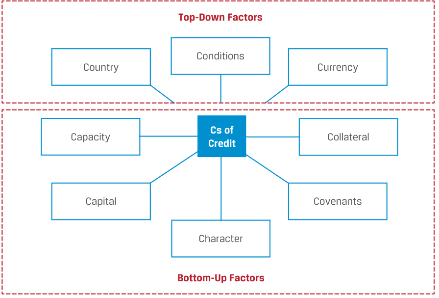
Chú thích hình ảnh: - Các chữ C của Tín dụng (Cs of Credit): - Các yếu tố từ trên xuống (Top-Down Factors): Điều kiện môi trường (Conditions), Quốc gia (Country), Tiền tệ (Currency) - Các yếu tố từ dưới lên (Bottom-Up Factors): Năng lực trả nợ (Capacity), Tài sản thế chấp (Collateral), Nguồn vốn (Capital), Các điều khoản ràng buộc (Covenants), Tư cách/Uy tín (Character)
Five of these criteria—capacity, capital, collateral, covenants, and character—are related to the specific bottom-up factors applicable to an individual borrower. Capacity refers to the ability of the borrower to make its debt payments on time. Capital addresses other company resources available that reduce reliance on debt. Collateral refers to the quality and value of the assets supporting the issuer’s indebtedness, while covenants are the legal terms of debt agreements that an issuer must comply with. Character refers to the quality of management and the willingness of repay indebtedness.
Năm trong số các tiêu chí này — năng lực trả nợ (capacity), nguồn vốn (capital), tài sản thế chấp (collateral), các điều khoản ràng buộc (covenants), và tư cách/uy tín (character) — liên quan đến các yếu tố đặc thù từ dưới lên (bottom-up factors) áp dụng cho từng bên đi vay riêng lẻ. Năng lực trả nợ (Capacity) đề cập đến khả năng của bên đi vay trong việc thực hiện các khoản thanh toán nợ đúng hạn. Nguồn vốn (Capital) đề cập đến các nguồn lực khác sẵn có của công ty giúp giảm sự phụ thuộc vào nợ vay. Tài sản thế chấp (Collateral) đề cập đến chất lượng và giá trị của các tài sản hỗ trợ cho khoản nợ của tổ chức phát hành, trong khi các điều khoản ràng buộc (covenants) là các điều khoản pháp lý của thỏa thuận nợ mà tổ chức phát hành phải tuân thủ. Tư cách/Uy tín (Character) đề cập đến chất lượng của ban lãnh đạo và thiện chí hoàn trả các khoản nợ.
While capacity and capital are generally quantitative metrics based on financial statements, collateral, covenants, and character are largely qualitative measures that analysts assess based on historical company performance, credit relationships and the reputation of current management.
Trong khi năng lực trả nợ và nguồn vốn nhìn chung là các thước đo định lượng dựa trên báo cáo tài chính, thì tài sản thế chấp, các điều khoản ràng buộc và tư cách/uy tín chủ yếu là các thước đo định tính mà các nhà phân tích đánh giá dựa trên kết quả hoạt động lịch sử của công ty, các mối quan hệ tín dụng và danh tiếng của ban lãnh đạo hiện tại.
The remaining three criteria—conditions, country, and currency—involve general top-down factors that apply to all borrowers to a greater or lesser extent. Conditions refers to the general economic, competitive, and business environment faced by all borrowers that may affect their ability to service or refinance debt. Country involves the geopolitical environment as well as the legal and political system faced by all issuers in a jurisdiction that may affect debt payment. Currency affects issuers whose cash flows are affected by exchange rate changes or who borrow in a currency outside of their jurisdiction, such as sovereign issuers with foreign currency debt.
Ba tiêu chí còn lại — điều kiện môi trường (conditions), quốc gia (country), và tiền tệ (currency) — liên quan đến các yếu tố chung từ trên xuống (top-down factors) áp dụng cho tất cả các bên đi vay ở mức độ nhiều hay ít. Điều kiện môi trường (Conditions) đề cập đến môi trường kinh tế, cạnh tranh và kinh doanh chung mà tất cả các bên đi vay phải đối mặt, có thể ảnh hưởng đến khả năng trả nợ hoặc tái cấp vốn nợ của họ. Quốc gia (Country) liên quan đến môi trường địa chính trị cũng như hệ thống pháp lý và chính trị mà tất cả các tổ chức phát hành trong một khu vực tài phán phải đối mặt, có thể ảnh hưởng đến việc thanh toán nợ. Tiền tệ (Currency) ảnh hưởng đến các tổ chức phát hành có dòng tiền chịu tác động bởi biến động tỷ giá hối đoái hoặc những tổ chức đi vay bằng đồng tiền bên ngoài khu vực tài phán của họ, chẳng hạn như các tổ chức phát hành chính phủ có nợ bằng ngoại tệ.
A borrower’s inability to make timely payments may be due to several underlying and contributing factors, but it ultimately results from a lack of sufficient cash available to make a current debt payment. Lenders, as fixed-income investors, are impacted by credit risk. They may lose some or all of the principal and interest due, suffering a capital loss or income shortfall. This disruption to their cash flows may impact their own ability to repay debt, and payment delays as well as increased legal and collection costs may further reduce their income and margins.
Việc bên đi vay không có khả năng thanh toán đúng hạn có thể do một số yếu tố cơ bản và góp phần gây ra, nhưng suy cho cùng là xuất phát từ việc thiếu lượng tiền mặt đủ để thực hiện khoản thanh toán nợ hiện hành. Bên cho vay, với tư cách là các nhà đầu tư thu nhập cố định, chịu tác động bởi rủi ro tín dụng. Họ có thể mất một phần hoặc toàn bộ tiền gốc và lãi đến hạn, gánh chịu lỗ vốn (capital loss) hoặc thiếu hụt thu nhập (income shortfall). Sự gián đoạn đối với dòng tiền của họ có thể ảnh hưởng đến chính khả năng trả nợ của họ, và sự chậm trễ thanh toán cũng như chi phí pháp lý và thu hồi nợ gia tăng có thể làm giảm thêm thu nhập và biên lợi nhuận của họ.
Sources of Credit Risk
Các nguồn phát sinh Rủi ro Tín dụng (Sources of Credit Risk)
Changes in credit risk due to issuer-based or overall economic conditions are affected by the source of repayment, which differs among issuer types. Exhibit 2 shows the main sources of repayment for corporate and sovereign bonds.
Những thay đổi trong rủi ro tín dụng do điều kiện của tổ chức phát hành hoặc điều kiện kinh tế tổng thể đều chịu ảnh hưởng bởi nguồn trả nợ (source of repayment), vốn khác nhau giữa các loại hình tổ chức phát hành. Bảng minh họa 2 cho thấy các nguồn trả nợ chính đối với trái phiếu doanh nghiệp và trái phiếu chính phủ.
Exhibit 2: Sovereign and Corporate Bond Sources of Repayment
Bảng minh họa 2: Các nguồn Trả nợ của Trái phiếu Chính phủ và Trái phiếu Doanh nghiệp (Sovereign and Corporate Bond Sources of Repayment)
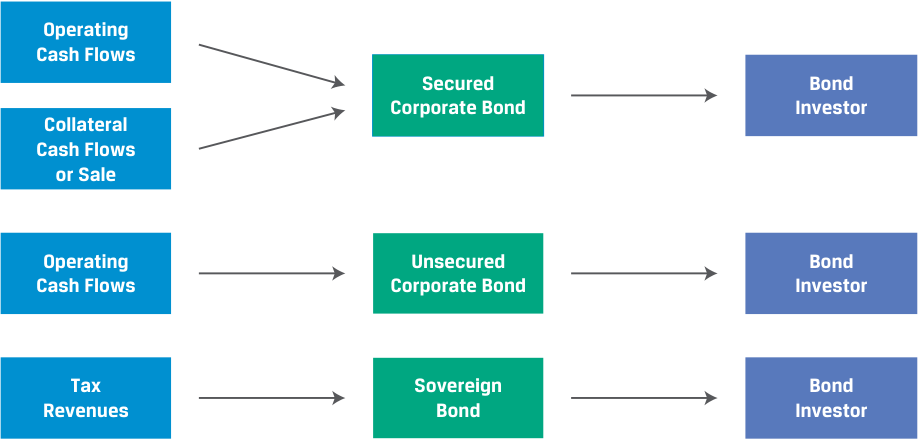
Chú thích hình ảnh: - Nhà đầu tư Trái phiếu Doanh nghiệp có bảo đảm (Secured Bond Corporate Bond Investor) $\leftarrow$ Dòng tiền hoạt động (Operating Cash Flows) + Dòng tiền hoặc tiền bán Tài sản thế chấp (Collateral Cash Flows or Sale) - Nhà đầu tư Trái phiếu Doanh nghiệp không có bảo đảm (Unsecured Bond Corporate Bond Investor) $\leftarrow$ Dòng tiền hoạt động (Operating Cash Flows) - Nhà đầu tư Trái phiếu Chính phủ (Sovereign Bond Investor) $\leftarrow$ Nguồn thu thuế (Tax Revenues)
A corporation may not generate sufficient cash flow from its operations, financing activities, and investments to make timely payments on its debt, increasing the risk of default. Similarly, a sovereign borrower may not generate sufficient revenue through taxes, incomes, and fees to make timely payments.
Một doanh nghiệp có thể không tạo ra đủ dòng tiền từ hoạt động kinh doanh, hoạt động tài chính và hoạt động đầu tư của mình để thực hiện thanh toán đúng hạn cho khoản nợ, làm tăng rủi ro vỡ nợ. Tương tự, một bên đi vay là chính phủ có chủ quyền có thể không tạo ra đủ doanh thu thông qua thuế, thu nhập và phí để thực hiện thanh toán đúng hạn.
Borrowers that lack the resources to meet debt obligations as they come due are often described as illiquid. An illiquid borrower is unable to raise the necessary funds to fulfill a debt obligation. They may not be able to tap credit lines, sell assets, or otherwise raise funding to make a timely debt payment. That is different from an insolvent borrower whose assets are worth less than its liabilities. An illiquid borrower just does not have, or is unable to secure, the liquidity needed to make timely payment.
Những bên đi vay thiếu nguồn lực để đáp ứng các nghĩa vụ nợ khi đến hạn thường được mô tả là kém thanh khoản (illiquid). Một bên đi vay mất thanh khoản không có khả năng huy động các nguồn vốn cần thiết để thực hiện nghĩa vụ nợ. Họ có thể không tiếp cận được các hạn mức tín dụng (credit lines), không bán được tài sản, hoặc không huy động được vốn bằng cách khác để thanh toán nợ đúng hạn. Điều đó khác với một bên đi vay mất khả năng thanh toán (insolvent) có giá trị tài sản thấp hơn nợ phải trả. Một bên đi vay mất thanh khoản chỉ đơn giản là không có, hoặc không thể đảm bảo được, lượng thanh khoản cần thiết để thanh toán đúng hạn.
Credit risk analysis focuses on understanding how a borrower generates cash, how and when cash is used, and what events and risks may impede the borrower’s ability to repay the debt. In earlier lessons, we encountered unsecured debt, where the primary source of repayment is the cash flow generated by the business. In the case of secured debt, the primary source of repayment remains the firm’s cash flows, but it is also supported by collateral pledged by the company. The following example involves an investor considering an unsecured bond versus a secured bond.
Phân tích rủi ro tín dụng tập trung vào việc tìm hiểu cách thức một bên đi vay tạo ra tiền mặt, cách thức và thời điểm tiền mặt được sử dụng, cũng như những sự kiện và rủi ro nào có thể cản trở khả năng hoàn trả khoản nợ của bên đi vay. Trong các bài học trước, chúng ta đã gặp nợ không có bảo đảm (unsecured debt), trong đó nguồn trả nợ chính là dòng tiền được tạo ra từ hoạt động kinh doanh. Trong trường hợp nợ có bảo đảm (secured debt), nguồn trả nợ chính vẫn là dòng tiền của doanh nghiệp, nhưng nó còn được hỗ trợ thêm bởi tài sản thế chấp (collateral) do công ty cầm cố. Ví dụ sau đây liên quan đến một nhà đầu tư đang cân nhắc giữa một trái phiếu không có bảo đảm và một trái phiếu có bảo đảm.
EXAMPLE 1
VÍ DỤ 1
Risk Comparison of BRWA and VIVU Notes
So sánh Rủi ro giữa Trái phiếu BRWA và VIVU
The hypothetical car manufacturer Bright Wheel Automotive (BRWA) is an investment-grade (IG) issuer with ready access to unsecured debt, while Vivivyu Inc. (VIVU) is a hypothetical high-yield (HY) issuer that borrows on a secured basis. Let us compare 3.2% senior unsecured and unsubordinated BRWA notes to 6.5% secured unsubordinated VIVU notes. Consider BRWA’s debt profile:
Nhà sản xuất ô tô giả định Bright Wheel Automotive (BRWA) là một tổ chức phát hành hạng đầu tư (IG) có khả năng tiếp cận dễ dàng với nợ không có bảo đảm, trong khi Vivivyu Inc. (VIVU) là một tổ chức phát hành lợi suất cao (HY) giả định đi vay trên cơ sở có bảo đảm. Chúng ta hãy so sánh trái phiếu trung hạn (notes) BRWA cấp cao không có bảo đảm và không thứ cấp (senior unsecured and unsubordinated) lãi suất 3.2% với trái phiếu trung hạn VIVU có bảo đảm không thứ cấp (secured unsubordinated) lãi suất 6.5%. Hãy xem xét hồ sơ nợ (debt profile) của BRWA:
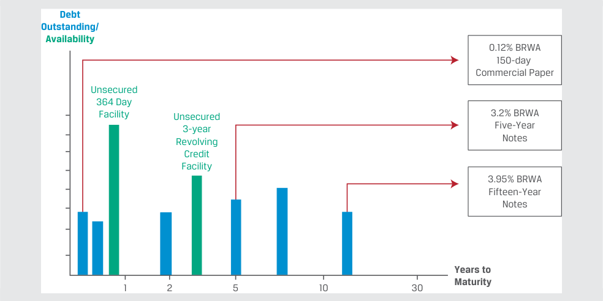
Chú thích hình ảnh: Hồ sơ nợ của Tập đoàn BRWA (BRWA Corporation Debt Profile) - Trục tung: Dư nợ / Hạn mức khả dụng (Debt Outstanding / Availability) - Trục hoành: Số năm đến khi đáo hạn (Years to Maturity: 1, 2, 5, 10, 30) - Các khoản nợ: Thương phiếu 150 ngày lãi suất 0.12% của BRWA (0.12% BRWA 150-day Commercial Paper); Hạn mức tín dụng 364 ngày không bảo đảm (Unsecured 364 Day Facility); Hạn mức tín dụng tuần hoàn 3 năm không bảo đảm (Unsecured 3-year Revolving Credit Facility); Trái phiếu 5 năm lãi suất 3.2% của BRWA (3.2% BRWA Five-Year Notes); Trái phiếu 15 năm lãi suất 3.95% của BRWA (3.95% BRWA Fifteen-Year Notes).
If BRWA fails to make an interest or principal payment on the note, BRWA is in default. Since its bonds are unsecured and unsubordinated obligations with pari passu and cross-default language in its bond indenture, failure to repay unsecured indebtedness means that all its debt obligations are in default and investors must rely on BRWA’s general asset pool to satisfy their obligations, as shown below.
Nếu BRWA không thực hiện thanh toán lãi hoặc gốc cho trái phiếu này, BRWA sẽ bị vỡ nợ. Vì các trái phiếu của công ty là nghĩa vụ nợ không có bảo đảm và không thứ cấp có điều khoản ngang hàng (pari passu) và vỡ nợ chéo (cross-default) trong khế ước trái phiếu (bond indenture), việc không hoàn trả được khoản nợ không có bảo đảm đồng nghĩa với việc tất cả các nghĩa vụ nợ của công ty đều bị vỡ nợ và các nhà đầu tư phải dựa vào khối tài sản chung (general asset pool) của BRWA để đáp ứng các nghĩa vụ của họ, như minh họa dưới đây.
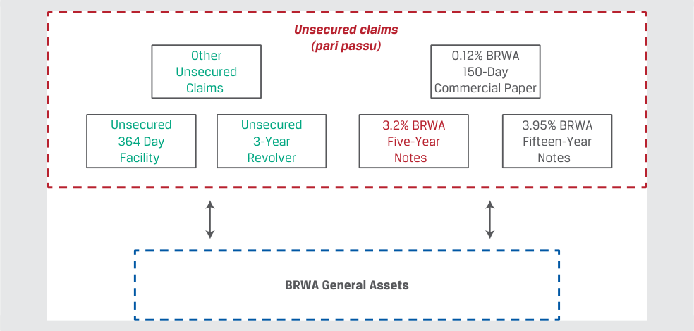
Chú thích hình ảnh: - Các quyền đòi nợ không có bảo đảm (ngang hàng - pari passu): Các quyền đòi nợ không bảo đảm khác (Other Unsecured Claims), Hạn mức 364 ngày không bảo đảm, Hạn mức tuần hoàn 3 năm không bảo đảm, Thương phiếu 150 ngày 0.12% BRWA, Trái phiếu 5 năm 3.2% BRWA, Trái phiếu 15 năm 3.95% BRWA $\rightarrow$ Cùng dựa vào Tài sản chung của BRWA (BRWA General Assets).
As an HY issuer, on the other hand, VIVU is limited to secured debt market access, as shown in its debt profile.
Mặt khác, với tư cách là một tổ chức phát hành HY, VIVU bị giới hạn trong việc tiếp cận thị trường nợ có bảo đảm, như được thể hiện trong hồ sơ nợ của công ty.
VIVU Debt Profile
Hồ sơ nợ của VIVU (VIVU Debt Profile)
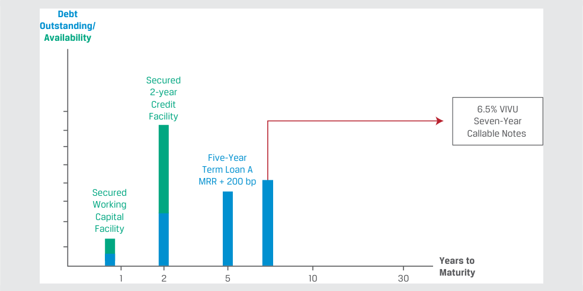
Chú thích hình ảnh: Hồ sơ nợ của VIVU (VIVU Debt Profile) - Trục tung: Dư nợ / Hạn mức khả dụng (Debt Outstanding / Availability) - Trục hoành: Số năm đến khi đáo hạn (Years to Maturity: 1, 2, 5, 10, 30) - Các khoản nợ: Hạn mức vốn lưu động có bảo đảm (Secured Working Capital Facility); Hạn mức tín dụng 2 năm có bảo đảm (Secured 2-year Credit Facility); Khoản vay có kỳ hạn A 5 năm lãi suất MRR + 200 bp (Five-Year Term Loan A MRR + 200 bp); Trái phiếu có thể mua lại 7 năm lãi suất 6.5% của VIVU (6.5% VIVU Seven-Year Callable Notes).
Lưu ý: MRR viết tắt của lãi suất tham chiếu thị trường (market reference rate).
Note: MRR stands for market reference rate.
VIVU’s failure to make timely payments due on the note will also result in default. The pari passu clause and cross-default language in its bond indenture with other unsecured indebtedness also sends all VIVU debt obligations into default. While all of VIVU’s debt investors have access to any unpledged assets, specific pledged assets serve as a secondary source of repayment for specific debt, as shown below.
Việc VIVU không thực hiện thanh toán đúng hạn cho trái phiếu cũng sẽ dẫn đến vỡ nợ. Điều khoản ngang hàng (pari passu) và điều khoản vỡ nợ chéo (cross-default) trong khế ước trái phiếu của công ty đối với các khoản nợ không có bảo đảm khác cũng đẩy tất cả các nghĩa vụ nợ của VIVU vào tình trạng vỡ nợ. Mặc dù tất cả các nhà đầu tư nợ của VIVU đều có quyền tiếp cận bất kỳ tài sản chưa cầm cố (unpledged assets) nào, các tài sản cầm cố cụ thể (specific pledged assets) đóng vai trò là nguồn trả nợ thứ cấp cho từng khoản nợ cụ thể, như minh họa dưới đây.
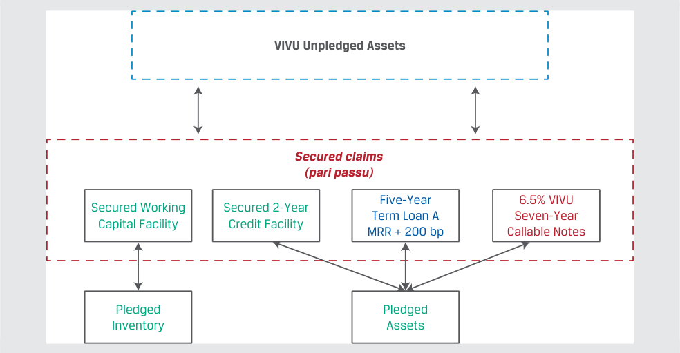
Chú thích hình ảnh: - Tài sản chưa cầm cố của VIVU (VIVU Unpledged Assets) nằm ở phía trên. - Các quyền đòi nợ có bảo đảm (ngang hàng - pari passu): - Hạn mức vốn lưu động có bảo đảm (Secured Working Capital Facility) $\rightarrow$ Hàng tồn kho cầm cố (Pledged Inventory). - Hạn mức tín dụng 2 năm có bảo đảm (Secured 2-Year Credit Facility), Khoản vay có kỳ hạn A 5 năm MRR + 200 bp (Five-Year Term Loan A), Trái phiếu có thể mua lại 7 năm 6.5% VIVU (6.5% VIVU Seven-Year Callable Notes) $\rightarrow$ Tài sản cầm cố (Pledged Assets).
In this example, VIVU’s secured claims include its working capital facility secured by short-term assets (in this case inventory), while its long-term secured debt including the callable notes are backed by a claim to specific long-term assets pledged. As a secondary source of repayment, only when the value of the pledged assets falls below the total amount of pari passu secured debt will VIVU noteholders begin to suffer a credit loss.
Trong ví dụ này, các quyền đòi nợ có bảo đảm của VIVU bao gồm hạn mức vốn lưu động được bảo đảm bằng tài sản ngắn hạn (trong trường hợp này là hàng tồn kho), trong khi khoản nợ dài hạn có bảo đảm bao gồm cả trái phiếu có thể mua lại được bảo đảm bằng quyền đòi nợ đối với các tài sản dài hạn cụ thể đã cầm cố. Với tư cách là nguồn trả nợ thứ cấp, chỉ khi giá trị của các tài sản cầm cố giảm xuống dưới tổng giá trị của khoản nợ có bảo đảm ngang hàng (pari passu) thì các trái chủ của VIVU mới bắt đầu gánh chịu tổn thất tín dụng.
While the likelihood of default for investment-grade borrowers, such as BRWA, is typically well below that of a high-yield issuer such as VIVU, the investor’s loss in the event of a default for secured debt is usually lower than unsecured debt due to the secondary source of repayment for secured bonds.
Mặc dù khả năng xảy ra vỡ nợ (likelihood of default) đối với các bên đi vay hạng đầu tư, chẳng hạn như BRWA, thường thấp hơn nhiều so với một tổ chức phát hành lợi suất cao như VIVU, nhưng mức tổn thất của nhà đầu tư trong trường hợp vỡ nợ (loss in the event of a default) đối với nợ có bảo đảm thường thấp hơn so với nợ không có bảo đảm nhờ có nguồn trả nợ thứ cấp của trái phiếu có bảo đảm.
We encountered the Government of Romania’s EUR1.95 billion 30-year debt issue in an earlier lesson. For a sovereign government, the right to tax economic activity within its borders means that the sources of repayment are the personal and corporate income taxes, sales taxes, and other revenue generated by the government. In the
Chúng ta đã bắt gặp đợt phát hành nợ kỳ hạn 30 năm trị giá 1.95 tỷ EUR của Chính phủ Romania trong một bài học trước. Đối với một chính phủ có chủ quyền, quyền đánh thuế lên các hoạt động kinh tế trong phạm vi biên giới quốc gia đồng nghĩa với việc các nguồn trả nợ là thuế thu nhập cá nhân và doanh nghiệp, thuế doanh thu (sales taxes), và các khoản thu khác do chính phủ tạo ra. Trong
specific case of Romania’s EUR-denominated debt, the government’s ability to generate reserve currency cash flows based upon its institutional and economic profile, use of monetary and fiscal policy, and exchange rate regime are additional considerations. The main borrower types and their primary sources of repayment and credit risk are listed in Exhibit 3.
trường hợp cụ thể của khoản nợ định danh bằng đồng EUR của Romania, khả năng tạo ra dòng tiền bằng đồng tiền dự trữ (reserve currency) của chính phủ dựa trên hồ sơ thể chế và kinh tế, việc sử dụng chính sách tiền tệ và tài khóa, và chế độ tỷ giá hối đoái là những yếu tố cần xem xét bổ sung. Các loại hình bên đi vay chính cùng nguồn trả nợ chính và nguồn rủi ro tín dụng của họ được liệt kê trong Bảng minh họa 3.
Exhibit 3: Borrower Types, Sources of Repayment, and Sources of Credit Risk
Bảng minh họa 3: Các loại hình Bên đi vay, Nguồn Trả nợ và Nguồn Rủi ro Tín dụng (Borrower Types, Sources of Repayment, and Sources of Credit Risk)
| Borrower Type | Primary Source of Cash Flow Generation |
Secondary Source of Cash Flow Generation |
Sources of Credit Risk |
|---|---|---|---|
| Corporate | ■Business operations ■Investment and financing activities |
■Asset sales ■Divestitures ■Additional debt issuance ■Equity issuance |
■Economic contraction ■Strategic shifts in the business and market environment ■Increased competition ■Reduced pricing power ■Shrinking operating margins, increased losses ■Excessive debt service needs |
| Sovereign or public entity |
■Corporate and personal income taxes, sales tax and VAT revenue, capital gains and wealth-based taxes ■Tariffs, fees, and other gov- ernment revenue |
■Newly issued debt ■Sale of public assets, privatization |
■Economic contraction ■Political uncertainty ■Excessive debt service needs ■Expansionary economic policies ■Budget deficits ■Tax cuts ■Limited ability to collect taxes |
| Loại hình Bên đi vay (Borrower Type) | Nguồn tạo Dòng tiền Chính (Primary Source of Cash Flow Generation) | Nguồn tạo Dòng tiền Thứ cấp (Secondary Source of Cash Flow Generation) | Các nguồn Rủi ro Tín dụng (Sources of Credit Risk) |
|---|---|---|---|
| Doanh nghiệp (Corporate) | ■ Hoạt động kinh doanh (Business operations) ■ Hoạt động đầu tư và tài chính (Investment and financing activities) |
■ Bán tài sản (Asset sales) ■ Thoái vốn (Divestitures) ■ Phát hành thêm nợ (Additional debt issuance) ■ Phát hành cổ phần (Equity issuance) |
■ Suy giảm kinh tế (Economic contraction) ■ Thay đổi chiến lược trong môi trường kinh doanh và thị trường (Strategic shifts in the business and market environment) ■ Cạnh tranh gia tăng (Increased competition) ■ Giảm quyền định giá (Reduced pricing power) ■ Biên lợi nhuận hoạt động thu hẹp, thua lỗ gia tăng (Shrinking operating margins, increased losses) ■ Nhu cầu trả nợ quá mức (Excessive debt service needs) |
| Chính phủ có chủ quyền hoặc tổ chức công (Sovereign or public entity) | ■ Thuế thu nhập doanh nghiệp và cá nhân, thuế doanh thu và doanh thu thuế GTGT (VAT), thuế lãi vốn và thuế tài sản (Corporate and personal income taxes, sales tax and VAT revenue, capital gains and wealth-based taxes) ■ Thuế quan, phí và doanh thu khác của chính phủ (Tariffs, fees, and other government revenue) |
■ Nợ mới phát hành (Newly issued debt) ■ Bán tài sản công, tư nhân hóa (Sale of public assets, privatization) |
■ Suy giảm kinh tế (Economic contraction) ■ Bất ổn chính trị (Political uncertainty) ■ Nhu cầu trả nợ quá mức (Excessive debt service needs) ■ Các chính sách kinh tế mở rộng (Expansionary economic policies) ■ Thâm hụt ngân sách (Budget deficits) ■ Cắt giảm thuế (Tax cuts) ■ Khả năng thu thuế hạn chế (Limited ability to collect taxes) |
While many factors affect the primary and secondary sources of repayment for different fixed-income issuers, investors seek to measure and compare credit risk among different borrowers for similar maturities as well as across maturities for the same borrower.
Mặc dù có nhiều yếu tố ảnh hưởng đến nguồn trả nợ chính và thứ cấp của các tổ chức phát hành thu nhập cố định khác nhau, các nhà đầu tư luôn tìm cách đo lường và so sánh rủi ro tín dụng giữa các bên đi vay khác nhau có cùng kỳ hạn cũng như giữa các kỳ hạn khác nhau của cùng một bên đi vay.
For example, consider the comparison of BRWA and VIVU notes in Example 1. If we set aside both the VIVU maturity difference and call feature (which the issuer may exercise any time from year three through maturity in year seven) by assuming a similar expected maturity to the BRWA bond for the time being, compare the 6.5% VIVU debt coupon to the 3.2% fixed rate of the BRWA bond. How can we assess whether the additional 3.3% (= 6.5% − 3.2%) in interest adequately compensates an investor for the additional risk? We turn to measures of credit risk, which help answer this question in the next section.
Ví dụ, hãy xem xét phép so sánh giữa trái phiếu BRWA và VIVU trong Ví dụ 1. Nếu tạm thời chúng ta bỏ qua cả sự khác biệt về kỳ hạn lẫn tính năng mua lại (call feature) của VIVU (tính năng mà tổ chức phát hành có thể thực hiện bất kỳ lúc nào từ năm thứ ba cho đến khi đáo hạn vào năm thứ bảy) bằng cách giả định kỳ hạn kỳ vọng tương tự như trái phiếu BRWA, hãy so sánh mức lãi suất coupon 6.5% của khoản nợ VIVU với mức lãi suất cố định 3.2% của trái phiếu BRWA. Làm thế nào chúng ta có thể đánh giá liệu mức lãi tăng thêm 3.3% ($= 6.5\% - 3.2\%$) có đền bù thỏa đáng cho nhà đầu tư đối với phần rủi ro tăng thêm hay không? Chúng ta sẽ chuyển sang các thước đo rủi ro tín dụng để giúp trả lời câu hỏi này trong phần tiếp theo.
Measuring Credit Risk
Đo lường Rủi ro Tín dụng (Measuring Credit Risk)
Fixed-income investors face credit risk, or the risk that an issuer does not make promised interest and principal payments. This probability-weighted shortfall known as the expected loss (EL) for a given period has two components, as shown in Exhibit 4.
Các nhà đầu tư thu nhập cố định phải đối mặt với rủi ro tín dụng, hay rủi ro tổ chức phát hành không thực hiện các khoản thanh toán tiền lãi và nợ gốc đã cam kết. Khoản thiếu hụt có trọng số xác suất này được gọi là tổn thất kỳ vọng (expected loss – EL) cho một giai đoạn nhất định và có hai cấu phần, như được trình bày trong Bảng minh họa 4.
Exhibit 4: Components of Credit Risk
Bảng minh họa 4: Các cấu phần của Rủi ro Tín dụng (Components of Credit Risk)
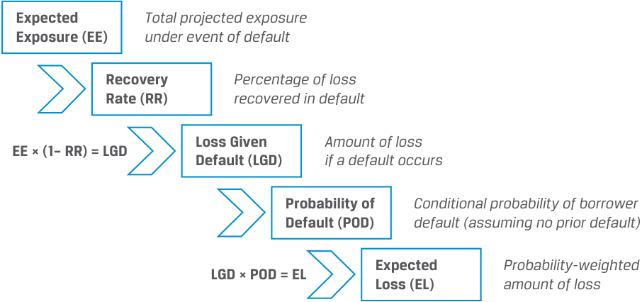
Chú thích hình ảnh: - Dư nợ rủi ro kỳ vọng (Expected Exposure – EE): Tổng dư nợ rủi ro dự phóng khi xảy ra sự kiện vỡ nợ $\rightarrow$ Kết hợp với Tỷ lệ thu hồi (Recovery Rate – RR): Tỷ lệ phần trăm tổn thất thu hồi được khi vỡ nợ $\rightarrow$ $\text{EE} \times (1 - \text{RR}) = \text{LGD}$. - Mức tổn thất khi vỡ nợ (Loss Given Default – LGD): Giá trị tổn thất nếu xảy ra vỡ nợ $\rightarrow$ Kết hợp với Xác suất vỡ nợ (Probability of Default – POD): Xác suất có điều kiện bên đi vay vỡ nợ (giả định chưa vỡ nợ trước đó) $\rightarrow$ $\text{LGD} \times \text{POD} = \text{EL}$. - Tổn thất kỳ vọng (Expected Loss – EL): Giá trị tổn thất có trọng số xác suất.
The first is known as the probability of default (POD) , which is the likelihood that an issuer fails to make full and timely payments of principal and interest. The probability of default is typically an annualized measure.
Cấu phần thứ nhất được gọi là xác suất vỡ nợ (probability of default – POD), là khả năng một tổ chức phát hành không thực hiện thanh toán đầy đủ và đúng hạn nợ gốc và tiền lãi. Xác suất vỡ nợ thường là một thước đo được chuẩn hóa theo năm (annualized measure).
The second component is the loss given default (LGD) , or the investor’s loss conditional on an issuer event of default. The loss given default combines the severity of loss under a default scenario with the amount of the investor’s claim at the time of default. The recovery rate (RR) represents the percentage of an outstanding debt claim recovered when an issuer defaults, while the loss severity of (1 − RR) represents the unrecovered portion of the claim. The size of the investor’s claim at the time of default is known as the expected exposure (EE) or exposure at default (EAD) . This is the amount an investor may expect to lose in the case of default, which is usually equal to the loan or bond face value plus accrued interest less the current market value of available collateral. In most instances, in the event of default, bondholders will usually recover some proportion of their investment.
Cấu phần thứ hai là mức tổn thất khi vỡ nợ (loss given default – LGD), hay khoản tổn thất của nhà đầu tư với điều kiện xảy ra sự kiện vỡ nợ của tổ chức phát hành. Mức tổn thất khi vỡ nợ kết hợp mức độ nghiêm trọng của tổn thất (severity of loss) trong kịch bản vỡ nợ với quy mô quyền đòi nợ của nhà đầu tư tại thời điểm vỡ nợ. Tỷ lệ thu hồi (recovery rate – RR) thể hiện tỷ lệ phần trăm của quyền đòi nợ đang lưu hành được thu hồi khi tổ chức phát hành vỡ nợ, trong khi mức độ nghiêm trọng của tổn thất (loss severity) bằng $(1 - \text{RR})$ thể hiện phần không thu hồi được của quyền đòi nợ. Quy mô quyền đòi nợ của nhà đầu tư tại thời điểm vỡ nợ được gọi là dư nợ rủi ro kỳ vọng (expected exposure – EE) hoặc dư nợ tại thời điểm vỡ nợ (exposure at default – EAD). Đây là số tiền mà nhà đầu tư có thể kỳ vọng bị mất trong trường hợp vỡ nợ, thường bằng mệnh giá khoản vay hoặc trái phiếu cộng với lãi tích lũy trừ đi giá trị thị trường hiện tại của tài sản thế chấp hiện có. Trong hầu hết các trường hợp, khi xảy ra vỡ nợ, các trái chủ thường sẽ thu hồi được một tỷ lệ nhất định trong khoản đầu tư của mình.
The expected loss is shown in Equation 1:
Tổn thất kỳ vọng được trình bày trong Phương trình 1:
EL = POD × LGD, ~~(1)~~
where LGD = EE × (1 – RR).
trong đó $\text{LGD} = \text{EE} \times (1 - \text{RR})$.
The LGD can be expressed either in currency terms (e.g., EUR450,000) or as a percentage of principal (e.g., 45%). The latter form of expression is more useful for analysis since it allows comparison across borrowers and investments of different sizes.
$\text{LGD}$ có thể được biểu thị bằng đơn vị tiền tệ (ví dụ: EUR450,000) hoặc dưới dạng tỷ lệ phần trăm của nợ gốc (ví dụ: 45%). Cách biểu thị thứ hai hữu ích hơn cho việc phân tích vì nó cho phép so sánh giữa các bên đi vay và các khoản đầu tư có quy mô khác nhau.
One way to interpret the expected loss on a fixed-income security for a given period is to compare it to the compensation an investor expects for taking on the credit risk of a borrower over that period, which is the credit spread. Recall from an earlier lesson that the G-spread is equal to yield spread in basis points over an actual or interpolated government bond. This approximation may be expressed as follows:
Một cách để diễn giải tổn thất kỳ vọng trên một chứng khoán thu nhập cố định trong một giai đoạn nhất định là so sánh nó với mức đền bù mà nhà đầu tư kỳ vọng nhận được khi gánh chịu rủi ro tín dụng của bên đi vay trong giai đoạn đó, chính là phần bù tín dụng (credit spread). Hãy nhớ lại từ bài học trước rằng phần bù G (G-spread) bằng phần bù lợi suất tính bằng điểm cơ bản so với một trái phiếu chính phủ thực tế hoặc nội suy. Phép xấp xỉ này có thể được biểu diễn như sau:
Credit Spread ≈ POD × LGD. ~~(2)~~
Therefore, we can say that the investor is fairly compensated if the expected loss is equal to the credit spread for a given period. The following example uses this information to assess the expected loss versus compensation for the BRWA and VIVU bonds from Example 1.
Do đó, chúng ta có thể nói rằng nhà đầu tư được đền bù thỏa đáng (fairly compensated) nếu tổn thất kỳ vọng bằng với phần bù tín dụng trong một giai đoạn nhất định. Ví dụ sau đây sử dụng thông tin này để đánh giá tổn thất kỳ vọng so với mức đền bù đối với trái phiếu BRWA và VIVU từ Ví dụ 1.
EXAMPLE 2
VÍ DỤ 2
Comparing Expected Loss and Credit Spreads
So sánh Tổn thất Kỳ vọng và Phần bù Tín dụng
Recall from Example 1 that Bright Wheel Automotive (BRWA) issued an unsecured five-year bond with a 3.2% fixed coupon. The yield-to-maturity difference between BRWA’s five-year bond and the comparable US Treasury bond is 90 bps (= 3.2% – 2.3%), which reflects BRWA’s credit spread over Treasuries, known as the G-spread. Vivivyu Inc. (VIVU) issued a 6.5% fixed-rate bond, which the issuer has the right to call at a fixed price any time from three years from the issuance date until final maturity in seven years.
Hãy nhớ lại từ Ví dụ 1 rằng Bright Wheel Automotive (BRWA) đã phát hành một trái phiếu không có bảo đảm kỳ hạn 5 năm với lãi suất coupon cố định 3.2%. Chênh lệch lợi suất đáo hạn (yield-to-maturity) giữa trái phiếu kỳ hạn 5 năm của BRWA và trái phiếu Kho bạc Mỹ tương đương là 90 bps ($= 3.2\% - 2.3\%$), phản ánh phần bù tín dụng của BRWA so với trái phiếu Kho bạc, được gọi là G-spread. Vivivyu Inc. (VIVU) đã phát hành một trái phiếu lãi suất cố định 6.5%, mà tổ chức phát hành có quyền mua lại ở một mức giá cố định bất kỳ lúc nào kể từ 3 năm sau ngày phát hành cho đến khi đáo hạn cuối cùng vào năm thứ 7.
- Assuming the BRWA bond has a probability of default of 1% and a loss given default of 80%, estimate whether BRWA bond investors are adequately compensated for assuming BRWA credit risk.
- Giả sử trái phiếu BRWA có xác suất vỡ nợ là 1% và mức tổn thất khi vỡ nợ là 80%, hãy ước tính xem các nhà đầu tư trái phiếu BRWA có được đền bù thỏa đáng khi gánh chịu rủi ro tín dụng của BRWA hay không.
Solution:
Lời giải:
Using Equation 1, we may solve for BRWA’s expected loss in percentage terms as follows:
Sử dụng Phương trình 1, chúng ta có thể giải tìm tổn thất kỳ vọng của BRWA dưới dạng phần trăm như sau:
EL = POD × LGD, or 0.8% = [0.01 × 80%].
Given BRWA’s credit spread of 0.9%, we may conclude based upon the approximation in Equation 2 that BRWA investors are fairly compensated for assuming the credit risk since:
Với phần bù tín dụng của BRWA là 0.9%, chúng ta có thể kết luận dựa trên phép xấp xỉ trong Phương trình 2 rằng các nhà đầu tư vào BRWA được đền bù thỏa đáng khi gánh chịu rủi ro tín dụng vì:
Credit Spread > POD × LGD.
Investors earn a 90 bps spread per year and have an expected loss of 80 bps per year.
Nhà đầu tư hưởng phần bù 90 bps mỗi năm và có mức tổn thất kỳ vọng là 80 bps mỗi năm.
- If we assume that VIVU has issued a five-year non-callable bond, as in the case of BRWA, with a probability of default of 6% and a loss given default of 50%, compare investor compensation for assuming the credit risk of the 6.5% VIVU debt coupon to that of the 3.2% fixed rate of the BRWA bond.
- Nếu chúng ta giả định rằng VIVU đã phát hành một trái phiếu không thể mua lại kỳ hạn 5 năm, giống như trường hợp của BRWA, với xác suất vỡ nợ là 6% và mức tổn thất khi vỡ nợ là 50%, hãy so sánh mức đền bù cho nhà đầu tư khi gánh chịu rủi ro tín dụng của trái phiếu VIVU lãi suất coupon 6.5% với mức lãi suất cố định 3.2% của trái phiếu BRWA.
Solution:
Lời giải:
Using Equation 1, we may solve for VIVU’s expected loss in percentage terms as follows:
Sử dụng Phương trình 1, chúng ta có thể giải tìm tổn thất kỳ vọng của VIVU dưới dạng phần trăm như sau:
EL = POD × LGD, or 3.0% = [0.06 × 50%].
We may calculate VIVU’s five-year credit spread by subtracting its 6.5% coupon from the 2.3% five-year US Treasury to solve for a G-spread of 4.2%. Based upon the approximation in Equation 2, we may conclude that VIVU investors are fairly compensated for assuming the credit risk since:
Chúng ta có thể tính phần bù tín dụng 5 năm của VIVU bằng cách lấy lãi suất coupon 6.5% trừ đi mức lợi suất 2.3% của trái phiếu Kho bạc Mỹ kỳ hạn 5 năm để tìm ra G-spread là 4.2%. Dựa trên phép xấp xỉ trong Phương trình 2, chúng ta có thể kết luận rằng các nhà đầu tư vào VIVU được đền bù thỏa đáng khi gánh chịu rủi ro tín dụng vì:
Credit Spread > POD × LGD.
Investors earn a 420 bps per year spread and have an expected loss of 300 bps per year.
Nhà đầu tư hưởng phần bù 420 bps mỗi năm và có mức tổn thất kỳ vọng là 300 bps mỗi năm.
- How would the determination of the spread as well as investor’s view of the risk versus compensation for the VIVU bond change from Question 2 if we
- Việc xác định phần bù cũng như quan điểm của nhà đầu tư về rủi ro so với mức đền bù đối với trái phiếu VIVU sẽ thay đổi như thế nào so với Câu hỏi 2 nếu chúng ta
consider the VIVU bond’s actual maturity and call feature with the original 6.5% coupon?
xem xét kỳ hạn thực tế và tính năng mua lại (call feature) của trái phiếu VIVU với mức coupon 6.5% ban đầu?
Solution:
Lời giải:
VIVU investors face both call risk and greater maturity risk on the original bond terms versus a five-year, non-callable bond. As described in earlier lessons, bonds callable at a fixed price prior to maturity are advantageous to issuers and disadvantageous to investors, so investors expect to be compensated via a higher yield versus a similar non-callable bond given the uncertain maturity and limited price appreciation known as call risk. This option-adjusted yield is the required market discount rate for which the bond’s price is adjusted for the value of the embedded option. Investors would also expect to be compensated for a longer time to maturity with a higher credit spread.
Các nhà đầu tư vào VIVU phải đối mặt với cả rủi ro bị mua lại trước hạn (call risk) và rủi ro kỳ hạn (maturity risk) lớn hơn theo các điều khoản trái phiếu ban đầu so với một trái phiếu kỳ hạn 5 năm không thể mua lại. Như đã mô tả trong các bài học trước, trái phiếu có thể mua lại ở mức giá cố định trước khi đáo hạn mang lại lợi thế cho tổ chức phát hành và bất lợi cho nhà đầu tư, do đó nhà đầu tư kỳ vọng được đền bù thông qua mức lợi suất cao hơn so với một trái phiếu không thể mua lại tương tự do sự không chắc chắn về kỳ hạn và khả năng tăng giá bị giới hạn, được gọi là rủi ro mua lại (call risk). Lợi suất điều chỉnh theo quyền chọn (option-adjusted yield) này là lãi suất chiết khấu thị trường yêu cầu mà tại đó giá của trái phiếu được điều chỉnh theo giá trị của quyền chọn gắn kèm (embedded option). Các nhà đầu tư cũng sẽ kỳ vọng được đền bù cho thời gian đáo hạn dài hơn bằng một phần bù tín dụng cao hơn.
We may further consider the drivers of expected loss for BRWA’s unsecured investment-grade debt as compared to VIVU’s secured high-yield debt in Example 2. The POD is driven by an issuer’s ability to service debt based on both qualitative and quantitative factors, including:
Chúng ta có thể xem xét sâu hơn các yếu tố thúc đẩy tổn thất kỳ vọng đối với khoản nợ hạng đầu tư không có bảo đảm của BRWA so với khoản nợ lợi suất cao có bảo đảm của VIVU trong Ví dụ 2. $\text{POD}$ được thúc đẩy bởi khả năng trả nợ của tổ chức phát hành dựa trên cả các yếu tố định tính và định lượng, bao gồm:
-
Profitability: Stable, predictable cash flows and profits;
-
Coverage: Sufficient cash flows/profits to make debt payments; and
-
Leverage: Relative reliance on debt financing.
-
Khả năng sinh lời (Profitability): Dòng tiền và lợi nhuận ổn định, có thể dự báo được;
-
Khả năng thanh toán lãi vay/trang trải nợ (Coverage): Đủ dòng tiền/lợi nhuận để thực hiện các khoản thanh toán nợ; và
-
Đòn bẩy tài chính (Leverage): Mức độ phụ thuộc tương đối vào tài trợ bằng nợ vay.
Higher profitability (as measured, for example, by EBIT margin) and higher coverage (EBIT to interest expense) coupled with lower leverage (debt to earnings or cash flow ratios, such as debt/EBITDA or cash flow to net debt) are associated with lower POD and higher credit quality. While financial ratios are one of several factors used to assess credit risk, and their relative level by rating category varies widely across industries and over time, Exhibit 5 provides a generic example of these relationships.
Khả năng sinh lời cao hơn (được đo lường, ví dụ, bằng biên EBIT – EBIT margin) và khả năng trang trải nợ cao hơn (tỷ số EBIT trên chi phí lãi vay – EBIT to interest expense) kết hợp với đòn bẩy thấp hơn (các tỷ số nợ trên thu nhập hoặc dòng tiền, chẳng hạn như Nợ/EBITDA hoặc dòng tiền trên nợ ròng – cash flow to net debt) gắn liền với $\text{POD}$ thấp hơn và chất lượng tín dụng cao hơn. Mặc dù các tỷ số tài chính là một trong số nhiều yếu tố được sử dụng để đánh giá rủi ro tín dụng, và mức độ tương đối của chúng theo từng bậc xếp hạng rất khác nhau giữa các ngành và theo thời gian, Bảng minh họa 5 cung cấp một ví dụ tổng quát về các mối quan hệ này.
Exhibit 5: Key Financial Ratios for Corporate Credit Risk and Ratings
Bảng minh họa 5: Các Tỷ số Tài chính Chính đối với Rủi ro Tín dụng và Xếp hạng Doanh nghiệp (Key Financial Ratios for Corporate Credit Risk and Ratings)
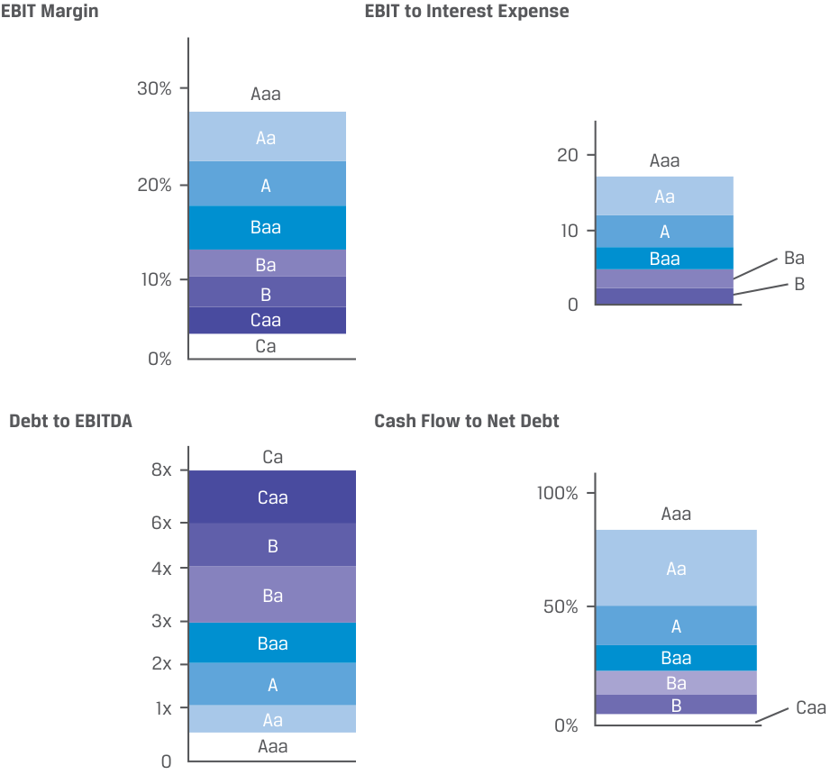
Chú thích hình ảnh: - Biên EBIT (EBIT Margin): Giảm dần từ hạng
Aaa(~30%),Aa,A,Baa,Ba,B,CaađếnCa(~0%). - Tỷ số EBIT trên Chi phí lãi vay (EBIT to Interest Expense): Giảm dần từ hạngAaa(~20x),Aa,A,Baa,Ba,BđếnCaa,Ca(< 0). - Tỷ số Nợ trên EBITDA (Debt to EBITDA): Tăng dần từ hạngAaa,Aa(< 1x),A,Baa,Ba,B,CaađếnCa(> 8x). - Tỷ số Dòng tiền trên Nợ ròng (Cash Flow to Net Debt): Giảm dần từ hạngAaa(~100%),Aa,A,Baa,Ba,B,CaađếnCa(< 0%).
As Exhibit 5 shows, changes in profitability (EBIT margin), coverage (EBIT to interest expense), and leverage (debt/EBITDA and cash flow to net debt) ratios over time may result in ratings upgrades or downgrades as well as changing credit spreads. The LGD for a given exposure, on the other hand, is largely a function of the nature and seniority of a creditor’s claim in a default scenario, as shown in Exhibit 6:
Như Bảng minh họa 5 cho thấy, những thay đổi trong các tỷ số về khả năng sinh lời (biên EBIT), khả năng trang trải nợ (EBIT trên chi phí lãi vay), và đòn bẩy (Nợ/EBITDA và dòng tiền trên nợ ròng) theo thời gian có thể dẫn đến việc nâng hạng (upgrades) hoặc hạ hạng (downgrades) tín nhiệm cũng như làm thay đổi phần bù tín dụng. Mặt khác, $\text{LGD}$ đối với một dư nợ rủi ro nhất định phần lớn là một hàm số phụ thuộc vào bản chất và thứ tự ưu tiên thanh toán (seniority) của quyền đòi nợ của chủ nợ trong kịch bản vỡ nợ, như được trình bày trong Bảng minh họa 6:
Exhibit 6: Seniority and LGD
Bảng minh họa 6: Thứ tự Ưu tiên Thanh toán và LGD (Seniority and LGD)
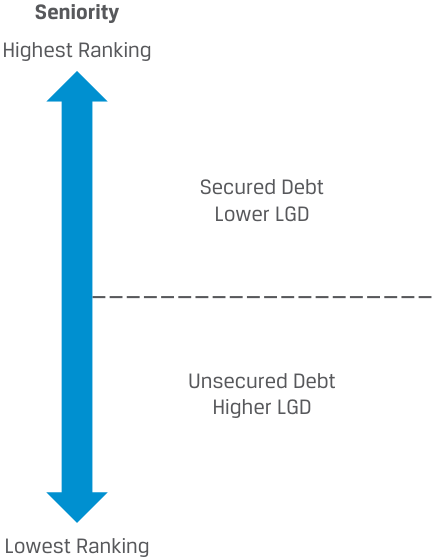
Chú thích hình ảnh: - Thứ tự ưu tiên (Seniority): Từ Thứ hạng cao nhất (Highest Ranking) đến Thứ hạng thấp nhất (Lowest Ranking). - Nợ có bảo đảm (Secured Debt) $\rightarrow$ LGD thấp hơn (Lower LGD). - Nợ không có bảo đảm (Unsecured Debt) $\rightarrow$ LGD cao hơn (Higher LGD).
For investors in unsecured investment-grade bonds or loans with a high LGD, the greatest risk of expected loss arises due to a rise in POD. On the other hand, high-yield investors expecting a greater likelihood of default seek to minimize EL by seeking covenant restrictions and/or security to lower LGD.
Đối với các nhà đầu tư vào trái phiếu hoặc khoản vay hạng đầu tư không có bảo đảm có $\text{LGD}$ cao, rủi ro tổn thất kỳ vọng lớn nhất phát sinh do sự gia tăng của $\text{POD}$. Mặt khác, các nhà đầu tư lợi suất cao (HY) vốn kỳ vọng khả năng xảy ra vỡ nợ lớn hơn sẽ tìm cách giảm thiểu $\text{EL}$ bằng cách yêu cầu các hạn chế trong điều khoản ràng buộc (covenant restrictions) và/hoặc tài sản bảo đảm để hạ thấp $\text{LGD}$.
QUESTION SET
BỘ CÂU HỎI (QUESTION SET)
- Determine the correct answers to fill in the blanks: The two components of credit risk are the __, typically measured over a 12-month horizon, and the __, which together with the recovery rate determine the _____.
- Xác định các câu trả lời đúng để điền vào chỗ trống: Hai cấu phần của rủi ro tín dụng là __, thường được đo lường trong khung thời gian 12 tháng, và __, yếu tố mà cùng với tỷ lệ thu hồi sẽ xác định _____.
Solution:
Lời giải:
The two components of credit risk are the probability of default , typically measured over a 12-month horizon, and the exposure at default (or expected exposure) , which together with the recovery rate determine the loss given default .
Hai cấu phần của rủi ro tín dụng là xác suất vỡ nợ (probability of default), thường được đo lường trong khung thời gian 12 tháng, và dư nợ tại thời điểm vỡ nợ (hoặc dư nợ rủi ro kỳ vọng) (exposure at default / expected exposure), yếu tố mà cùng với tỷ lệ thu hồi sẽ xác định mức tổn thất khi vỡ nợ (loss given default).
- Which of the following statements best describes the difference between unsecured and secured debt obligations in the event of issuer default?
-
A. Unsecured debtholders only have access to issuer cash flows, while secured debtholders only have access to specific pledged assets.
-
B. Both unsecured and secured debtholders have access to unpledged assets, while only secured debtholders have access to specific pledged assets as a secondary repayment source.
-
C. Only unsecured debtholders have access to pledged assets, while only secured debtholders have access to specific pledged assets.
-
Solution:
- Phát biểu nào sau đây mô tả đúng nhất sự khác biệt giữa nghĩa vụ nợ không có bảo đảm và nghĩa vụ nợ có bảo đảm trong trường hợp tổ chức phát hành vỡ nợ?
-
A. Các chủ nợ không có bảo đảm chỉ có quyền tiếp cận dòng tiền của tổ chức phát hành, trong khi các chủ nợ có bảo đảm chỉ có quyền tiếp cận các tài sản cầm cố cụ thể.
-
B. Cả chủ nợ không có bảo đảm và chủ nợ có bảo đảm đều có quyền tiếp cận các tài sản chưa cầm cố (unpledged assets), trong khi chỉ các chủ nợ có bảo đảm mới có quyền tiếp cận các tài sản cầm cố cụ thể như một nguồn trả nợ thứ cấp.
-
C. Chỉ các chủ nợ không có bảo đảm mới có quyền tiếp cận các tài sản cầm cố, trong khi chỉ các chủ nợ có bảo đảm mới có quyền tiếp cận các tài sản cầm cố cụ thể.
-
Lời giải:
B is correct. While all debtholders receive interest and principal payments from issuer cash flows, in an event of default both unsecured and secured
B là đáp án đúng. Mặc dù tất cả các chủ nợ đều nhận các khoản thanh toán tiền lãi và nợ gốc từ dòng tiền của tổ chức phát hành, nhưng khi xảy ra sự kiện vỡ nợ thì cả chủ nợ không có bảo đảm và có bảo đảm
Volume 6: Fixed Income
Learning Module 14 Credit Risk
Part 2/4: Credit Rating Agencies and Credit Ratings (PDF Pages 369–374)
Tập 6: Thu nhập Cố định (Fixed Income)
Học phần 14: Rủi ro Tín dụng (Credit Risk)
Phần 2/4: Các Tổ chức Xếp hạng Tín nhiệm và Xếp hạng Tín nhiệm (Trang PDF 369–374)
| debtholders have access to unpledged assets, while only secured debtholders have access to specific pledged assets as an additional repayment source. |
|---|
| 3. Which of the following factors are associated with a lower probability of default and higher credit quality for a corporate issuer? |
| A.Higher profitability, higher coverage, and higher leverage |
| B.Higher profitability, lower coverage, and lower leverage |
| C.Higher profitability, higher coverage, and lower leverage Solution: |
| C is correct. Higher profitability, higher coverage, and lower leverage are associated with a lower probability of default and higher credit quality for a corporate issuer. |
| 4. A bond investor analyzing Broadvue Corporation’s unsecured debt esti- mates a POD of 2% and an LGD of 80%. Using this information to approxi- mate the annual credit spread and observing an actual credit spread of 200 bps per year, which of the following statements is correct? |
| A.An investor would be fairly compensated for assuming Broadvue’s credit risk. |
| B.An investor would be less than fairly compensated for assuming Broadvue’s credit risk. |
| C.An investor would be more than fairly compensated for assuming Broadvue’s credit risk. Solution: |
| C is correct. Since POD × LGD = 1.60% and the credit spread is 2.00%, Credit Spread > POD × LGD and the investor would expect to be more than fairly compensated for assuming Broadvue’s credit risk. |
đều có quyền tiếp cận các tài sản chưa cầm cố (unpledged assets), trong khi chỉ các chủ nợ có bảo đảm mới có quyền tiếp cận các tài sản cầm cố cụ thể (specific pledged assets) như một nguồn trả nợ bổ sung.
- Những yếu tố nào sau đây gắn liền với xác suất vỡ nợ thấp hơn và chất lượng tín dụng cao hơn đối với một tổ chức phát hành doanh nghiệp?
-
A. Khả năng sinh lời cao hơn, khả năng trang trải nợ (coverage) cao hơn, và đòn bẩy cao hơn
-
B. Khả năng sinh lời cao hơn, khả năng trang trải nợ thấp hơn, và đòn bẩy thấp hơn
-
C. Khả năng sinh lời cao hơn, khả năng trang trải nợ cao hơn, và đòn bẩy thấp hơn
-
Lời giải:
C là đáp án đúng. Khả năng sinh lời cao hơn, khả năng trang trải nợ cao hơn và đòn bẩy thấp hơn gắn liền với xác suất vỡ nợ thấp hơn và chất lượng tín dụng cao hơn đối với một tổ chức phát hành doanh nghiệp.
- Một nhà đầu tư trái phiếu phân tích khoản nợ không có bảo đảm của Tập đoàn Broadvue ước tính $\text{POD}$ là 2% và $\text{LGD}$ là 80%. Sử dụng thông tin này để xấp xỉ phần bù tín dụng hàng năm và quan sát thấy phần bù tín dụng thực tế là 200 bps mỗi năm, phát biểu nào sau đây là đúng?
-
A. Nhà đầu tư sẽ được đền bù thỏa đáng (fairly compensated) khi gánh chịu rủi ro tín dụng của Broadvue.
-
B. Nhà đầu tư sẽ được đền bù thấp hơn mức thỏa đáng (less than fairly compensated) khi gánh chịu rủi ro tín dụng của Broadvue.
-
C. Nhà đầu tư sẽ được đền bù cao hơn mức thỏa đáng (more than fairly compensated) khi gánh chịu rủi ro tín dụng của Broadvue.
-
Lời giải:
CREDIT RATING AGENCIES AND CREDIT RATINGS
C là đáp án đúng. Vì $\text{POD} \times \text{LGD} = 1.60\%$ và phần bù tín dụng là $2.00\%$, ta có $\text{Credit Spread} > \text{POD} \times \text{LGD}$ và nhà đầu tư có thể kỳ vọng được đền bù cao hơn mức thỏa đáng khi gánh chịu rủi ro tín dụng của Broadvue.
CÁC TỔ CHỨC XẾP HẠNG TÍN NHIỆM VÀ XẾP HẠNG TÍN NHIỆM (CREDIT RATING AGENCIES AND CREDIT RATINGS)

describe the uses of ratings from credit rating agencies and their limitations
mô tả công dụng của xếp hạng tín nhiệm (credit ratings) từ các tổ chức xếp hạng tín nhiệm (credit rating agencies) và những hạn chế của chúng
The three major credit rating agencies—Moody’s Investors Service (“Moody’s”), Standard & Poor’s (“S&P”), and Fitch Ratings (“Fitch”)—play a central role in the credit markets. The rating agencies independently assess issuer credit risk on a forward-looking basis using quantitative and qualitative analysis. For most outstanding corporate and sovereign bonds, at least two of the agencies provide credit ratings , a symbol-based measure of the potential risk of default of a particular bond or issuer of debt.
Ba tổ chức xếp hạng tín nhiệm lớn — Moody’s Investors Service (“Moody’s”), Standard & Poor’s (“S&P”), và Fitch Ratings (“Fitch”) — đóng vai trò trung tâm trên các thị trường tín dụng. Các tổ chức xếp hạng độc lập đánh giá rủi ro tín dụng của tổ chức phát hành trên cơ sở hướng tới tương lai (forward-looking basis) bằng cách sử dụng phân tích định lượng và định tính. Đối với hầu hết các trái phiếu doanh nghiệp và trái phiếu chính phủ đang lưu hành, ít nhất hai trong số các tổ chức này cung cấp xếp hạng tín nhiệm (credit ratings), một thước đo dựa trên ký hiệu về rủi ro vỡ nợ tiềm tàng của một trái phiếu hoặc một tổ chức phát hành nợ cụ thể.
Many bond investors use credit ratings to provide direct and easy comparability of the relative creditworthiness of all bond issuers, within and across industries and bond types, although there is some debate about ratings comparability across the types of bonds. Changes in credit ratings provide a broad overview of changing credit market conditions. In individual bond or issuer cases, they may trigger covenants, changes to debt pricing for step-up bonds, or other contractual clauses. Credit migration risk , or downgrade risk, is the risk that a bond issuer’s creditworthiness deteriorates, or
Nhiều nhà đầu tư trái phiếu sử dụng xếp hạng tín nhiệm để có sự so sánh trực tiếp và dễ dàng về mức độ tín nhiệm tương đối của tất cả các tổ chức phát hành trái phiếu, trong cùng một ngành và giữa các ngành cũng như các loại trái phiếu khác nhau, mặc dù vẫn có một số tranh luận về khả năng so sánh của các mức xếp hạng giữa các loại hình trái phiếu khác nhau. Những thay đổi trong xếp hạng tín nhiệm cung cấp một cái nhìn tổng quan rộng lớn về các điều kiện thị trường tín dụng đang thay đổi. Trong các trường hợp trái phiếu hoặc tổ chức phát hành riêng lẻ, chúng có thể kích hoạt các điều khoản ràng buộc (covenants), làm thay đổi mức định giá nợ đối với trái phiếu có lãi suất bậc thang (step-up bonds), hoặc các điều khoản hợp đồng khác. Rủi ro dịch chuyển tín dụng (Credit migration risk), hay rủi ro bị hạ bậc tín nhiệm (downgrade risk), là rủi ro mức độ tín nhiệm của tổ chức phát hành trái phiếu bị suy giảm, hay
migrates to a lower rating, leading investors to believe the risk of default is higher. Credit ratings are also widely used to satisfy regulatory, statutory, and contractual requirements.
dịch chuyển xuống một mức xếp hạng thấp hơn, khiến các nhà đầu tư tin rằng rủi ro vỡ nợ đã cao hơn. Xếp hạng tín nhiệm cũng được sử dụng rộng rãi để đáp ứng các yêu cầu của cơ quan quản lý, theo luật định và theo hợp đồng.
Ratings are issued on behalf of the issuer. To issue a rating, the rating agencies often meet with the issuer and in some cases receive access to material non-public information, such as financial projections unavailable to public investors. Rating agencies monitor the ongoing performance of debt issuers once a rating is issued, adjusting ratings higher as credit risk decreases or lower if a default is deemed more likely. In addition, credit agencies may issue a positive or negative outlook as creditworthiness improves or deteriorates but a rating change is not yet warranted.
Xếp hạng được ban hành thay mặt cho tổ chức phát hành. Để ban hành một mức xếp hạng, các tổ chức xếp hạng thường gặp gỡ tổ chức phát hành và trong một số trường hợp được quyền tiếp cận thông tin trọng yếu chưa công bố (material non-public information), chẳng hạn như các dự phóng tài chính không phổ biến cho các nhà đầu tư đại chúng. Các tổ chức xếp hạng theo dõi hoạt động liên tục của các tổ chức phát hành nợ sau khi xếp hạng được ban hành, điều chỉnh tăng xếp hạng khi rủi ro tín dụng giảm xuống hoặc hạ xếp hạng nếu khả năng vỡ nợ được đánh giá là cao hơn. Ngoài ra, các tổ chức tín nhiệm có thể đưa ra triển vọng tích cực hoặc tiêu cực (positive or negative outlook) khi mức độ tín nhiệm cải thiện hoặc suy giảm nhưng chưa đủ cơ sở để thay đổi mức xếp hạng.
A rating agency’s forward-looking analysis may overlook or underestimate key financial risks. For example, rating agencies were widely criticized for contributing to the Global Financial Crisis of 2008–2009 given what came to be seen as overly optimistic ratings on subprime mortgage-backed securities following the sharp decline in housing prices. This led to regulatory attempts to reduce the dominant role of the major credit rating agencies. As a result of these new rules, regulations, and legislation, credit rating agencies have become more transparent and reduced their conflicts of interest. Additional credit rating agencies have emerged both globally and locally. Some credit rating agencies are well-established in their home markets but are less well-known globally, such as Dominion Bond Rating Service (DBRS) in Canada and Japan Credit Rating Agency (JCR) in Japan. The market dominance of the largest credit rating agencies and the prevalence of the “issuer pay” model, however, remain largely intact and unchallenged.
Phân tích hướng tới tương lai của một tổ chức xếp hạng có thể bỏ sót hoặc đánh giá thấp các rủi ro tài chính trọng yếu. Ví dụ, các tổ chức xếp hạng đã bị chỉ trích rộng rãi vì góp phần gây ra Cuộc khủng hoảng Tài chính Toàn cầu năm 2008–2009 do những gì sau đó được nhìn nhận là các mức xếp hạng quá lạc quan đối với các chứng khoán đảm bảo bằng thế chấp dưới chuẩn (subprime mortgage-backed securities) sau đợt sụt giảm mạnh của giá nhà đất. Điều này dẫn đến các nỗ lực từ phía cơ quan quản lý nhằm giảm bớt vai trò thống trị của các tổ chức xếp hạng tín nhiệm lớn. Kết quả của những quy tắc, quy định và đạo luật mới này là các tổ chức xếp hạng tín nhiệm đã trở nên minh bạch hơn và giảm thiểu các xung đột lợi ích (conflicts of interest). Nhiều tổ chức xếp hạng tín nhiệm bổ sung đã xuất hiện cả trên phạm vi toàn cầu và tại từng địa phương. Một số tổ chức xếp hạng tín nhiệm có vị thế vững chắc tại thị trường nội địa của họ nhưng ít được biết đến hơn trên toàn cầu, chẳng hạn như Dominion Bond Rating Service (DBRS) tại Canada và Japan Credit Rating Agency (JCR) tại Nhật Bản. Tuy nhiên, vị thế thống lĩnh thị trường của các tổ chức xếp hạng tín nhiệm lớn nhất và sự phổ biến của mô hình “tổ chức phát hành trả phí” (“issuer pay” model) nhìn chung vẫn còn nguyên vẹn và chưa bị thách thức.
Credit Ratings
Xếp hạng Tín nhiệm (Credit Ratings)
The three major global credit rating agencies use similar, symbol-based ratings that assess a bond issue’s risk of default and the potential loss the investor may suffer. Exhibit 7 compares their long-term rating scale ranked from highest to lowest. These are ratings for bonds with a maturity exceeding one year. Ratings on short-term debt follow a similar logic but are not shown here.
Ba tổ chức xếp hạng tín nhiệm toàn cầu lớn sử dụng các mức xếp hạng dựa trên ký hiệu tương tự nhau để đánh giá rủi ro vỡ nợ của một đợt phát hành trái phiếu và khoản tổn thất tiềm tàng mà nhà đầu tư có thể phải gánh chịu. Bảng minh họa 7 so sánh thang xếp hạng dài hạn của họ được sắp xếp từ cao nhất đến thấp nhất. Đây là các mức xếp hạng dành cho trái phiếu có kỳ hạn trên một năm. Xếp hạng đối với nợ ngắn hạn cũng tuân theo một logic tương tự nhưng không được trình bày tại đây.
Exhibit 7: Long-Term Rating Matrix: Investment Grade vs. Non-Investment Grade
Bảng minh họa 7: Ma trận Xếp hạng Dài hạn: Hạng Đầu tư so với Phi Hạng Đầu tư (Long-Term Rating Matrix: Investment Grade vs. Non-Investment Grade)
| Moody’s | S&P | Fitch | Rating Grade Description | ||
|---|---|---|---|---|---|
| Investment Grade | High-Quality Grade | Aaa | AAA | AAA | Highest credit quality, lowest level of credit risk |
| Aa1 | AA+ | AA+ | Very high credit quality with very low level of credit risk |
||
| Aa2 | AA | AA | |||
| Aa3 | AA– | AA– | |||
| Upper-Medium Grade | A1 | A+ | A+ | High credit quality with low level of | |
| A2 | A | A | credit risk | ||
| A3 | A– | A– | |||
| Low-Medium Grade | Baa1 | BBB+ | BBB+ | Good credit quality with moderate | |
| Baa2 | BBB | BBB | level of credit risk | ||
| Baa3 | BBB– | BBB– |
| Phân nhóm | Cấp độ Chất lượng | Moody’s | S&P | Fitch | Mô tả Bậc Xếp hạng (Rating Grade Description) |
|---|---|---|---|---|---|
| Hạng Đầu tư (Investment Grade) | Cấp chất lượng cao (High-Quality Grade) | Aaa | AAA | AAA | Chất lượng tín dụng cao nhất, mức rủi ro tín dụng thấp nhất (Highest credit quality, lowest level of credit risk) |
| Aa1 | AA+ | AA+ | Chất lượng tín dụng rất cao với mức rủi ro tín dụng rất thấp (Very high credit quality with very low level of credit risk) | ||
| Aa2 | AA | AA | |||
| Aa3 | AA– | AA– | |||
| Cấp trung bình cao (Upper-Medium Grade) | A1 | A+ | A+ | Chất lượng tín dụng cao với mức rủi ro tín dụng thấp (High credit quality with low level of credit risk) | |
| A2 | A | A | |||
| A3 | A– | A– | |||
| Cấp trung bình thấp (Low-Medium Grade) | Baa1 | BBB+ | BBB+ | Chất lượng tín dụng tốt với mức rủi ro tín dụng vừa phải (Good credit quality with moderate level of credit risk) | |
| Baa2 | BBB | BBB | |||
| Baa3 | BBB– | BBB– |
| Moody’s | S&P | Fitch | Rating Grade Description | ||
|---|---|---|---|---|---|
| Non-Investment | Low Grade or | Ba1 | BB+ | BB+ | Speculative with substantial credit |
| Grade | Speculative Grade | risk | |||
| (“Junk” or “High ” |
Ba2 | BB | BB | ||
| Yield) | Ba3 | BB– | BB– | ||
| B1 | B+ | B+ | Highly speculative with high credit risk |
||
| B2 | B | B | |||
| B3 | B– | B– | |||
| Caa1 | CCC+ | Substantial credit risk with default as | |||
| Caa2 | CCC | CCC | a real possibility | ||
| Caa3 | CCC– | ||||
| Ca | CC | CC | Very high levels of credit risk with default either occurring or about to |
||
| occur | |||||
| Ca | C | C | Default or default-like process has begun |
||
| Default | C | D | D | In default (entered bankruptcy filings, administration, receivership, liqui- dation, or other formal winding-up procedure) with little prospect for recovery of principal or interest |
| Phân nhóm | Cấp độ Chất lượng | Moody’s | S&P | Fitch | Mô tả Bậc Xếp hạng (Rating Grade Description) |
|---|---|---|---|---|---|
| Phi Hạng Đầu tư (Non-Investment Grade – Trái phiếu “Rác” / “Junk” hoặc “Lợi suất cao” / “High Yield”) | Cấp thấp hoặc Cấp đầu cơ (Low Grade or Speculative Grade) | Ba1 | BB+ | BB+ | Mang tính đầu cơ với rủi ro tín dụng đáng kể (Speculative with substantial credit risk) |
| Ba2 | BB | BB | |||
| Ba3 | BB– | BB– | |||
| B1 | B+ | B+ | Mang tính đầu cơ cao với rủi ro tín dụng cao (Highly speculative with high credit risk) | ||
| B2 | B | B | |||
| B3 | B– | B– | |||
| Caa1 | CCC+ | Rủi ro tín dụng đáng kể với khả năng thực sự xảy ra vỡ nợ (Substantial credit risk with default as a real possibility) | |||
| Caa2 | CCC | CCC | |||
| Caa3 | CCC– | ||||
| Ca | CC | CC | Mức rủi ro tín dụng rất cao với việc vỡ nợ đang xảy ra hoặc sắp xảy ra (Very high levels of credit risk with default either occurring or about to occur) | ||
| Ca | C | C | Vỡ nợ hoặc quy trình tương tự vỡ nợ đã bắt đầu (Default or default-like process has begun) | ||
| Vỡ nợ (Default) | C | D | D | Đang vỡ nợ (đã nộp đơn phá sản, quản trị tài sản, tiếp quản tài sản, thanh lý, hoặc thủ tục giải thể chính thức khác) với rất ít triển vọng thu hồi gốc hoặc lãi (In default with little prospect for recovery of principal or interest) |
Aaa or AAA rated bonds are triple-A and are “of the highest quality, subject to the lowest level of credit risk.” Bonds rated Baa3/BBB– or higher are called “investment grade.” Bonds rated Ba1 or lower by Moody’s and BB+ or lower by S&P and Fitch, respectively, are considered speculative credit and increasingly higher default risk. These types of bonds are also referenced as: “low grade,” “speculative grade,” “non-investment grade,” “below investment grade,” “high yield,” and more colloquially to specifically emphasize their inherent riskiness, “junk bonds.” The D rating is reserved for securities that are already in default in S&P’s and Fitch’s scales. For Moody’s, bonds rated C are likely, but not necessarily, in default. Issuers of bonds rated investment grade are generally more consistently able to issue debt and can borrow at lower interest rates than those rated below investment grade.
Các trái phiếu được xếp hạng Aaa hoặc AAA được gọi là hạng ba chữ A (triple-A) và “có chất lượng cao nhất, chịu mức rủi ro tín dụng thấp nhất.” Các trái phiếu được xếp hạng từ Baa3/BBB– trở lên được gọi là “hạng đầu tư” (“investment grade”). Các trái phiếu được Moody’s xếp hạng từ Ba1 trở xuống và được S&P cùng Fitch xếp hạng từ BB+ trở xuống được coi là tín dụng mang tính đầu cơ (speculative credit) và có rủi ro vỡ nợ ngày càng cao hơn. Những loại trái phiếu này cũng được gọi là: “hạng thấp” (“low grade”), “hạng đầu cơ” (“speculative grade”), “phi hạng đầu tư” (“non-investment grade”), “dưới hạng đầu tư” (“below investment grade”), “lợi suất cao” (“high yield”), và thông tục hơn nhằm nhấn mạnh cụ thể tính rủi ro cố hữu của chúng là “trái phiếu rác” (“junk bonds”). Hạng D được dành riêng cho các chứng khoán đã rơi vào tình trạng vỡ nợ trong thang đo của S&P và Fitch. Đối với Moody’s, các trái phiếu được xếp hạng C có nhiều khả năng, nhưng không nhất thiết, đang ở trong tình trạng vỡ nợ. Các tổ chức phát hành có trái phiếu được xếp hạng đầu tư nhìn chung có khả năng phát hành nợ đều đặn hơn và có thể vay vốn với mức lãi suất thấp hơn so với những tổ chức được xếp hạng dưới mức đầu tư.
In comparison to high-yield bonds, investment-grade bonds have a lower risk profile, are less negatively affected by adverse economic and market conditions, and are more appropriate for institutional portfolios that face quality restrictions.
So với trái phiếu lợi suất cao, trái phiếu hạng đầu tư có hồ sơ rủi ro (risk profile) thấp hơn, ít bị ảnh hưởng tiêu cực hơn bởi các điều kiện kinh tế và thị trường bất lợi, và phù hợp hơn cho các danh mục đầu tư của định chế tài chính vốn phải tuân thủ các hạn chế về chất lượng tín dụng.
Credit Rating Considerations
Các Lưu ý về Xếp hạng Tín nhiệm (Credit Rating Considerations)
While credit rating agencies perform a useful market function by classifying bonds based upon relative credit risk, market participants usually conduct their own analysis rather than exclusively relying on ratings when choosing investments. Sole reliance on credit ratings in making investment decisions includes pitfalls, such as the potential for rating agency decisions to lag market pricing of credit risk, overlook relevant financial risks, or involve miscalculations or unforeseen changes not fully captured in a rating agency’s forward-looking analysis. It is important for investors to perform their own research and draw their own conclusions regarding the credit risk of a given debt issue or issuer, particularly for investors in high-yield bonds or bonds that face a potential downgrade.
Mặc dù các tổ chức xếp hạng tín nhiệm thực hiện một chức năng thị trường hữu ích bằng cách phân loại trái phiếu dựa trên rủi ro tín dụng tương đối, những người tham gia thị trường thường tự thực hiện phân tích của riêng mình thay vì chỉ phụ thuộc hoàn toàn vào xếp hạng khi lựa chọn các khoản đầu tư. Việc chỉ dựa vào xếp hạng tín nhiệm khi đưa ra quyết định đầu tư tiềm ẩn nhiều cạm bẫy, chẳng hạn như khả năng quyết định của tổ chức xếp hạng đi sau mức định giá rủi ro tín dụng của thị trường, bỏ sót các rủi ro tài chính có liên quan, hoặc bao hàm các tính toán sai lệch hay những thay đổi không lường trước chưa được phản ánh đầy đủ trong phân tích hướng tới tương lai của tổ chức xếp hạng. Điều quan trọng là các nhà đầu tư phải tự thực hiện nghiên cứu và rút ra kết luận của riêng mình về rủi ro tín dụng của một đợt phát hành nợ hoặc một tổ chức phát hành cụ thể, đặc biệt là đối với các nhà đầu tư vào trái phiếu lợi suất cao hoặc trái phiếu đứng trước khả năng bị hạ bậc tín nhiệm.
Credit ratings tend to be sticky and lag market pricing of credit risk.
Xếp hạng tín nhiệm có xu hướng cứng nhắc (sticky) và đi sau mức định giá rủi ro tín dụng của thị trường.
-
Bond prices and credit spreads often move faster than rating agencies change their ratings (or ratings outlook) in response to changes in perceived creditworthiness. Credit spreads change daily, whereas bond ratings, appropriately, change less frequently. Even over long time periods, however, credit ratings may lag changes in bond prices. Moreover, particularly for certain speculative-grade credits, two bonds with similar ratings may trade at very different credit spreads. This may result from the fact that credit ratings seek primarily to assess the expected loss, whereas for distressed debt, pricing is focused more on default timing and expected recovery rates.
-
While ratings outlooks suggesting a possible future upgrade or downgrade are more closely aligned with market conditions, bond investors who wait for rating changes before making buy and sell decisions may underperform other investors who make portfolio decisions in advance of rating agency changes.
-
Giá trái phiếu và phần bù tín dụng thường biến động nhanh hơn tốc độ các tổ chức xếp hạng thay đổi mức xếp hạng (hoặc triển vọng xếp hạng) của họ để phản ứng với những thay đổi trong nhận thức về mức độ tín nhiệm. Phần bù tín dụng thay đổi hàng ngày, trong khi xếp hạng trái phiếu, một cách hợp lý, lại thay đổi ít thường xuyên hơn. Tuy nhiên, ngay cả trong những khoảng thời gian dài, xếp hạng tín nhiệm vẫn có thể đi sau những thay đổi của giá trái phiếu. Hơn nữa, đặc biệt đối với một số khoản tín dụng hạng đầu cơ nhất định, hai trái phiếu có mức xếp hạng tương tự nhau có thể giao dịch ở các mức phần bù tín dụng rất khác nhau. Điều này có thể bắt nguồn từ thực tế là xếp hạng tín nhiệm chủ yếu tìm cách đánh giá tổn thất kỳ vọng (expected loss), trong khi đối với các khoản nợ kiệt quệ tài chính (distressed debt), việc định giá lại tập trung nhiều hơn vào thời điểm vỡ nợ (default timing) và tỷ lệ thu hồi kỳ vọng (expected recovery rates).
-
Mặc dù triển vọng xếp hạng (ratings outlooks) gợi ý về khả năng nâng hạng hoặc hạ hạng trong tương lai có sự đồng bộ chặt chẽ hơn với điều kiện thị trường, các nhà đầu tư trái phiếu chờ đợi sự thay đổi xếp hạng trước khi đưa ra quyết định mua và bán có thể đạt hiệu quả kém hơn so với các nhà đầu tư khác vốn đưa ra quyết định danh mục đầu tư trước khi có các thay đổi từ tổ chức xếp hạng.
Some risks are difficult to capture in credit ratings.
Một số rủi ro rất khó nắm bắt trong xếp hạng tín nhiệm.
- Examples include litigation risk, environmental risk, and natural disasters. Leveraged transactions, such as debt-financed acquisitions (i.e., changes in the capital structure through large stock buybacks), are often difficult to anticipate and thus to capture in credit ratings. Rating agencies may view complex risks very differently, resulting in divergent or split ratings between the agencies. For example, when WeWork Inc., a US-based real estate private start-up company with an asset light business model and negative cash flow, issued unsecured debt for the first time in 2018, it was rated BB– by Fitch, B+ by S&P, and Caa1 by Moody’s.
- Các ví dụ bao gồm rủi ro kiện tụng (litigation risk), rủi ro môi trường (environmental risk), và thiên tai. Các giao dịch sử dụng đòn bẩy (leveraged transactions), chẳng hạn như các thương vụ mua lại tài trợ bằng nợ (tức là những thay đổi trong cấu trúc vốn thông qua việc mua lại cổ phiếu quỹ quy mô lớn), thường rất khó dự đoán và do đó khó nắm bắt trong xếp hạng tín nhiệm. Các tổ chức xếp hạng có thể nhìn nhận các rủi ro phức tạp theo những cách rất khác nhau, dẫn đến sự bất đồng hay xếp hạng phân hóa (split ratings) giữa các tổ chức. Ví dụ, khi WeWork Inc., một công ty khởi nghiệp tư nhân trong lĩnh vực bất động sản có trụ sở tại Hoa Kỳ với mô hình kinh doanh ít tài sản (asset-light) và dòng tiền âm, phát hành nợ không có bảo đảm lần đầu tiên vào năm 2018, công ty này được Fitch xếp hạng BB–, S&P xếp hạng B+, và Moody’s xếp hạng Caa1.
Ratings may involve miscalculations or unforeseen changes not fully captured in a rating agency’s forward-looking analysis.
Xếp hạng có thể bao hàm các tính toán sai lệch hoặc những thay đổi không lường trước chưa được phản ánh đầy đủ trong phân tích hướng tới tương lai của tổ chức xếp hạng.
- As mentioned earlier, credit rating agency analyses failed to anticipate the sharp decline in housing prices that led to the default of highly rated subprime mortgage bonds during the Global Financial Crisis of 2008–2009. Historical examples of complex accounting fraud that supported high issuer credit ratings for companies that subsequently defaulted, include Enron and WorldCom in the United States and Wirecard AG in Germany.
- Như đã đề cập trước đó, phân tích của các tổ chức xếp hạng tín nhiệm đã không lường trước được đợt sụt giảm mạnh của giá nhà đất dẫn đến sự vỡ nợ của các trái phiếu thế chấp dưới chuẩn được xếp hạng cao trong Cuộc khủng hoảng Tài chính Toàn cầu năm 2008–2009. Các ví dụ lịch sử về gian lận kế toán phức tạp từng hỗ trợ cho mức xếp hạng tín nhiệm cao của tổ chức phát hành đối với các công ty mà sau đó đã vỡ nợ bao gồm Enron và WorldCom tại Hoa Kỳ và Wirecard AG tại Đức.
Example 3 highlights these considerations using the example of Wirecard AG.
Ví dụ 3 làm nổi bật những lưu ý này thông qua trường hợp của Wirecard AG.
EXAMPLE 3
VÍ DỤ 3
Wirecard AG Ratings and Bond Prices
Xếp hạng và Giá Trái phiếu của Wirecard AG
Wirecard AG is a German payments firm that issued unsecured debt in 2019 and was subsequently declared insolvent in June 2020 due to complex accounting fraud described in detail later in the curriculum. The price of Wirecard’s bonds from issuance until insolvency is shown below:
Wirecard AG là một công ty thanh toán của Đức đã phát hành nợ không có bảo đảm vào năm 2019 và sau đó bị tuyên bố mất khả năng thanh toán (insolvent) vào tháng 6 năm 2020 do gian lận kế toán phức tạp sẽ được mô tả chi tiết ở phần sau của chương trình học. Giá trái phiếu của Wirecard từ khi phát hành cho đến khi mất khả năng thanh toán được thể hiện dưới đây:
Wirecard 0.5% Coupon 2024 Maturity Bond Price (% of Par)
Giá Trái phiếu Wirecard Lãi suất Coupon 0.5% Đáo hạn năm 2024 (% Mệnh giá)

Nguồn: Bloomberg.
Chú thích hình ảnh: Biểu đồ thể hiện giá trái phiếu Wirecard (0.5% Coupon, đáo hạn 2024) tính theo % mệnh giá từ tháng 9/2019 đến tháng 6/2020: - 10/2019: Báo cáo của Financial Times cáo buộc gian lận kế toán (FT report alleges accounting fraud) $\rightarrow$ giá giảm xuống dưới 85% mệnh giá. - 04/2020: Báo cáo kiểm toán độc lập chỉ trích công ty được công bố (Critical independent audit released). - 02/06/2020: Moody’s đưa xếp hạng Baa3 vào diện xem xét hạ bậc (Moody’s places Baa3 rating under review). - 19/06/2020: Hạ 6 bậc xuống B3, triển vọng tiêu cực (Six-notch downgrade to B3, negative outlook) $\rightarrow$ giá lao dốc xuống khoảng 40% rồi dưới 20% mệnh giá khi nộp đơn xin phá sản.
Source: Bloomberg.
Moody’s bắt đầu đưa Wirecard AG vào diện theo dõi bằng việc ban hành mức xếp hạng tổ chức phát hành dài hạn là Baa3 vào tháng 8 năm 2019. Đợt chào bán trái phiếu ra công chúng đầu tiên của công ty trị giá 500 triệu EUR dưới dạng nợ cấp cao không có bảo đảm kỳ hạn 5 năm với lãi suất coupon cố định hàng năm là 0.5% được định giá ngay dưới mệnh giá vào đầu tháng 9 năm 2019.
Moody’s initiated its coverage of Wirecard AG by issuing a Baa3 long-term issuer rating in August 2019. The company’s debut public bond offering of EUR500 million in five-year senior unsecured debt with a fixed annual coupon of 0.5% was priced just below par in early September 2019.
Vào ngày 15 tháng 10 năm 2019, giá trái phiếu của Wirecard đã giảm xuống dưới 85% mệnh giá sau một bài báo của tờ Financial Times cáo buộc gian lận và các thông lệ kế toán sai trái tại công ty. Mặc dù Wirecard phủ nhận các cáo buộc và sau đó đã thuê một công ty kiểm toán độc lập, sự nghi ngờ vẫn tồn tại trong giới đầu tư nợ và cổ phiếu. Bất chấp những thay đổi tại ban kiểm soát (supervisory board) của công ty và các thông tin về khoản đầu tư chiến lược từ công ty đầu tư Nhật Bản Softbank, việc công bố kết quả kiểm toán độc lập mang tính chỉ trích vào tháng 4 năm 2020, sự chậm trễ trong việc báo cáo kết quả tài chính đã kiểm toán, và các sai phạm khác đã góp phần làm dấy lên mối lo ngại dai dẳng của các nhà đầu tư.
On 15 October 2019, Wirecard’s bond price fell below 85% of par following a Financial Times report alleging fraud and false accounting practices at the company. While Wirecard denied the claims and subsequently hired an independent auditor, doubts remained among debt and equity investors. Despite changes at the company’s supervisory board and reports of a strategic investment from Japanese investment firm Softbank, the release of a critical independent audit in April 2020, delays in reporting audited financial results, and other irregularities contributed to ongoing investor concerns.
With Wirecard AG’s bonds trading at a price near 80, Moody’s placed the company on review for downgrade on 2 June 2020, citing these concerns but retaining an IG issuer rating. Two weeks later, Wirecard AG bond prices plunged to 40 as claims of fraud and missing cash balances were confirmed in mid-June. On 19 June 2020, Moody’s downgraded the issuer to a sub-investment-grade B3 rating with a negative outlook and withdrew its credit rating altogether three days later, citing insufficient information to support the maintenance of a rating. The company filed for insolvency on 25 June 2020, and its bond price fell to below 20% of par value.
Khi trái phiếu của Wirecard AG giao dịch ở mức giá gần 80, Moody’s đã đưa công ty vào diện xem xét hạ bậc tín nhiệm vào ngày 2 tháng 6 năm 2020, viện dẫn những lo ngại này nhưng vẫn giữ nguyên mức xếp hạng tổ chức phát hành ở hạng đầu tư (IG). Hai tuần sau, giá trái phiếu của Wirecard AG lao dốc xuống mức 40 khi các cáo buộc gian lận và số dư tiền mặt bị thất thoát được xác nhận vào giữa tháng 6. Vào ngày 19 tháng 6 năm 2020, Moody’s đã hạ bậc tín nhiệm của tổ chức phát hành xuống mức dưới hạng đầu tư là B3 với triển vọng tiêu cực và rút lại hoàn toàn xếp hạng tín nhiệm ba ngày sau đó, với lý do không đủ thông tin để hỗ trợ việc duy trì mức xếp hạng. Công ty đã nộp đơn xin phá sản do mất khả năng thanh toán vào ngày 25 tháng 6 năm 2020, và giá trái phiếu của công ty đã rơi xuống dưới 20% mệnh giá.
Investors who bought and held Wirecard AG bonds until 19 June 2020 solely on the basis of its IG credit rating suffered a substantial loss. The Wirecard example highlights the challenges faced by credit rating agencies in evaluating expected loss and adjusting credit ratings given a rapidly evolving series of events.
Các nhà đầu tư mua và nắm giữ trái phiếu Wirecard AG cho đến ngày 19 tháng 6 năm 2020 chỉ dựa trên cơ sở xếp hạng tín nhiệm IG của công ty đã phải gánh chịu một khoản tổn thất nặng nề. Ví dụ về Wirecard làm nổi bật những thách thức mà các tổ chức xếp hạng tín nhiệm phải đối mặt trong việc đánh giá tổn thất kỳ vọng và điều chỉnh xếp hạng tín nhiệm trước một chuỗi các sự kiện diễn biến nhanh chóng.
QUESTION SET
BỘ CÂU HỎI (QUESTION SET)
- Which of the following choices properly ranks ratings from the three major credit rating agencies from the lowest to highest credit risk?
-
A. B1, Ba2, Baa3
-
B. BBB+, Ba3, B–
-
C. Baa1, BB, Baa3
-
Solution:
- Lựa chọn nào sau đây sắp xếp đúng thứ tự các mức xếp hạng từ ba tổ chức xếp hạng tín nhiệm lớn theo rủi ro tín dụng từ thấp nhất đến cao nhất?
-
A. B1, Ba2, Baa3
-
B. BBB+, Ba3, B–
-
C. Baa1, BB, Baa3
-
Lời giải:
B is correct.
B là đáp án đúng.
- Determine the correct answers to fill in the blanks: In comparison to highyield bonds, investment-grade bonds have a _ risk profile and are _ negatively affected by adverse economic and market conditions.
- Xác định các câu trả lời đúng để điền vào chỗ trống: So với trái phiếu lợi suất cao, trái phiếu hạng đầu tư có hồ sơ rủi ro _ và _ bị ảnh hưởng tiêu cực hơn bởi các điều kiện kinh tế và thị trường bất lợi.
Solution:
Lời giải:
In comparison to high-yield bonds, investment-grade bonds have a lower risk profile and are less negatively affected by adverse economic and market conditions.
So với trái phiếu lợi suất cao, trái phiếu hạng đầu tư có hồ sơ rủi ro thấp hơn (lower) và ít (less) bị ảnh hưởng tiêu cực hơn bởi các điều kiện kinh tế và thị trường bất lợi.
- Which of the following statements most accurately characterizes best practices for the use of credit ratings among analysts?
-
A. Analysts can generally rely on credit ratings and ratings outlooks to predict the market price of credit risk.
-
B. Analysts must incorporate credit ratings into their analysis to meet regulatory requirements.
-
C. Analysts should conduct their own credit analysis, as sole reliance on credit ratings to make investment decisions has several pitfalls.
-
Solution:
- Phát biểu nào sau đây mô tả chính xác nhất các thông lệ tốt nhất (best practices) trong việc sử dụng xếp hạng tín nhiệm của các nhà phân tích?
-
A. Các nhà phân tích nhìn chung có thể dựa vào xếp hạng tín nhiệm và triển vọng xếp hạng để dự đoán giá thị trường của rủi ro tín dụng.
-
B. Các nhà phân tích phải kết hợp xếp hạng tín nhiệm vào phân tích của mình để đáp ứng các yêu cầu quản lý.
-
C. Các nhà phân tích nên tự thực hiện phân tích tín dụng của riêng mình, vì việc chỉ dựa vào xếp hạng tín nhiệm để đưa ra quyết định đầu tư tiềm ẩn nhiều cạm bẫy.
-
Lời giải:
C is correct. A is incorrect since credit ratings tend to lag rather than predict the market price of credit risk.
C là đáp án đúng. A sai vì xếp hạng tín nhiệm có xu hướng đi sau thay vì dự đoán giá thị trường của rủi ro tín dụng.
- Which of the following statements best describes the relationship between credit ratings and market pricing of credit risk?
-
A. Credit ratings primarily seek to assess expected loss, while market pricing of credit risk for investment-grade bonds is primarily focused on default timing and expected recovery rates.
-
B. Credit rating outlooks tend to be more closely aligned with market conditions than credit ratings.
-
C. Credit ratings usually capture the market pricing of credit risk associated with debt-financed acquisitions.
-
Solution:
- Phát biểu nào sau đây mô tả đúng nhất mối quan hệ giữa xếp hạng tín nhiệm và việc định giá rủi ro tín dụng của thị trường?
-
A. Xếp hạng tín nhiệm chủ yếu tìm cách đánh giá tổn thất kỳ vọng, trong khi việc định giá rủi ro tín dụng của thị trường đối với trái phiếu hạng đầu tư chủ yếu tập trung vào thời điểm vỡ nợ và tỷ lệ thu hồi kỳ vọng.
-
B. Triển vọng xếp hạng tín nhiệm có xu hướng đồng bộ chặt chẽ với các điều kiện thị trường hơn là bản thân xếp hạng tín nhiệm.
-
C. Xếp hạng tín nhiệm thường nắm bắt được mức định giá rủi ro tín dụng của thị trường liên quan đến các thương vụ mua lại tài trợ bằng nợ.
-
Lời giải:
The correct answer is B. A is incorrect, as while credit ratings primarily seek to assess expected loss, the market pricing of credit risk for distressed bonds is primarily focused on default timing and expected recovery rates.
Đáp án đúng là B. A sai, vì mặc dù xếp hạng tín nhiệm chủ yếu tìm cách đánh giá tổn thất kỳ vọng, việc định giá rủi ro tín dụng của thị trường đối với trái phiếu kiệt quệ tài chính (distressed bonds) mới chủ yếu tập trung vào thời điểm vỡ nợ và tỷ lệ thu hồi kỳ vọng.
Volume 6: Fixed Income
Learning Module 14 Credit Risk
Part 3/4: Factors Impacting Yield Spreads (PDF Pages 375–390)
Tập 6: Thu nhập Cố định (Fixed Income)
Học phần 14: Rủi ro Tín dụng (Credit Risk)
Phần 3/4: Các Yếu tố Tác động đến Phần bù Lợi suất (Trang PDF 375–390)
FACTORS IMPACTING YIELD SPREADS
CÁC YẾU TỐ TÁC ĐỘNG ĐẾN PHẦN BÙ LỢI SUẤT (FACTORS IMPACTING YIELD SPREADS)
4
4
describe macroeconomic, market, and issuer-specific factors that influence the level and volatility of yield spreads
mô tả các yếu tố kinh tế vĩ mô, thị trường và đặc thù của tổ chức phát hành có ảnh hưởng đến mức độ và sự biến động của phần bù lợi suất (yield spreads)
Corporate bonds and other “credit-risky” debt instruments typically trade at a yield premium, or spread, to bonds that have been considered “default-risk free,” such as US Treasury bonds or German government bonds. Credit spreads, expressed in basis points, widen based on issuer-specific factors, such as a decline in creditworthiness, sometimes referred to as credit migration or downgrade risk, or market-based factors, such as a greater risk aversion during periods of financial distress. Credit spread risk is the risk of greater expected loss due to changes in credit conditions as a result of macroeconomic, market, and/or issuer-related factors.
Trái phiếu doanh nghiệp và các công cụ nợ “có rủi ro tín dụng” (credit-risky) khác thường giao dịch ở một mức phần bù lợi suất (yield premium hay spread) cao hơn so với các trái phiếu được coi là “phi rủi ro vỡ nợ” (default-risk free), chẳng hạn như trái phiếu Kho bạc Hoa Kỳ hoặc trái phiếu chính phủ Đức. Phần bù tín dụng (credit spreads), được biểu thị bằng điểm cơ bản (basis points), sẽ nới rộng dựa trên các yếu tố đặc thù của tổ chức phát hành, chẳng hạn như sự suy giảm mức độ tín nhiệm — đôi khi được gọi là rủi ro dịch chuyển tín dụng (credit migration) hay rủi ro bị hạ bậc tín nhiệm (downgrade risk) — hoặc các yếu tố dựa trên thị trường, chẳng hạn như mức độ ngại rủi ro (risk aversion) lớn hơn trong các giai đoạn căng thẳng tài chính. Rủi ro phần bù tín dụng (Credit spread risk) là rủi ro tổn thất kỳ vọng lớn hơn do những thay đổi trong điều kiện tín dụng bắt nguồn từ các yếu tố kinh tế vĩ mô, thị trường và/hoặc liên quan đến tổ chức phát hành.
Macroeconomic Factors
Các Yếu tố Kinh tế Vĩ mô (Macroeconomic Factors)
Changing macroeconomic conditions and changes in the credit cycle often go in lockstep: As the business cycle improves, credit spreads narrow and investors are willing to assume more credit risk. A deteriorating credit cycle will cause credit spreads to widen. Spreads are narrowest at or near the top of the credit cycle, when market participants perceive credit risk to be at its lowest; they are widest at or near the bottom of the credit cycle, when financial markets believe credit risk has reached its peak. Beyond the higher coupons typically offered by high-yield bonds to compensate for their greater risk, reasons for investing in HY bonds include the following:
Các điều kiện kinh tế vĩ mô thay đổi và những biến động trong chu kỳ tín dụng (credit cycle) thường song hành chặt chẽ với nhau: Khi chu kỳ kinh doanh (business cycle) cải thiện, phần bù tín dụng thu hẹp lại và các nhà đầu tư sẵn sàng gánh chịu nhiều rủi ro tín dụng hơn. Một chu kỳ tín dụng suy thoái sẽ khiến phần bù tín dụng nới rộng ra. Phần bù ở mức hẹp nhất tại hoặc gần đỉnh của chu kỳ tín dụng, khi những người tham gia thị trường nhận thấy rủi ro tín dụng ở mức thấp nhất; chúng ở mức rộng nhất tại hoặc gần đáy của chu kỳ tín dụng, khi các thị trường tài chính tin rằng rủi ro tín dụng đã đạt đỉnh. Ngoài mức lãi suất coupon cao hơn thường được cung cấp bởi trái phiếu lợi suất cao (HY) nhằm đền bù cho mức rủi ro lớn hơn của chúng, các lý do để đầu tư vào trái phiếu HY bao gồm:
-
Portfolio diversification – HY bonds often have lower correlation with IG bonds and default risk-free interest rates. Their inclusion in a fixed-income portfolio may therefore increase diversification and risk-adjusted return.
-
Capital appreciation – Economic recovery, or improved issuer-specific performance, often has a more sizeable positive impact on HY than IG bond prices. In addition to improved cash flow, other issuer-specific events that may drive capital appreciation include rating upgrades, mergers or acquisitions, or favorable management changes.
-
Equity-like return with lower volatility – While HY bond and equity prices tend to fluctuate in a similar way over the economic cycle, HY bond returns typically exhibit more stability given their larger income component versus stocks. Some empirical studies suggest that HY bonds offer a more attractive risk–return profile than equities over the long term. They may also be preferable for yield-seeking investors with a limited ability to assume equity volatility.
-
Đa dạng hóa danh mục đầu tư (Portfolio diversification) – Trái phiếu HY thường có mức tương quan thấp hơn với trái phiếu hạng đầu tư (IG) và lãi suất phi rủi ro vỡ nợ. Do đó, việc đưa chúng vào danh mục đầu tư thu nhập cố định có thể làm tăng tính đa dạng hóa và tỷ suất sinh lợi điều chỉnh theo rủi ro (risk-adjusted return).
-
Tăng giá vốn (Capital appreciation) – Sự phục hồi kinh tế, hoặc kết quả hoạt động đặc thù của tổ chức phát hành được cải thiện, thường có tác động tích cực đáng kể hơn đối với giá trái phiếu HY so với giá trái phiếu IG. Ngoài dòng tiền được cải thiện, các sự kiện đặc thù khác của tổ chức phát hành có thể thúc đẩy sự tăng giá vốn bao gồm việc nâng bậc xếp hạng tín nhiệm, sáp nhập hoặc mua lại (M&A), hay những thay đổi thuận lợi trong ban lãnh đạo.
-
Tỷ suất sinh lợi tương tự cổ phiếu với độ biến động thấp hơn (Equity-like return with lower volatility) – Mặc dù giá trái phiếu HY và giá cổ phiếu có xu hướng biến động theo cách tương tự nhau qua chu kỳ kinh tế, tỷ suất sinh lợi của trái phiếu HY thường thể hiện tính ổn định cao hơn nhờ có cấu phần thu nhập (income component) lớn hơn so với cổ phiếu. Một số nghiên cứu thực nghiệm cho thấy trái phiếu HY mang lại hồ sơ rủi ro – tỷ suất sinh lợi (risk–return profile) hấp dẫn hơn cổ phiếu trong dài hạn. Chúng cũng có thể được ưa chuộng hơn đối với các nhà đầu tư tìm kiếm lợi suất nhưng có khả năng hạn chế trong việc gánh chịu sự biến động của cổ phiếu.
Credit ratings estimate expected loss by considering not only the POD but also the LGD, establishing a clear relationship between credit ratings and bond yields. The relationship between credit ratings and composite bond yields of different ratings and maturities are shown in Exhibit 8.
Xếp hạng tín nhiệm ước tính tổn thất kỳ vọng bằng cách xem xét không chỉ $\text{POD}$ mà còn cả $\text{LGD}$, qua đó thiết lập một mối quan hệ rõ ràng giữa xếp hạng tín nhiệm và lợi suất trái phiếu. Mối quan hệ giữa xếp hạng tín nhiệm và lợi suất trái phiếu tổng hợp (composite bond yields) của các mức xếp hạng và kỳ hạn khác nhau được trình bày trong Bảng minh họa 8.
Exhibit 8: U.S. Composite Bond Yields by Rating and Tenor
Bảng minh họa 8: Lợi suất Trái phiếu Tổng hợp Hoa Kỳ theo Xếp hạng và Kỳ hạn (U.S. Composite Bond Yields by Rating and Tenor)
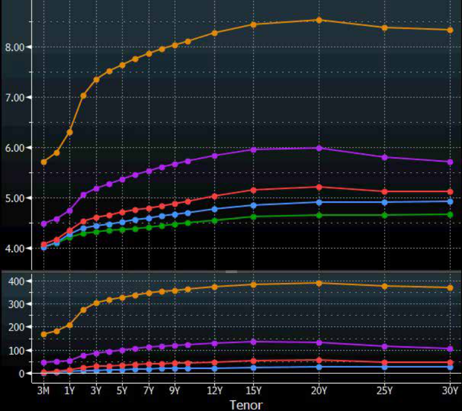
Nguồn: Bloomberg tính đến ngày 23 tháng 9 năm 2022.
Chú thích hình ảnh: Biểu đồ đường cong lợi suất (Yield (%) vs. Maturity) tính đến ngày 23/09/2022 của Trái phiếu Kho bạc Mỹ (US Treasury) và các nhóm xếp hạng tín nhiệm doanh nghiệp từ
AAA/AA,A,BBB(nhóm IG) đếnBB,B(nhóm HY) qua các kỳ hạn từ 1 năm đến 30 năm. Đường lợi suất dịch chuyển lên trên rõ rệt khi xếp hạng tín nhiệm giảm dần, đặc biệt khoảng cách chênh lệch lợi suất nhảy vọt khi chuyển từ nhóm IG (BBB) sang nhóm HY (BBvàB).
Source: Bloomberg as of 23 September 2022.
Exhibit 8 shows three important relationships. First, the higher the credit rating, the lower the yield for a given maturity. Investors require less compensation for the risk of higher rated bonds with lower default risk. Second, in general, the longer the maturity, the higher the yield, as default risk tends to rise for longer maturities. Third, the yield spread difference between IG bond ratings is generally narrower than the difference between IG and HY.
Bảng minh họa 8 cho thấy ba mối quan hệ quan trọng. Thứ nhất, xếp hạng tín nhiệm càng cao thì lợi suất càng thấp đối với một kỳ hạn nhất định. Nhà đầu tư yêu cầu mức đền bù thấp hơn cho rủi ro của các trái phiếu được xếp hạng cao hơn vốn có rủi ro vỡ nợ thấp hơn. Thứ hai, nhìn chung, kỳ hạn càng dài thì lợi suất càng cao, vì rủi ro vỡ nợ có xu hướng tăng lên đối với các kỳ hạn dài hơn. Thứ ba, chênh lệch phần bù lợi suất giữa các mức xếp hạng trái phiếu IG nhìn chung hẹp hơn so với sự khác biệt giữa nhóm IG và nhóm HY.
Over the cycle, HY bond spreads are more susceptible to widening under adverse market conditions when investors tend to sell riskier assets and buy default risk-free assets, known as a “flight to quality.” In addition, HY bonds may face liquidity risk, which also widens bid–offer spreads in times of financial stress. The benefits and considerations of adding HY bonds to a portfolio are addressed in Example 4.
Qua chu kỳ kinh tế, phần bù trái phiếu HY dễ bị nới rộng hơn trong các điều kiện thị trường bất lợi khi các nhà đầu tư có xu hướng bán các tài sản rủi ro hơn và mua các tài sản phi rủi ro vỡ nợ, hiện tượng được gọi là “chạy tìm nơi trú ẩn an toàn” (“flight to quality”). Ngoài ra, trái phiếu HY có thể phải đối mặt với rủi ro thanh khoản (liquidity risk), yếu tố cũng làm nới rộng chênh lệch giá chào mua – chào bán (bid–offer spreads) trong những thời điểm căng thẳng tài chính. Những lợi ích và lưu ý khi bổ sung trái phiếu HY vào danh mục đầu tư được đề cập trong Ví dụ 4.
EXAMPLE 4
VÍ DỤ 4
Benefits and Considerations of High-Yield Bond Investments
Lợi ích và Lưu ý khi Đầu tư Trái phiếu Lợi suất cao (High-Yield Bond)
A pension fund manager made the economic forecasts for the following year:
Một nhà quản lý quỹ hưu trí đã đưa ra các dự báo kinh tế cho năm tới như sau:
| Last Year | This Year | |
|---|---|---|
| (Actual) | (Forecast) | |
| Economic growth | 2.5% | 3.2% |
| Long-term interest rate | 1.5% | 2.0% |
| Chỉ tiêu | Năm ngoái (Thực tế) | Năm nay (Dự báo) |
|---|---|---|
| Tăng trưởng kinh tế (Economic growth) | 2.5% | 3.2% |
| Lãi suất dài hạn (Long-term interest rate) | 1.5% | 2.0% |
| Last Year (Actual) |
This Year (Forecast) |
|
|---|---|---|
| High-yield default rate | 3.3% | 2.1% |
| (Historical low) | ||
| Financial market volatility | 16.5% | 20.0% |
| Chỉ tiêu | Năm ngoái (Thực tế) | Năm nay (Dự báo) |
|---|---|---|
| Tỷ lệ vỡ nợ trái phiếu lợi suất cao (High-yield default rate) | 3.3% | 2.1% (Mức thấp lịch sử) |
| Độ biến động thị trường tài chính (Financial market volatility) | 16.5% | 20.0% |
Despite improving economic and market conditions, financial market volatility is expected to increase.
Mặc dù các điều kiện kinh tế và thị trường đang cải thiện, độ biến động của thị trường tài chính dự kiến sẽ gia tăng.
- Describe the benefits and considerations of adding high-yield bonds to the investment portfolio under this scenario.
- Hãy mô tả những lợi ích và lưu ý của việc bổ sung trái phiếu lợi suất cao vào danh mục đầu tư theo kịch bản này.
Solution:
Lời giải:
Benefits: Investing in high-yield bonds should improve the risk-adjusted return of the overall portfolio in an expected environment of:
Lợi ích (Benefits): Đầu tư vào trái phiếu lợi suất cao sẽ cải thiện tỷ suất sinh lợi điều chỉnh theo rủi ro của tổng thể danh mục đầu tư trong một môi trường kỳ vọng có:
-
accelerating economic growth,
-
rising interest rates, and
-
falling HY default risk to a historical low.
-
tăng trưởng kinh tế tăng tốc,
-
lãi suất tăng, và
-
rủi ro vỡ nợ của trái phiếu HY giảm xuống mức thấp lịch sử.
Considerations: The additional market risk arising from higher expected market volatility may temper the diversification benefit. In times of heightened volatility, HY bonds may also be exposed to market liquidity risk when cash is needed from the portfolio (for example, to meet regular pension payments).
Lưu ý (Considerations): Rủi ro thị trường gia tăng phát sinh từ độ biến động thị trường kỳ vọng cao hơn có thể làm giảm bớt lợi ích đa dạng hóa. Trong những thời điểm biến động dâng cao, trái phiếu HY cũng có thể phải đối mặt với rủi ro thanh khoản thị trường (market liquidity risk) khi danh mục đầu tư cần tiền mặt (ví dụ: để đáp ứng các khoản chi trả lương hưu định kỳ).
Exhibit 9 presents a stylized view of these credit spread curve level and shape changes for investment-grade (IG) and high-yield (HY) issuers over the economic cycle moving clockwise across the four scenarios shown. The spread change in spread for IG bonds is narrower than that for HY bonds. HY bonds are more sensitive to changing macroeconomic and credit conditions.
Bảng minh họa 9 trình bày một góc nhìn khái quát về những thay đổi của mức độ và hình dạng đường cong phần bù tín dụng (credit spread curve) đối với các tổ chức phát hành hạng đầu tư (IG) và lợi suất cao (HY) qua chu kỳ kinh tế theo chiều kim đồng hồ đi qua bốn kịch bản được hiển thị. Mức thay đổi phần bù đối với trái phiếu IG hẹp hơn so với trái phiếu HY. Trái phiếu HY nhạy cảm hơn với các điều kiện kinh tế vĩ mô và tín dụng đang thay đổi.
Exhibit 9: Credit Spread Curves over the Economic Cycle
Bảng minh họa 9: Đường cong Phần bù Tín dụng qua Chu kỳ Kinh tế (Credit Spread Curves over the Economic Cycle)
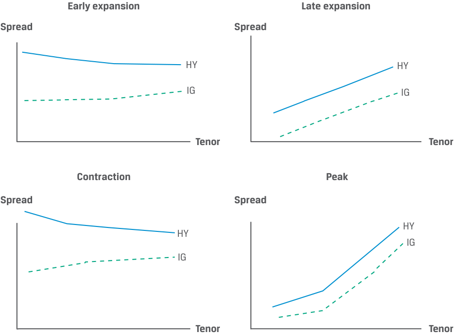
Chú thích hình ảnh: Đường cong Phần bù Tín dụng (Spread vs. Tenor) qua 4 giai đoạn của Chu kỳ Kinh tế (theo chiều kim đồng hồ): 1. Đầu giai đoạn mở rộng (Early expansion): Phần bù (
Spread) bắt đầu giảm xuống từ mức cao cho cảHYvàIG. 2. Cuối giai đoạn mở rộng (Late expansion): Phần bù tiếp tục thu hẹp mạnh, đặc biệt là đường congHYhạ thấp xuống. 3. Đỉnh chu kỳ (Peak): Phần bù ở mức thấp nhất/hẹp nhất và đường cong dốc lên nhẹ theo kỳ hạn (Tenor). 4. Suy giảm/Thu hẹp (Contraction): Phần bù tăng vọt đối với cảIGvàHY, trong đó đường congHYdịch chuyển lên rất cao và có thể dốc xuống (đảo ngược) ở các kỳ hạn ngắn do rủi ro vỡ nợ cận kề.
There may be other systematic reasons why spreads change. Corporate bonds trade primarily over the counter using broker–dealers who must commit their own capital for market-making purposes. Tighter financial regulations increase the cost of holding capital for trading in credit-risky bonds, particularly for large global banks that are the most dominant market participants. Funding stresses also naturally translate into wider credit spreads. The availability of funding is related to overall macroeconomic and credit cycle conditions but may also be driven by market sentiment, such as the willingness to take on risk. Additionally, in periods of heavy new issue supply, credit spreads will widen if there is insufficient demand. In periods of high demand for bonds, spreads will move tighter.
Có thể có những lý do mang tính hệ thống khác giải thích tại sao phần bù thay đổi. Trái phiếu doanh nghiệp giao dịch chủ yếu trên thị trường phi tập trung (OTC) thông qua các nhà môi giới – tự doanh (broker–dealers), những người phải cam kết vốn tự có của mình cho mục đích tạo lập thị trường (market-making). Các quy định tài chính chặt chẽ hơn làm tăng chi phí nắm giữ vốn để giao dịch các trái phiếu có rủi ro tín dụng, đặc biệt đối với các ngân hàng toàn cầu lớn vốn là những người tham gia thị trường chiếm ưu thế nhất. Những căng thẳng về nguồn vốn tài trợ (funding stresses) cũng tự nhiên chuyển hóa thành phần bù tín dụng rộng hơn. Sự sẵn có của nguồn vốn tài trợ có liên quan đến các điều kiện kinh tế vĩ mô và chu kỳ tín dụng tổng thể nhưng cũng có thể được thúc đẩy bởi tâm lý thị trường (market sentiment), chẳng hạn như sự sẵn lòng chấp nhận rủi ro. Ngoài ra, trong những giai đoạn nguồn cung phát hành mới dồi dào, phần bù tín dụng sẽ nới rộng nếu không có đủ lực cầu. Trong những giai đoạn nhu cầu đối với trái phiếu ở mức cao, phần bù sẽ thu hẹp lại (move tighter).
Market Factors
Các Yếu tố Thị trường (Market Factors)
For the most liquid bonds with the lowest default risk, such as developed market sovereign debt, the yield for a given maturity is a combination of real interest rates plus an expected inflation rate premium. The yield spread on corporate bonds includes an additional risk premium that compensates investors for credit and liquidity risks as well as the potential tax impact of investing in a specific bond. Changes in any of these components will alter the yield, price, and return on the bond. The total yield spread over the government benchmark bond captures these risk components.
Đối với các trái phiếu có tính thanh khoản cao nhất với rủi ro vỡ nợ thấp nhất, chẳng hạn như nợ chính phủ tại các thị trường phát triển, lợi suất cho một kỳ hạn nhất định là sự kết hợp của lãi suất thực cộng với phần bù tỷ lệ lạm phát kỳ vọng. Phần bù lợi suất trên trái phiếu doanh nghiệp bao gồm một phần bù rủi ro bổ sung nhằm đền bù cho nhà đầu tư đối với rủi ro tín dụng và rủi ro thanh khoản cũng như tác động thuế tiềm tàng của việc đầu tư vào một trái phiếu cụ thể. Những thay đổi trong bất kỳ cấu phần nào trong số này sẽ làm thay đổi lợi suất, giá và tỷ suất sinh lợi của trái phiếu. Tổng phần bù lợi suất so với trái phiếu chính phủ chuẩn (government benchmark bond) nắm bắt các cấu phần rủi ro này.
Market liquidity risk refers to the transaction costs associated with selling a bond. This is the risk that the price at which investors can actually transact may differ from the price indicated in the market through bid–ask spreads. The ability and willingness of broker–dealers to make markets, as reflected in the bid–ask spread, is an important determinant of market liquidity and associated risks to transact in the market.
Rủi ro thanh khoản thị trường (market liquidity risk) đề cập đến các chi phí giao dịch liên quan đến việc bán một trái phiếu. Đây là rủi ro mà mức giá các nhà đầu tư thực sự có thể giao dịch có thể khác với mức giá được chỉ báo trên thị trường thông qua chênh lệch giá chào mua – chào bán (bid–ask spreads). Khả năng và sự sẵn lòng tạo lập thị trường của các nhà môi giới – tự doanh, như được phản ánh qua chênh lệch giá chào mua – chào bán, là một yếu tố quyết định quan trọng đối với thanh khoản thị trường và các rủi ro liên quan khi giao dịch trên thị trường.
Two main issuer-specific factors affect market liquidity risk. First, issuer size, or more specifically the aggregate value of publicly traded debt an issuer has outstanding, is an important liquidity factor. Second, the issuer’s credit quality is critical. In general, the less debt an issuer has outstanding and the less frequently its debt trades, the
Hai yếu tố chính đặc thù của tổ chức phát hành có ảnh hưởng đến rủi ro thanh khoản thị trường. Thứ nhất, quy mô của tổ chức phát hành (issuer size), hay cụ thể hơn là tổng giá trị khoản nợ được giao dịch công khai mà tổ chức phát hành đang lưu hành, là một yếu tố thanh khoản quan trọng. Thứ hai, chất lượng tín dụng của tổ chức phát hành (issuer’s credit quality) đóng vai trò then chốt. Nhìn chung, tổ chức phát hành càng có ít nợ đang lưu hành và khoản nợ của họ giao dịch càng ít thường xuyên thì
higher the market liquidity risk and the bid–ask spread. The lower the credit quality of an issuer, the higher the market liquidity risk. To compensate investors for the risk that there may not be sufficient market liquidity for them to buy or sell bonds in the quantity they desire, the spread or yield premium on corporate bonds includes both a market liquidity and a credit risk component.
rủi ro thanh khoản thị trường và chênh lệch giá chào mua – chào bán càng cao. Chất lượng tín dụng của tổ chức phát hành càng thấp thì rủi ro thanh khoản thị trường càng cao. Để đền bù cho các nhà đầu tư đối với rủi ro có thể không có đủ thanh khoản thị trường để họ mua hoặc bán trái phiếu với số lượng mong muốn, phần bù hay phần bù lợi suất trên trái phiếu doanh nghiệp bao gồm cả cấu phần thanh khoản thị trường và cấu phần rủi ro tín dụng.
Typically, a bond that trades more frequently and with higher volume provides investors more opportunity to purchase or sell the security and thus has less liquidity risk. The difference between the bid (or purchase) and the offer (or sale) price depends on the type of bond, the size of the transaction, and the time of execution, among other factors. For instance, the most liquid government bonds often trade at a fraction of a basis point between the purchase and sale prices, while less liquid corporate bonds can have a much wider difference between the bid and offer prices.
Thông thường, một trái phiếu giao dịch thường xuyên hơn và với khối lượng cao hơn sẽ mang lại cho các nhà đầu tư nhiều cơ hội để mua hoặc bán chứng khoán đó hơn và do vậy có ít rủi ro thanh khoản hơn. Sự khác biệt giữa giá chào mua (bid – giá khách bán/nhà tạo lập mua) và giá chào bán (offer – giá khách mua/nhà tạo lập bán) phụ thuộc vào loại trái phiếu, quy mô giao dịch và thời điểm thực hiện, cùng với các yếu tố khác. Chẳng hạn, các trái phiếu chính phủ có tính thanh khoản cao nhất thường giao dịch với chênh lệch chỉ bằng một phần nhỏ của điểm cơ bản giữa giá mua và giá bán, trong khi các trái phiếu doanh nghiệp kém thanh khoản hơn có thể có mức chênh lệch lớn hơn nhiều giữa giá chào mua và giá chào bán.
During times of financial stress or crisis, market liquidity can decline sharply, causing bond prices to fall and yield spreads on corporate and other spread-based debt to widen significantly. In most crises, not only does credit deterioration result in wider bid–ask spreads, but it also may cause spillover effects from one fixed-income market segment to others. For example, risk aversion among HY bond investors may lead to significant spread widening among lower rated IG bonds as well.
Trong những thời điểm căng thẳng hoặc khủng hoảng tài chính, thanh khoản thị trường có thể sụt giảm mạnh, khiến giá trái phiếu giảm và phần bù lợi suất trên trái phiếu doanh nghiệp cùng các khoản nợ dựa trên phần bù khác nới rộng đáng kể. Trong hầu hết các cuộc khủng hoảng, sự suy giảm tín dụng không chỉ dẫn đến chênh lệch giá chào mua – chào bán rộng hơn mà còn có thể gây ra hiệu ứng lan tỏa (spillover effects) từ phân khúc thị trường thu nhập cố định này sang các phân khúc khác. Ví dụ, tâm lý ngại rủi ro trong giới đầu tư trái phiếu HY cũng có thể dẫn đến sự nới rộng phần bù đáng kể ở các trái phiếu IG được xếp hạng thấp hơn.
Issuer-Specific Factors
Các Yếu tố Đặc thù của Tổ chức Phát hành (Issuer-Specific Factors)
Beyond macroeconomic and market factors, the expected financial performance of individual issuers has a significant effect on both the level and volatility of yields and yield spreads.
Ngoài các yếu tố kinh tế vĩ mô và thị trường, kết quả hoạt động tài chính kỳ vọng của từng tổ chức phát hành riêng lẻ có tác động đáng kể đến cả mức độ và độ biến động của lợi suất cũng như phần bù lợi suất.
In particular, factors common to all issuers include debt coverage and leverage. Debt coverage refers to the sufficiency of a borrower’s resources or cash flows to make necessary interest and principal payments, while leverage measures a borrower’s relative reliance on debt versus other sources of financing. The source of repayment and use of proceeds differ among issuer types. Corporate issuers typically invest in long-term assets and repay debt from operating cash flow, while sovereign borrowers conduct fiscal policy and provide public goods while collecting tax revenue as a primary source of repayment. These factors are evaluated in detail for sovereign and non-sovereign government as well as corporate issuers in later lessons.
Cụ thể, các yếu tố chung đối với tất cả các tổ chức phát hành bao gồm khả năng trang trải nợ (debt coverage) và đòn bẩy (leverage). Khả năng trang trải nợ đề cập đến sự đầy đủ về nguồn lực hoặc dòng tiền của bên đi vay để thực hiện các khoản thanh toán tiền lãi và nợ gốc cần thiết, trong khi đòn bẩy đo lường mức độ phụ thuộc tương đối của bên đi vay vào nợ vay so với các nguồn tài trợ khác. Nguồn trả nợ và mục đích sử dụng vốn thu được khác nhau giữa các loại hình tổ chức phát hành. Các tổ chức phát hành doanh nghiệp thường đầu tư vào tài sản dài hạn và trả nợ từ dòng tiền hoạt động, trong khi các bên đi vay là chính phủ có chủ quyền thực hiện chính sách tài khóa và cung cấp hàng hóa công cộng đồng thời thu thuế làm nguồn trả nợ chính. Những yếu tố này sẽ được đánh giá chi tiết đối với các tổ chức phát hành chính phủ có chủ quyền và phi chủ quyền cũng như doanh nghiệp trong các bài học sau.
Investors often evaluate the yield and yield spread of a specific issuer’s bond using a comparison to bonds within the same credit rating category, within the same sector due to similar performance drivers, or to companies with a similar business model or other common features. Example 5 illustrates the use of such a comparison to allow an investor to distinguish between macroeconomic and issuer-specific factors.
Các nhà đầu tư thường đánh giá lợi suất và phần bù lợi suất của trái phiếu do một tổ chức phát hành cụ thể phát hành bằng cách sử dụng phép so sánh với các trái phiếu trong cùng bậc xếp hạng tín nhiệm, trong cùng lĩnh vực kinh doanh do có các động lực hoạt động tương tự nhau, hoặc với các công ty có mô hình kinh doanh tương tự hay các đặc điểm chung khác. Ví dụ 5 minh họa việc sử dụng phép so sánh như vậy để cho phép nhà đầu tư phân biệt giữa các yếu tố kinh tế vĩ mô và các yếu tố đặc thù của tổ chức phát hành.
EXAMPLE 5
VÍ DỤ 5
WeWork Yields versus B-Rated Corporates
Lợi suất Trái phiếu WeWork so với Trái phiếu Doanh nghiệp Xếp hạng B
WeWork is a US-based real estate company that leases commercial properties to provide co-working spaces for firms and individuals. The company enjoyed a meteoric rise during its first several years of existence as a rapidly expanding office space lessee financed by private equity capital. Despite its asset light business model and negative cash flow, WeWork issued debt in April 2018, a privately placed USD700 million seven-year senior unsecured bond with a fixed coupon of 7.875% priced at par and rated Caa1 by Moody’s, B+ by S&P, and BB– by Fitch. The following diagram shows the relationship between the average five-year yield of corporate bonds with high credit risk with a similar maturity and WeWork’s bond yield following the issuance.
WeWork là một công ty bất động sản có trụ sở tại Hoa Kỳ chuyên thuê các bất động sản thương mại để cung cấp không gian làm việc chung (co-working spaces) cho các doanh nghiệp và cá nhân. Công ty đã có sự trỗi dậy thần tốc trong vài năm đầu tồn tại với tư cách là bên đi thuê không gian văn phòng mở rộng nhanh chóng được tài trợ bởi nguồn vốn cổ phần tư nhân (private equity capital). Bất chấp mô hình kinh doanh ít tài sản (asset-light) và dòng tiền âm, WeWork đã phát hành nợ vào tháng 4 năm 2018, một đợt phát hành riêng lẻ (privately placed) trái phiếu cấp cao không có bảo đảm kỳ hạn 7 năm trị giá 700 triệu USD với lãi suất coupon cố định 7.875% được định giá ngang mệnh giá và được Moody’s xếp hạng Caa1, S&P xếp hạng B+, và Fitch xếp hạng BB–. Biểu đồ dưới đây cho thấy mối quan hệ giữa lợi suất kỳ hạn 5 năm trung bình của các trái phiếu doanh nghiệp có rủi ro tín dụng cao với kỳ hạn tương tự và lợi suất trái phiếu của WeWork sau đợt phát hành.
WeWork 7.875% 2025 Bond Yield versus Five-Year B Corporate Yield
Lợi suất Trái phiếu WeWork 7.875% Đáo hạn 2025 so với Lợi suất Trái phiếu Doanh nghiệp Hạng B Kỳ hạn 5 năm
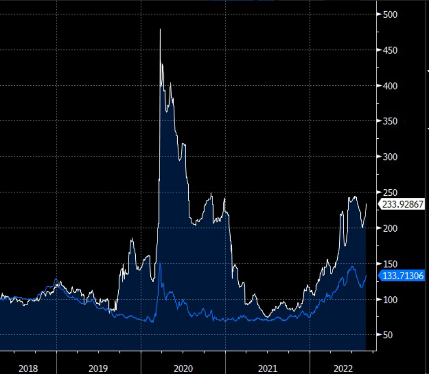
Nguồn: Bloomberg, Lợi suất được chuẩn hóa với Tháng 4 năm 2018 = 100.
Chú thích hình ảnh: Biểu đồ so sánh lợi suất chuẩn hóa (Normalized Yield, Tháng 4/2018 = 100) của trái phiếu WeWork 7.875% 2025 và lợi suất trung bình trái phiếu doanh nghiệp hạng B kỳ hạn 5 năm từ tháng 4/2018 đến tháng 2/2022, đánh dấu 3 sự kiện chính: 1. Thương vụ IPO thất bại của WeWork (09/2019): Lợi suất trái phiếu WeWork tăng gần gấp đôi. 2. Đại dịch COVID-19 (03/2020): Lợi suất trái phiếu WeWork tăng vọt lên gần 500 (gấp 5 lần mức tháng 4/2018). 3. Sự phục hồi và IPO của WeWork (10/2021): Lợi suất trái phiếu WeWork giảm mạnh về gần mức của trái phiếu doanh nghiệp hạng B.
Source: Bloomberg, Normalized Yields with April 2018 = 100.
Chúng ta thấy rằng lợi suất trái phiếu doanh nghiệp xếp hạng B dao động trong khoảng từ 75% đến 150% mức tháng 4 năm 2018 của chúng trong suốt giai đoạn này, nhưng lợi suất trái phiếu của WeWork lại thể hiện độ biến động lớn hơn rất nhiều, đạt mức lợi suất gần gấp năm lần mức tháng 4 năm 2018 vào đầu năm 2020. Mặc dù việc phân tích chi tiết nằm ngoài phạm vi của ví dụ này, ba sự kiện đáng chú ý đặc thù của tổ chức phát hành có thể được sử dụng để giải thích mối quan hệ lợi suất tương đối trong giai đoạn trên:
We see that B-rated corporate bond yields fluctuated between 75% and 150% of their April 2018 levels over the period, but WeWork’s bond yield exhibited far greater volatility, reaching a yield nearly five times that of April 2018 in early 2020. While a detailed analysis is beyond the scope of this example, three noteworthy issuer-specific events may be used to explain the relative yield relationship over the period:
Thương vụ IPO thất bại của WeWork (Tháng 9 năm 2019): Sự thất bại của đợt phát hành cổ phiếu lần đầu ra công chúng (IPO) được mong đợi rộng rãi của WeWork xuất phát từ quản trị yếu kém cùng kỳ vọng tăng trưởng và thu nhập bị thổi phồng, vốn đã dẫn đến mức định giá công ty lên tới 50 tỷ USD. Vì sự thất bại này làm tăng mức độ phụ thuộc tương đối của WeWork vào khoản nợ hiện hữu so với nguồn vốn cổ phần mới dự kiến, lợi suất trái phiếu của công ty đã tăng gần gấp đôi, trong khi lợi suất trung bình của trái phiếu doanh nghiệp xếp hạng B lại giảm xuống trong bối cảnh kinh tế vĩ mô thuận lợi xuyên suốt năm 2019.
WeWork’s Failed IPO (September 2019): The failure of WeWork’s widely anticipated IPO was caused by weak governance and inflated growth and earnings expectations, which resulted in a company valuation of USD50 billion. As the failure increased WeWork’s relative reliance on existing debt versus anticipated new equity, its bond yield nearly doubled, while average B-rated corporate bond yields fell in a favorable macroeconomic environment through 2019.
COVID-19 Pandemic (March 2020): Economic shutdowns and work-fromhome policies had a disproportionately negative effect on WeWork’s co-working business model and expected cash flows as compared to other HY issuers. The company’s bonds traded at distressed prices as low as 35% of par value and were downgraded to CCC+ (negative outlook) by S&P, the only credit rating agency that had retained a B rating for WeWork to date.
Đại dịch COVID-19 (Tháng 3 năm 2020): Việc đóng cửa nền kinh tế và các chính sách làm việc tại nhà (work-from-home) đã gây ra tác động tiêu cực nặng nề không tương xứng lên mô hình kinh doanh không gian làm việc chung và dòng tiền kỳ vọng của WeWork so với các tổ chức phát hành HY khác. Trái phiếu của công ty đã giao dịch ở mức giá kiệt quệ tài chính (distressed prices) thấp tới 35% mệnh giá và bị hạ bậc tín nhiệm xuống CCC+ (triển vọng tiêu cực) bởi S&P, tổ chức xếp hạng tín nhiệm duy nhất còn duy trì mức xếp hạng B cho WeWork tính đến thời điểm đó.
Recovery and WeWork’s IPO (October 2021): The decline in WeWork’s bond yields was disproportionately large in 2021 as compared to B-rated corporate yields as the economy reopened and employees returned to work. This improved outlook allowed the company to revisit its plans to issue equity at a more realistic valuation. News of a possible second IPO attempt in mid-2021 caused WeWork bond yields to decline. Its bonds traded at a premium when the IPO was completed via a combination with special purpose acquisition company
Sự phục hồi và Thương vụ IPO của WeWork (Tháng 10 năm 2021): Mức sụt giảm lợi suất trái phiếu của WeWork là lớn một cách không tương xứng vào năm 2021 so với lợi suất doanh nghiệp xếp hạng B khi nền kinh tế mở cửa trở lại và người lao động quay lại văn phòng làm việc. Triển vọng được cải thiện này đã cho phép công ty xem xét lại kế hoạch phát hành cổ phần ở mức định giá thực tế hơn. Tin tức về nỗ lực IPO lần thứ hai có thể diễn ra vào giữa năm 2021 đã khiến lợi suất trái phiếu WeWork giảm xuống. Trái phiếu của công ty đã giao dịch ở mức giá cao hơn mệnh giá (at a premium) khi thương vụ IPO được hoàn tất thông qua việc sáp nhập với công ty mua lại có mục đích đặc biệt
(SPAC) BowX, which valued WeWork at USD9 billion and raised USD1.3 billion in cash. WeWork’s reduced reliance on debt and improved cash flow caused its bond yields to trade close to those of B-rated bonds, despite its lower rating.
(SPAC) BowX, qua đó định giá WeWork ở mức 9 tỷ USD và huy động được 1.3 tỷ USD tiền mặt. Sự phụ thuộc giảm bớt vào nợ vay và dòng tiền được cải thiện của WeWork đã khiến lợi suất trái phiếu của công ty giao dịch gần với mức lợi suất của các trái phiếu xếp hạng B, bất chấp mức xếp hạng thấp hơn của nó.
This simplified WeWork example ignores duration differences and compares bonds across sectors within a ratings category rather than within the commercial real estate sector or among comparable asset light, negative cash companies, such as Uber. Later fixed-income lessons will introduce greater detail in comparing issuer-specific, macroeconomic, and market factors.
Ví dụ giản lược về WeWork này bỏ qua sự khác biệt về thời lượng (duration) và so sánh các trái phiếu giữa các ngành khác nhau trong cùng một hạng mục xếp hạng thay vì trong nội bộ ngành bất động sản thương mại hoặc giữa các công ty ít tài sản, có dòng tiền âm tương đồng như Uber. Các bài học thu nhập cố định sau này sẽ giới thiệu chi tiết hơn về việc so sánh các yếu tố đặc thù của tổ chức phát hành, kinh tế vĩ mô và thị trường.
The Price Impact of Spread Changes
Tác động Giá của những Thay đổi Phần bù (The Price Impact of Spread Changes)
In an earlier module, we explained how bond duration and convexity are used to approximate a bond’s price change given a change in yield-to-maturity. We now address the source of the yield-to-maturity change. Since the yield-to-maturity on a corporate bond consists of a government benchmark yield and a spread , a change in the bond’s yield-to-maturity can originate in either component or a combination of the two. The key point is that for an option-free fixed-rate bond, the same duration and convexity statistics that apply for a change in benchmark yield also apply for a change in spread.
Trong một học phần trước, chúng ta đã giải thích cách thức thời lượng (duration) và độ lồi (convexity) của trái phiếu được sử dụng để xấp xỉ mức thay đổi giá của trái phiếu khi có sự thay đổi trong lợi suất đáo hạn (yield-to-maturity). Bây giờ chúng ta sẽ đề cập đến nguồn gốc của sự thay đổi lợi suất đáo hạn. Vì lợi suất đáo hạn trên một trái phiếu doanh nghiệp bao gồm lợi suất chuẩn (benchmark) của chính phủ và một phần bù (spread), sự thay đổi trong lợi suất đáo hạn của trái phiếu có thể bắt nguồn từ một trong hai cấu phần hoặc sự kết hợp của cả hai. Điểm mấu chốt là đối với một trái phiếu lãi suất cố định không kèm quyền chọn (option-free fixed-rate bond), cùng các thống kê thời lượng và độ lồi áp dụng cho sự thay đổi lợi suất chuẩn cũng được áp dụng cho sự thay đổi phần bù.
Importantly, the modified duration and convexity measures give an approximate change in the full price of a bond for a change in yield-to-maturity, regardless of the source of the change. However, changes in the yield-to-maturity components do not occur in isolation. In practice, the analyst is concerned with the interaction between benchmark yield and spread changes, between changes in expected inflation and the expected real rate, and between changes in credit and liquidity risk. For example, a “flight to quality” described earlier can cause government benchmark yields to fall as credit spreads widen and liquidity declines for bonds of low credit-quality issuers.
Điều quan trọng là các thước đo thời lượng điều chỉnh (modified duration) và độ lồi (convexity) đưa ra mức thay đổi xấp xỉ trong giá đầy đủ (full price) của một trái phiếu đối với một sự thay đổi trong lợi suất đáo hạn, bất kể nguồn gốc của sự thay đổi đó là gì. Tuy nhiên, những thay đổi trong các cấu phần của lợi suất đáo hạn không diễn ra một cách biệt lập. Trên thực tế, nhà phân tích quan tâm đến sự tương tác giữa những thay đổi của lợi suất chuẩn và phần bù, giữa những thay đổi của lạm phát kỳ vọng và lãi suất thực kỳ vọng, cũng như giữa những thay đổi của rủi ro tín dụng và rủi ro thanh khoản. Ví dụ, hiện tượng “chạy tìm nơi trú ẩn an toàn” (“flight to quality”) được mô tả trước đó có thể khiến lợi suất chuẩn của chính phủ giảm xuống khi phần bù tín dụng nới rộng và thanh khoản sụt giảm đối với trái phiếu của các tổ chức phát hành có chất lượng tín dụng thấp.
Example 6 shows the risk/return components of a bond via a hypothetical spread decomposition.
Ví dụ 6 cho thấy các cấu phần rủi ro/tỷ suất sinh lợi của một trái phiếu thông qua việc phân rã phần bù giả định (spread decomposition).
EXAMPLE 6
VÍ DỤ 6
Decomposition of a Romanian Eurobond Yield
Phân rã Lợi suất Trái phiếu Châu Âu (Eurobond) của Romania
In 2019, the Government of Romania issued its first-ever 4.625% 30-year Eurobond, which was priced at a spread of 411.4 bps over the 1.25% Federal Republic of Germany bond maturing 15 August 2048. The initial yield spread indicated the combined credit and liquidity risk of the bond. The 4.625% Romania bond subsequently traded in a wide price range, reflecting the prevailing market assessment of its credit risk and yield spread as well as the benchmark German yield, as shown in the chart below:
Vào năm 2019, Chính phủ Romania đã phát hành trái phiếu Eurobond kỳ hạn 30 năm lãi suất 4.625% đầu tiên trong lịch sử của mình, được định giá ở mức phần bù 411.4 bps cao hơn trái phiếu Cộng hòa Liên bang Đức lãi suất 1.25% đáo hạn ngày 15 tháng 8 năm 2048. Phần bù lợi suất ban đầu biểu thị rủi ro tín dụng và rủi ro thanh khoản kết hợp của trái phiếu. Trái phiếu Romania lãi suất 4.625% sau đó đã giao dịch trong một biên độ giá rộng, phản ánh đánh giá hiện hành của thị trường về rủi ro tín dụng và phần bù lợi suất của nó cũng như lợi suất chuẩn của Đức, như thể hiện trong biểu đồ dưới đây:
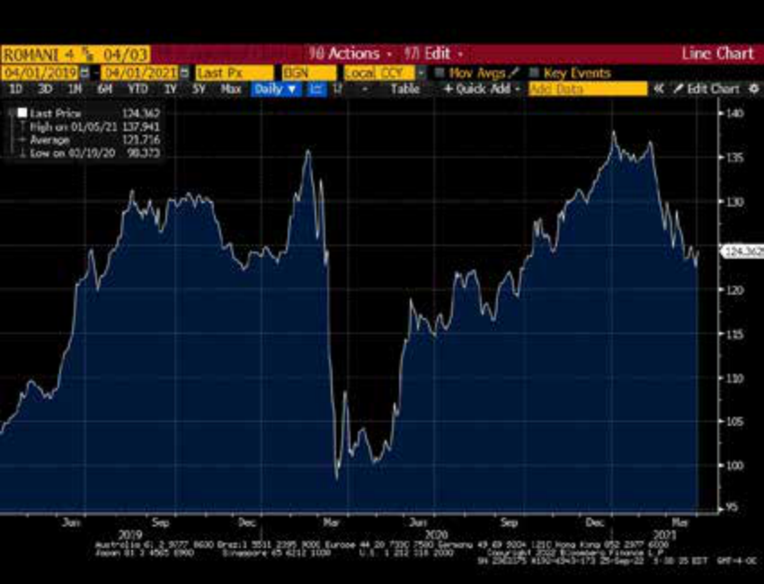
Nguồn: Bloomberg.
Chú thích hình ảnh: Biểu đồ biến động giá Trái phiếu Chính phủ Romania 4.625% đáo hạn năm 2049 (Romanian Gov't 4.625% '49 Bond Price, % of Par) từ năm 2019 đến năm 2022, dao động mạnh trong khoảng từ dưới 80% đến trên 135% mệnh giá.
Source: Bloomberg.
Giả sử hai năm sau khi phát hành, trái phiếu này được giao dịch ở mức 122.25/125.75 (giá chào mua/chào bán – bid/offer). Điều này có nghĩa là người mua sẽ phải trả mức giá chào bán là 125.75 cho trái phiếu và người bán sẽ nhận được mức giá chào mua là 122.25.
Suppose that two years after issuance, the bond was traded at 122.25/125.75 (bid/offer). This meant that a buyer would have to pay the offer price of 125.75 for the bond and a seller would receive the bid price of 122.25.
Bond mid-market price = (122.25 + 125.75)/2 = 124.00.
Giá trung bình thị trường của trái phiếu (Bond mid-market price) $= (122.25 + 125.75)/2 = 124.00$.
With 28 years remaining to maturity, the Romanian bond yield based on its mid-market price is equivalent to 3.2988%:
Với 28 năm còn lại cho đến khi đáo hạn, lợi suất trái phiếu Romania dựa trên giá trung bình thị trường tương đương với 3.2988%:
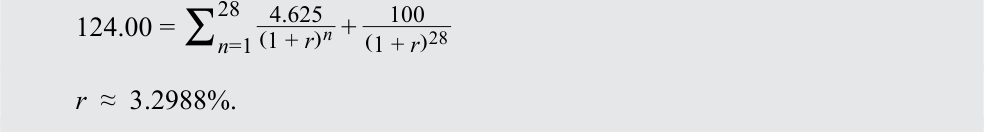
Assume we observe a Federal Republic of Germany benchmark bund yield of 0.2350% on the same day. The current spread of the Romania bond may be shown as:
Giả sử chúng ta quan sát thấy lợi suất trái phiếu chính phủ Đức (bund) chuẩn là 0.2350% vào cùng ngày hôm đó. Phần bù hiện tại của trái phiếu Romania có thể được tính như sau:
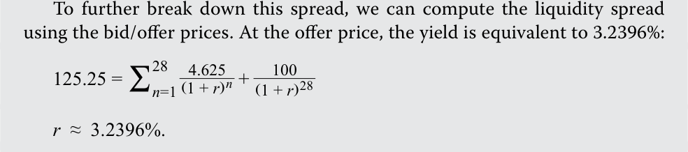
At the bid price, the yield is equivalent to 3.3588%:
Để phân rã sâu hơn phần bù này, chúng ta có thể tính toán phần bù thanh khoản (liquidity spread) bằng cách sử dụng giá chào mua/chào bán. Tại mức giá chào bán (offer price), lợi suất tương đương với 3.2396%:
Tại mức giá chào mua (bid price), lợi suất tương đương với 3.3588%:
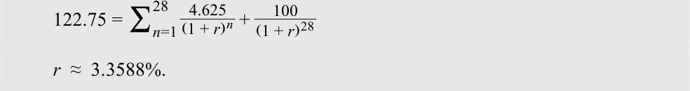
Therefore: Liquidity spread = 3.3588% − 3.2396% = 0.1192% or 11.92 bps. Credit spread = 306.38 bps − 11.92 bps = 294.46 bps. These “building blocks” of the Romania bond yield are summarized below:
Do đó: - Phần bù thanh khoản (Liquidity spread) $= 3.3588\% - 3.2396\% = 0.1192\%$ hay $11.92 \text{ bps}$. - Phần bù tín dụng (Credit spread) $= 306.38 \text{ bps} - 11.92 \text{ bps} = 294.46 \text{ bps}$.
Các “khối cấu thành” (building blocks) này của lợi suất trái phiếu Romania được tóm tắt dưới đây:
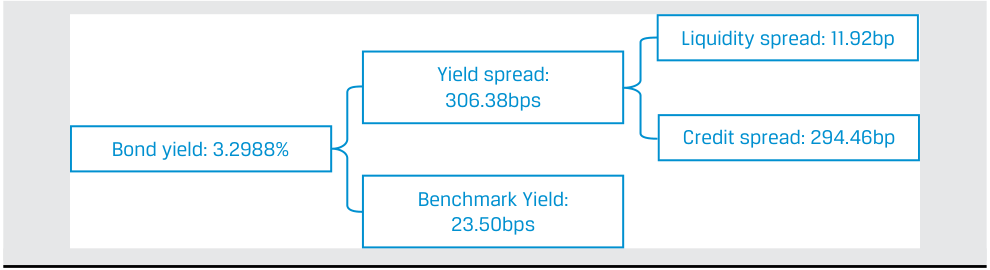
Chú thích hình ảnh: - Lợi suất trái phiếu (Bond yield): $3.2988\%$ bao gồm: - Lợi suất chuẩn (Benchmark Yield): $23.50\text{ bps}$ ($0.2350\%$) - Phần bù lợi suất (Yield spread): $306.38\text{ bps}$ ($3.0638\%$), được chia thành: - Phần bù tín dụng (Credit spread): $294.46\text{ bp}$ - Phần bù thanh khoản (Liquidity spread): $11.92\text{ bp}$
While IG debt investors are less likely to be impacted by default, they are more focused on spread risk —that is, the effect on prices and returns from changes in spreads. The price impact from spread changes is driven by two main factors: (1) the modified duration of the bond and (2) the magnitude of the spread change. The effect on return to the bondholder depends on the holding period used to calculate the return.
Mặc dù các nhà đầu tư nợ IG ít có khả năng chịu tác động bởi vỡ nợ hơn, họ lại tập trung nhiều hơn vào rủi ro phần bù (spread risk) — tức là tác động lên giá và tỷ suất sinh lợi từ những thay đổi trong phần bù. Tác động giá từ những thay đổi phần bù được thúc đẩy bởi hai yếu tố chính: (1) thời lượng điều chỉnh (modified duration) của trái phiếu và (2) độ lớn của mức thay đổi phần bù. Tác động lên tỷ suất sinh lợi đối với trái chủ phụ thuộc vào thời kỳ nắm giữ (holding period) được sử dụng để tính toán tỷ suất sinh lợi.
In the case of a small, instantaneous change in yield spread, the price impact can be approximated, as shown in Equation 3, by
Trong trường hợp có một sự thay đổi nhỏ, tức thời trong phần bù lợi suất, tác động giá có thể được xấp xỉ, như trình bày trong Phương trình 3, bằng:
%∆PVFull = −AnnModDur × ∆Spread,
~~(3)~~
trong đó $\text{AnnModDur}$ là thời lượng điều chỉnh chuẩn hóa theo năm và $\text{PV}^{\text{Full}}$ là giá đầy đủ của trái phiếu. Lưu ý rằng phần bù thấp hơn (cao hơn) có tác động tích cực (tiêu cực) lên giá trái phiếu và do đó lên tỷ suất sinh lợi.
where AnnModDur is the annualized modified duration and PVFull is the bond’s full price. Note that lower (higher) spreads have a positive (negative) impact on bond prices and thus returns.
For larger spread changes, the effect of convexity needs to be incorporated into the approximation, as seen in Equation 4:
Đối với những thay đổi phần bù lớn hơn, tác động của độ lồi (convexity) cần được kết hợp vào phép xấp xỉ, như thấy trong Phương trình 4:
%∆PVFull = −(AnnModDur × ∆Spread) + ½AnnConvexity × (∆Spread)2 , ~~(4)~~
where AnnConvexity is annualized convexity. Care is required to ensure convexity is properly scaled to be consistent with how the spread change is expressed. For option-free bonds, convexity should be scaled so it has the same order of magnitude as duration squared and the spread change is expressed as a decimal. For example, if a bond has duration of 5.0 and reported convexity of 0.235, then first re-scale convexity to 23.5, and then apply the formula. For a 1% increase in spread, the result would be
trong đó $\text{AnnConvexity}$ là độ lồi chuẩn hóa theo năm. Cần cẩn trọng để đảm bảo độ lồi được quy đổi thang đo (scaled) phù hợp nhằm nhất quán với cách biểu thị mức thay đổi phần bù. Đối với trái phiếu không kèm quyền chọn, độ lồi cần được quy đổi thang đo sao cho có cùng bậc độ lớn với bình phương thời lượng và mức thay đổi phần bù được biểu thị dưới dạng số thập phân. Ví dụ, nếu một trái phiếu có thời lượng là 5.0 và độ lồi được báo cáo là 0.235, thì trước hết hãy quy đổi lại thang đo độ lồi thành 23.5, rồi sau đó mới áp dụng công thức. Đối với mức tăng 1% trong phần bù, kết quả sẽ là:
%∆PVFull = (−5.0 × 0.01) + ½ × 23.5 × (0.01)2 = −0.048825 or −4.8825%.
The price impact of instantaneous spread changes is illustrated in Exhibit 10 using the two semiannual coupon BRWA bonds with a price of par highlighted in the preceding lessons:
Tác động giá của những thay đổi phần bù tức thời được minh họa trong Bảng minh họa 10 bằng cách sử dụng hai trái phiếu BRWA trả coupon nửa năm một lần có mức giá ngang mệnh giá đã được nêu bật trong các bài học trước:
Exhibit 10: Price Impact of Instantaneous Spread Changes
Bảng minh họa 10: Tác động Giá của những Thay đổi Phần bù Tức thời (Price Impact of Instantaneous Spread Changes)
| Tenor and | Modified | |||
|---|---|---|---|---|
| Coupon | Settlement | Maturity | Duration | Convexity |
| 5-year, 3.20% | 15 October 2025 | 15 October 2030 | 4.58676 | 24.23895 |
| 10-year, 6.20% | 15 October 2025 | 15 October 2035 | 7.29085 | 68.74440 |
| Kỳ hạn và Lãi suất Coupon (Tenor and Coupon) | Ngày Thanh toán (Settlement) | Ngày Đáo hạn (Maturity) | Thời lượng Điều chỉnh (Modified Duration) | Độ lồi (Convexity) |
|---|---|---|---|---|
| 5 năm, 3.20% | 15/10/2025 | 15/10/2030 | 4.58676 | 24.23895 |
| 10 năm, 6.20% | 15/10/2025 | 15/10/2035 | 7.29085 | 68.74440 |
From the initial spread, in increments of 50 bps and for both wider and narrower spreads, the new price and actual return for each spread change are calculated. Moreover, the estimated returns without and then with the convexity term are presented. As shown, the approximation using only duration is reasonably accurate for small spread changes, but for larger changes, the convexity term generally provides a meaningful improvement, as in Exhibit 11.
Từ mức phần bù ban đầu, theo từng bước nhảy 50 bps cho cả phần bù rộng hơn và hẹp hơn, mức giá mới và tỷ suất sinh lợi thực tế cho từng mức thay đổi phần bù được tính toán. Hơn nữa, tỷ suất sinh lợi ước tính khi không có và sau đó là khi có số hạng độ lồi cũng được trình bày. Như đã thể hiện, phép xấp xỉ chỉ sử dụng thời lượng có độ chính xác hợp lý đối với những thay đổi phần bù nhỏ, nhưng đối với những thay đổi lớn hơn, số hạng độ lồi nhìn chung mang lại sự cải thiện đáng kể, như trong Bảng minh họa 11.
Exhibit 11: Price Impact of Duration & Convexity for Given Spread Change
Bảng minh họa 11: Tác động Giá của Thời lượng & Độ lồi đối với Mức Thay đổi Phần bù Nhất định (Price Impact of Duration & Convexity for Given Spread Change)
| 5-Year BRWA Bond | Scenarios | ||||
|---|---|---|---|---|---|
| Spread (bps) | −100 | −50 | 0 | 50 | 100 |
| Spread over 5-year UST (bps) | 0 | 50 | 100 | 150 | 200 |
| Bond yield | 2.20% | 2.70% | 3.20% | 3.70% | 4.20% |
| Actual bond price | 104.71 | 102.32 | 100.00 | 97.73 | 95.53 |
| Actual return | 4.71% | 2.32% | — | −2.26% | −4.46% |
| Approx. return: duration only | 4.58% | 2.29% | — | −2.29% | −4.59% |
| Approx. return: duration & convexity |
4.70% | 2.32% | — | −2.26% | −4.46% |
| Trái phiếu BRWA 5 Năm (5-Year BRWA Bond) | Các kịch bản (Scenarios) | ||||
|---|---|---|---|---|---|
| Thay đổi phần bù – Spread (bps) | −100 | −50 | 0 | 50 | 100 |
| Phần bù so với UST 5 năm (bps) | 0 | 50 | 100 | 150 | 200 |
| Lợi suất trái phiếu (Bond yield) | 2.20% | 2.70% | 3.20% | 3.70% | 4.20% |
| Giá trái phiếu thực tế (Actual bond price) | 104.71 | 102.32 | 100.00 | 97.73 | 95.53 |
| Tỷ suất sinh lợi thực tế (Actual return) | 4.71% | 2.32% | — | −2.26% | −4.46% |
| Tỷ suất sinh lợi xấp xỉ: chỉ dùng thời lượng (duration only) | 4.58% | 2.29% | — | −2.29% | −4.59% |
| Tỷ suất sinh lợi xấp xỉ: thời lượng & độ lồi (duration & convexity) | 4.70% | 2.32% | — | −2.26% | −4.46% |
| 10-Year BRWA Bond | Scenarios | ||||
|---|---|---|---|---|---|
| Spread (bps) | −100 | −50 | 0 | 50 | 100 |
| Spread over 10-Year UST | |||||
| (bps) | 100 | 150 | 200 | 250 | 300 |
| Bond yield | 5.20% | 5.70% | 6.20% | 6.70% | 7.20% |
| Actual bond price | 107.72 | 103.77 | 100.00 | 96.39 | 92.95 |
| Actual return | 7.72% | 3.77% | — | −3.60% | −7.04% |
| Approx return: duration only | 7.29% | 3.64% | — | −3.64% | −7.29% |
| Approx return: duration & convexity |
7.63% | 3.73% | — | −3.55% | −6.94% |
| Trái phiếu BRWA 10 Năm (10-Year BRWA Bond) | Các kịch bản (Scenarios) | ||||
|---|---|---|---|---|---|
| Thay đổi phần bù – Spread (bps) | −100 | −50 | 0 | 50 | 100 |
| Phần bù so với UST 10 năm (bps) | 100 | 150 | 200 | 250 | 300 |
| Lợi suất trái phiếu (Bond yield) | 5.20% | 5.70% | 6.20% | 6.70% | 7.20% |
| Giá trái phiếu thực tế (Actual bond price) | 107.72 | 103.77 | 100.00 | 96.39 | 92.95 |
| Tỷ suất sinh lợi thực tế (Actual return) | 7.72% | 3.77% | — | −3.60% | −7.04% |
| Tỷ suất sinh lợi xấp xỉ: chỉ dùng thời lượng (duration only) | 7.29% | 3.64% | — | −3.64% | −7.29% |
| Tỷ suất sinh lợi xấp xỉ: thời lượng & độ lồi (duration & convexity) | 7.63% | 3.73% | — | −3.55% | −6.94% |
(Note: Assume 5-year UST: 2.20%, 10-year UST: 4.20% on the bond settlement date.)
(Lưu ý: Giả sử trái phiếu Kho bạc Mỹ – UST 5 năm: 2.20%, UST 10 năm: 4.20% vào ngày thanh toán trái phiếu.)
Note the price change for a given spread change is higher for the longer-duration bond than for the shorter-duration bond. As with yield changes, longer-duration corporate bonds have “higher spread sensitivity,” meaning their prices, and returns, are more volatile with respect to spread changes.
Lưu ý rằng mức thay đổi giá đối với một mức thay đổi phần bù nhất định của trái phiếu có thời lượng dài hơn sẽ cao hơn so với trái phiếu có thời lượng ngắn hơn. Cũng giống như khi lợi suất thay đổi, các trái phiếu doanh nghiệp có thời lượng dài hơn có “độ nhạy phần bù cao hơn” (“higher spread sensitivity”), nghĩa là giá và tỷ suất sinh lợi của chúng biến động mạnh hơn trước những thay đổi của phần bù.
Additionally, investors must be compensated for greater uncertainty about an issuer’s future creditworthiness in longer-dated bonds. An investor might be confident in assessing issuer default risk in the near term; however, investor uncertainty grows over time due to factors that are increasingly difficult to forecast (e.g., poor management strategy or execution, technological obsolescence, natural or man-made disasters, corporate leveraging events).
Ngoài ra, các nhà đầu tư phải được đền bù cho sự không chắc chắn lớn hơn về mức độ tín nhiệm trong tương lai của tổ chức phát hành đối với các trái phiếu có kỳ hạn dài hơn. Một nhà đầu tư có thể tự tin khi đánh giá rủi ro vỡ nợ của tổ chức phát hành trong ngắn hạn; tuy nhiên, sự không chắc chắn của nhà đầu tư tăng lên theo thời gian do các yếu tố ngày càng khó dự báo (ví dụ: chiến lược hoặc việc thực thi yếu kém của ban lãnh đạo, sự lỗi thời về công nghệ, thảm họa tự nhiên hoặc do con người gây ra, các sự kiện gia tăng đòn bẩy của doanh nghiệp).
Example 7 shows the impact on price of a bond due to changes in credit quality or liquidity. Here we apply the methodology from an earlier lesson to approximate modified duration and convexity. We estimated the modified duration by increasing and decreasing the yield-to-maturity by the same amount (ΔYield) to calculate corresponding bond prices PV + and PV__ for a given initial price ( _PV 0), as shown in Equation 5:
Ví dụ 7 cho thấy tác động lên giá của một trái phiếu do những thay đổi về chất lượng tín dụng hoặc tính thanh khoản. Tại đây chúng ta áp dụng phương pháp luận từ một bài học trước để xấp xỉ thời lượng điều chỉnh và độ lồi. Chúng ta đã ước tính thời lượng điều chỉnh bằng cách tăng và giảm lợi suất đáo hạn cùng một lượng ($\Delta\text{Yield}$) để tính toán các mức giá trái phiếu tương ứng $\text{PV}_+$ và $\text{PV}_-$ đối với một mức giá ban đầu cho trước ($\text{PV}_0$), như trình bày trong Phương trình 5:
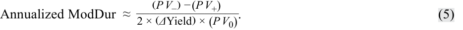
This approximate annualized modified duration (or ApproxModDur) includes the frequency of coupon payments and the periodicity of the yield-to-maturity in the bond price calculations. Recall that approximate annualized convexity (ApproxCon) uses similar inputs and may be calculated as follows.
Thời lượng điều chỉnh chuẩn hóa theo năm xấp xỉ này (hay $\text{ApproxModDur}$) bao gồm tần suất thanh toán coupon và định kỳ (periodicity) của lợi suất đáo hạn trong các phép tính giá trái phiếu. Hãy nhớ lại rằng độ lồi chuẩn hóa theo năm xấp xỉ ($\text{ApproxCon}$) sử dụng các đầu vào tương tự và có thể được tính như sau:
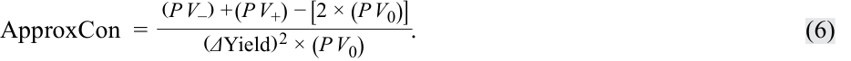
EXAMPLE 7
VÍ DỤ 7
Bond Price Sensitivity to Spread Changes
Độ nhạy Giá Trái phiếu đối với những Thay đổi Phần bù
Show the price impact on the 4.625% 30-year Romania Eurobond versus a new shorter-term Romania bond (details below) if the spread changes due to changes in credit quality and/or liquidity. Show estimated price and return changes (using modified duration and convexity), approximate modified duration and convexity versus actual price changes and returns (using the Excel PRICE function), and discuss the results.
Hãy chỉ ra tác động giá lên trái phiếu Eurobond Romania kỳ hạn 30 năm lãi suất 4.625% so với một trái phiếu Romania kỳ hạn ngắn hơn mới phát hành (chi tiết bên dưới) nếu phần bù thay đổi do những biến động về chất lượng tín dụng và/hoặc tính thanh khoản. Hãy trình bày các mức thay đổi giá và tỷ suất sinh lợi ước tính (sử dụng thời lượng điều chỉnh và độ lồi), thời lượng điều chỉnh và độ lồi xấp xỉ so với mức thay đổi giá và tỷ suất sinh lợi thực tế (sử dụng hàm PRICE trong Excel), và thảo luận kết quả.
On 13 July 2021, Romania issued another EUR2 billion 1.75% Eurobond:
Vào ngày 13 tháng 7 năm 2021, Romania đã phát hành thêm một đợt trái phiếu Eurobond lãi suất 1.75% trị giá 2 tỷ EUR:
-
Coupon: 1.75% (annual)
-
Priced at 99.95% of par
-
Yield: 1.756%
-
Maturity date: 13 July 2030
-
Settlement date: 13 July 2021
-
Benchmark 10-year German bund yield: –0.292%
-
Lãi suất coupon: 1.75% (trả hàng năm)
-
Được định giá ở mức 99.95% mệnh giá
-
Lợi suất: 1.756%
-
Ngày đáo hạn: 13 tháng 7 năm 2030
-
Ngày thanh toán: 13 tháng 7 năm 2021
-
Lợi suất trái phiếu chính phủ Đức (bund) chuẩn kỳ hạn 10 năm: –0.292%
( Note: ApproxModDur: 8.2600; ApproxCon: 79.2963.)
( Lưu ý: $\text{ApproxModDur}: 8.2600$; $\text{ApproxCon}: 79.2963$.)
The modified duration and convexity of this bond are computed using the approximation shown above. The spread sensitivity to changes in credit quality and/or bond liquidity on the settlement date are listed in the table below:
Thời lượng điều chỉnh và độ lồi của trái phiếu này được tính toán bằng cách sử dụng phép xấp xỉ trình bày ở trên. Độ nhạy phần bù trước những thay đổi về chất lượng tín dụng và/hoặc thanh khoản trái phiếu vào ngày thanh toán được liệt kê trong bảng dưới đây:
| 2030 Bond | Scenarios | ||||
|---|---|---|---|---|---|
| Spread change (bps) | –100 | –50 | 0 | 50 | 100 |
| Spread (bps) | 105 | 155 | 205 | 255 | 305 |
| Yield | 0.7561% | 1.2561% | 1.7561% | 2.2561% | 2.7561% |
| Actual clean price | 108.617 | 104.179 | 99.950 | 95.919 | 92.077 |
| Actual return | 8.67% | 4.23% | 0.00% | –4.03% | –7.88% |
| Estimated price: ApproxModDur & ApproxCon |
108.602 | 104.177 | 99.950 | 95.921 | 92.090 |
| Estimated return: ApproxModDur & ApproxCon |
8.66% | 4.23% | 0.00% | –4.03% | –7.86% |
| Trái phiếu Đáo hạn 2030 (2030 Bond) | Các kịch bản (Scenarios) | ||||
|---|---|---|---|---|---|
| Thay đổi phần bù – Spread change (bps) | –100 | –50 | 0 | 50 | 100 |
| Phần bù – Spread (bps) | 105 | 155 | 205 | 255 | 305 |
| Lợi suất (Yield) | 0.7561% | 1.2561% | 1.7561% | 2.2561% | 2.7561% |
| Giá sạch thực tế (Actual clean price) | 108.617 | 104.179 | 99.950 | 95.919 | 92.077 |
| Tỷ suất sinh lợi thực tế (Actual return) | 8.67% | 4.23% | 0.00% | –4.03% | –7.88% |
| Giá ước tính: $\text{ApproxModDur}$ & $\text{ApproxCon}$ | 108.602 | 104.177 | 99.950 | 95.921 | 92.090 |
| Tỷ suất sinh lợi ước tính: $\text{ApproxModDur}$ & $\text{ApproxCon}$ | 8.66% | 4.23% | 0.00% | –4.03% | –7.86% |
In contrast, the 4.625% 30-year Eurobond has greater spread sensitivity as reflected by its higher modified duration and convexity:
Ngược lại, trái phiếu Eurobond kỳ hạn 30 năm lãi suất 4.625% có độ nhạy phần bù lớn hơn như được phản ánh qua thời lượng điều chỉnh và độ lồi cao hơn của nó:
-
Coupon: 4.625% (annual)
-
Traded at 125.13% of par
-
Yield: 3.2373%
-
Maturity date: 3 April 2049
-
Settlement date: 13 July 2021
-
Benchmark 30-year German bund yield: 0.206%
-
( Note: ApproxModDur: 17.2569; ApproxCon: 389.1376.)
-
Lãi suất coupon: 4.625% (trả hàng năm)
-
Giao dịch ở mức 125.13% mệnh giá
-
Lợi suất: 3.2373%
-
Ngày đáo hạn: 3 tháng 4 năm 2049
-
Ngày thanh toán: 13 tháng 7 năm 2021
-
Lợi suất trái phiếu chính phủ Đức (bund) chuẩn kỳ hạn 30 năm: 0.206%
-
( Lưu ý: $\text{ApproxModDur}: 17.2569$; $\text{ApproxCon}: 389.1376$.)
| 2049 Bond | Scenarios | ||||
|---|---|---|---|---|---|
| Spread change | |||||
(bps) |
–100 | –50 | 0 | 50 | 100 |
| Spread (bps) | 203 | 253 | 303 | 353 | 403 |
| Yield | 2.2373% | 2.7373% | 3.2373% | 3.7373% | 4.2373% |
| Actual clean price | 148.923 | 136.332 | 125.130 | 115.147 | 106.236 |
| Actual return | 19.01% | 8.95% | 0.00% | –7.98% | –15.10% |
| Estimated price: ApproxModDur & ApproxCon |
149.158 | 136.535 | 125.130 | 114.942 | 105.971 |
| Estimated return: ApproxModDur & ApproxCon There are two ma a.The estimated i convexity are cially for the s tion, the great changes. |
19.20% h in observat h price chan i quite close horter-dur er the discr |
9.11% h ions from t h ges and ret i to actual p ation 2030 epancy bet |
0.00% h he tables a h urns using i rice change bond.The l ween estima |
–8.14% h bove: h modified d s and retur h onger a bon ted and act |
–15.31% h i uration an ns, espe- h d’s dura- ual price |
| b.The 2049 bon bond.The lon changes in cre 5% 10% 15% 20% 25% ctual Return |
h d is far mor h ger the dur dit quality |
h e sensitive h ation, the m and bond li |
h to spread c h ore sensitiv quidity. |
h hanges tha h e a bond’s p |
h n the 2030 h rice is to |
| –5% 0% –100 Change/A |
–50 | 0 | 50 | 100 | |
| –15% –10% Price |
|||||
| –20% | Spread Chan 2030s |
ge (bps) 2049s |
| Trái phiếu Đáo hạn 2049 (2049 Bond) | Các kịch bản (Scenarios) | ||||
|---|---|---|---|---|---|
| Thay đổi phần bù – Spread change (bps) | –100 | –50 | 0 | 50 | 100 |
| Phần bù – Spread (bps) | 203 | 253 | 303 | 353 | 403 |
| Lợi suất (Yield) | 2.2373% | 2.7373% | 3.2373% | 3.7373% | 4.2373% |
| Giá sạch thực tế (Actual clean price) | 148.923 | 136.332 | 125.130 | 115.147 | 106.236 |
| Tỷ suất sinh lợi thực tế (Actual return) | 19.01% | 8.95% | 0.00% | –7.98% | –15.10% |
| Giá ước tính: $\text{ApproxModDur}$ & $\text{ApproxCon}$ | 149.158 | 136.535 | 125.130 | 114.942 | 105.971 |
| Tỷ suất sinh lợi ước tính: $\text{ApproxModDur}$ & $\text{ApproxCon}$ | 19.20% | 9.11% | 0.00% | –8.14% | –15.31% |
-
a. The estimated price changes and returns using modified duration and convexity are quite close to actual price changes and returns, especially for the shorter-duration 2030 bond. The longer a bond’s duration, the greater the discrepancy between estimated and actual price changes.
-
b. The 2049 bond is far more sensitive to spread changes than the 2030 bond. The longer the duration, the more sensitive a bond’s price is to changes in credit quality and bond liquidity.
Có hai nhận xét chính từ các bảng trên:
-
a. Các mức thay đổi giá và tỷ suất sinh lợi ước tính sử dụng thời lượng điều chỉnh và độ lồi khá sát với các mức thay đổi giá và tỷ suất sinh lợi thực tế, đặc biệt là đối với trái phiếu đáo hạn năm 2030 có thời lượng ngắn hơn. Thời lượng của một trái phiếu càng dài thì độ lệch giữa thay đổi giá ước tính và thực tế càng lớn.
-
b. Trái phiếu đáo hạn năm 2049 nhạy cảm với những thay đổi phần bù hơn nhiều so với trái phiếu đáo hạn năm 2030. Thời lượng càng dài thì giá của trái phiếu càng nhạy cảm với những thay đổi về chất lượng tín dụng và thanh khoản trái phiếu.
Taking on more default risk in fixed income offers higher potential return but at the cost of higher volatility and less certainty of earning that return. The lower the credit quality, the higher the quoted yield. The realized yield, or return, will almost always differ because of changes in interest rates, coupon re-investment rates, holding period changes, and the credit-related risks discussed earlier. Additionally, the volatility of returns will vary by rating. Example 8 shows the impact on bond prices due to a credit downgrade.
Chú thích biểu đồ đi kèm trên trang 386 (Thay đổi Giá / Tỷ suất sinh lợi Thực tế theo Thay đổi Phần bù): - Trục tung: Thay đổi Giá / Tỷ suất sinh lợi Thực tế (Price Change / Actual Return, từ
–20%đến25%). - Trục hoành: Thay đổi Phần bù tính bằng bps (Spread Change (bps):–100,–50,0,50,100). - Đường biểu diễn trái phiếu2049scó độ dốc lớn hơn hẳn (biến động từ+19.01%đến–15.10%) so với đường biểu diễn trái phiếu2030s(biến động từ+8.67%đến–7.88%).
Việc chấp nhận rủi ro vỡ nợ nhiều hơn trong đầu tư thu nhập cố định mang lại tỷ suất sinh lợi tiềm năng cao hơn nhưng phải trả giá bằng độ biến động cao hơn và sự kém chắc chắn hơn trong việc đạt được tỷ suất sinh lợi đó. Chất lượng tín dụng càng thấp thì lợi suất niêm yết (quoted yield) càng cao. Lợi suất thực hiện (realized yield), hay tỷ suất sinh lợi thực tế, hầu như sẽ luôn khác biệt do những thay đổi về lãi suất, lãi suất tái đầu tư coupon, những thay đổi về thời kỳ nắm giữ, và các rủi ro liên quan đến tín dụng đã thảo luận trước đó. Ngoài ra, độ biến động của tỷ suất sinh lợi sẽ khác nhau tùy theo mức xếp hạng. Ví dụ 8 cho thấy tác động lên giá trái phiếu do việc bị hạ bậc tín nhiệm (credit downgrade).
EXAMPLE 8
VÍ DỤ 8
Changes in BRWA Bond Price Following a Credit Downgrade
Những Thay đổi trong Giá Trái phiếu BRWA sau khi bị Hạ bậc Tín nhiệm
The 3.2% BRWA senior unsecured five-year note was originally offered with few covenants. Suppose that BRWA is downgraded by one notch by the rating agencies due to rising technological and environmental risk and BRWA’s focus on the legacy technology of internal combustion engines. Based on the current market environment, the differences in credit spread in the same industry due to the one-notch lower rating, applicable to the 2030 and 2035 bond tenors, are observed to be 1.0% and 2.2%, respectively.
Trái phiếu trung hạn 5 năm cấp cao không có bảo đảm lãi suất 3.2% của BRWA ban đầu được chào bán với rất ít điều khoản ràng buộc (covenants). Giả sử BRWA bị các tổ chức xếp hạng hạ một bậc tín nhiệm (one notch) do rủi ro công nghệ và môi trường gia tăng cùng việc BRWA tập trung vào công nghệ động cơ đốt trong truyền thống. Dựa trên môi trường thị trường hiện tại, mức chênh lệch phần bù tín dụng trong cùng ngành do xếp hạng thấp hơn một bậc, áp dụng cho các kỳ hạn trái phiếu đáo hạn năm 2030 và 2035, được quan sát thấy lần lượt là 1.0% và 2.2%.
Assume that when the rating downgrade happens:
Giả sử khi việc hạ bậc tín nhiệm xảy ra:
| Modified Duration | Convexity | |
|---|---|---|
| 3.20% 2030s | 3.82250 | 20.22640 |
| 6.20% 2035s | 6.57882 | 58.43082 |
| Trái phiếu | Thời lượng Điều chỉnh (Modified Duration) | Độ lồi (Convexity) |
|---|---|---|
| 3.20% 2030s | 3.82250 | 20.22640 |
| 6.20% 2035s | 6.57882 | 58.43082 |
Using Equation 3, the price impact on the 3.20% BRWA 2030 bond can be estimated as:
Sử dụng Phương trình 4 (kết hợp thời lượng và độ lồi), tác động giá lên trái phiếu BRWA 3.20% đáo hạn năm 2030 có thể được ước tính như sau:
%∆PVFull = −(AnnModDur × ∆Spread) + ½AnnConvexity × (∆Spread)2
- = −(3.82250 × 0.01) + ½(20.2264) × (0.01)2
= −0.037214 or −3.7214%.
For the 6.20% BRWA 2035 bond, the price impact is estimated as:
Đối với trái phiếu BRWA 6.20% đáo hạn năm 2035, tác động giá được ước tính như sau:
%∆PVFull = −(6.57882×0.022) + ½(58.43082) × (0.0220)2
= −0.130594 or −13.0594%.
As in the earlier examples, the negative price impact on the longer-duration bond is expected to be much larger due to credit migration.
Giống như trong các ví dụ trước, tác động giá tiêu cực lên trái phiếu có thời lượng dài hơn được kỳ vọng sẽ lớn hơn nhiều do sự dịch chuyển tín dụng (credit migration).
QUESTION SET
BỘ CÂU HỎI (QUESTION SET)
- Which of the following statements best describes the relative performance of HY bonds over the economic cycle?
-
A. HY bonds often have lower correlation with IG bonds and default riskfree interest rates.
-
B. HY bond and equity prices tend to fluctuate similarly over the economic cycle, but HY bond returns exhibit more stability given their smaller income component versus stocks.
-
C. Economic recovery or improved issuer-specific performance often has a similar positive impact on HY and IG bond prices.
- Phát biểu nào sau đây mô tả đúng nhất hiệu quả hoạt động tương đối của trái phiếu HY qua chu kỳ kinh tế?
-
A. Trái phiếu HY thường có mức tương quan thấp hơn với trái phiếu IG và lãi suất phi rủi ro vỡ nợ.
-
B. Giá trái phiếu HY và giá cổ phiếu có xu hướng biến động tương tự nhau qua chu kỳ kinh tế, nhưng tỷ suất sinh lợi của trái phiếu HY thể hiện tính ổn định cao hơn do có cấu phần thu nhập nhỏ hơn so với cổ phiếu.
-
C. Sự phục hồi kinh tế hoặc kết quả hoạt động đặc thù của tổ chức phát hành được cải thiện thường có tác động tích cực tương tự nhau lên giá trái phiếu HY và IG.
Solution:
Lời giải:
A is correct. B is incorrect since HY exhibit more stability due to a higher income component versus stocks. C is incorrect since economic recovery or improved issuer-specific performance usually has a greater positive impact on HY versus IG bond prices.
A là đáp án đúng. B sai vì trái phiếu HY thể hiện tính ổn định cao hơn nhờ có cấu phần thu nhập cao hơn so với cổ phiếu. C sai vì sự phục hồi kinh tế hoặc kết quả hoạt động đặc thù của tổ chức phát hành được cải thiện thường có tác động tích cực lớn hơn lên giá trái phiếu HY so với giá trái phiếu IG.
- A bond investor observes a bid/offer quote for a 5-year French government zero-coupon bond of 93.75/93.775. The bond’s liquidity spread is closest to:
-
A. 25 bps.
-
B. 5 bps.
- Một nhà đầu tư trái phiếu quan sát thấy yết giá chào mua/chào bán (bid/offer quote) đối với một trái phiếu chính phủ Pháp không trả lãi định kỳ (zero-coupon bond) kỳ hạn 5 năm là 93.75/93.775. Phần bù thanh khoản (liquidity spread) của trái phiếu này gần nhất với:
-
A. 25 bps.
-
B. 5 bps.
-
C. 0.54 bps.
-
Lời giải:
C. 0.54 bps.
C là đáp án đúng. Trước tiên chúng ta tính lợi suất chào mua và lợi suất chào bán tương ứng như sau:
- Solution:
- Lợi suất chào mua (Bid yield):
C is correct. We first calculate the respective bid and offer yields as follows: _ Bid yield: 93.75 =100( 1 + r)5
r bid = 1.2991%
_ Offer yield: 93.7755 =( 1 +100 r)5
- Lợi suất chào bán (Offer yield):
r offer = 1.2937%
The liquidity spread of 0.54 bps (0.0054%) is equal to the difference in the bid yield and the offer yield (= 1.2991% − 1.2937%).
Phần bù thanh khoản 0.54 bps ($0.0054\%$) bằng chênh lệch giữa lợi suất chào mua và lợi suất chào bán ($= 1.2991\% - 1.2937\%$).
- Determine the correct answers to fill in the blanks: The longer a bond's duration, the _ the discrepancy between estimated and actual price changes and the _ sensitive a bond's price is to changes in credit quality and bond liquidity.
- Xác định các câu trả lời đúng để điền vào chỗ trống: Thời lượng của một trái phiếu càng dài thì độ lệch giữa thay đổi giá ước tính và thực tế càng _ và giá của trái phiếu càng _ nhạy cảm với những thay đổi về chất lượng tín dụng và thanh khoản trái phiếu.
Solution:
Lời giải:
The longer a bond's duration, the greater the discrepancy between estimated and actual price changes and the more sensitive the bond's price is to changes in credit quality and bond liquidity.
Thời lượng của một trái phiếu càng dài thì độ lệch giữa thay đổi giá ước tính và thực tế càng lớn hơn (greater) và giá của trái phiếu càng nhiều (more) nhạy cảm với những thay đổi về chất lượng tín dụng và thanh khoản trái phiếu.
- For a bond with a modified duration of 4 and a convexity of 0.25, which of the following changes in credit spread would result in a price decrease closest to 7.5%?
-
A. 1% decrease
-
B. 1% increase
-
C. 2% increase
- Đối với một trái phiếu có thời lượng điều chỉnh là 4 và độ lồi là 0.25, mức thay đổi nào sau đây trong phần bù tín dụng sẽ dẫn đến mức giảm giá gần nhất với 7.5%?
-
A. Giảm 1%
-
B. Tăng 1%
-
C. Tăng 2%
Solution:
Lời giải:
The correct answer is C, as shown by solving for ∆Spread in Equation 4:
Đáp án đúng là C, như được thể hiện bằng cách giải theo $\Delta\text{Spread}$ trong Phương trình 4:
%∆PVFull = −(AnnModDur × ∆Spread) + ½AnnConvexity × (∆Spread)2
- (4 × 0.02) + ½(25) × (0.02)2 = –0.075 or –7.5%.
The spread change is inversely related to the price effect, with a spread increase leading to a fall in bond price. Note that since duration was 4, we had to rescale the convexity from 0.25 to 25.
Thay đổi phần bù có mối quan hệ nghịch chiều với tác động giá, trong đó việc tăng phần bù dẫn đến sự sụt giảm giá trái phiếu. Lưu ý rằng vì thời lượng là 4, chúng ta đã phải quy đổi lại thang đo độ lồi từ 0.25 thành 25.
~~PRACTICE PROBLEMS~~
BÀI TẬP THỰC HÀNH (PRACTICE PROBLEMS)
1. Determine the correct answers to fill in the blanks: __ is the risk that a bond issuer’s creditworthiness deteriorates, leading investors to believe the risk of default is __ and causing the yield spreads on the issuer’s bonds to ___ and the price of its bonds to _.
1. Xác định các câu trả lời đúng để điền vào chỗ trống: __ là rủi ro mức độ tín nhiệm của tổ chức phát hành trái phiếu bị suy giảm, khiến các nhà đầu tư tin rằng rủi ro vỡ nợ ở mức __ và làm cho phần bù lợi suất trên trái phiếu của tổ chức phát hành ___ và giá trái phiếu của họ _.
2. An uncollateralized USD200,000 note has the following characteristics: Recovery rate 95% Exposure at default USD150,000
If the note’s expected loss in the event of default is USD2,500, its probability of default is closest to:
2. Một trái phiếu trung hạn không có tài sản thế chấp trị giá USD200,000 có các đặc điểm sau: - Tỷ lệ thu hồi (Recovery rate): 95% - Dư nợ tại thời điểm vỡ nợ (Exposure at default): USD150,000
A. 15%.
Nếu tổn thất kỳ vọng của trái phiếu trong trường hợp vỡ nợ là USD2,500, xác suất vỡ nợ của nó gần nhất với:
B. 25%.
-
A. 15%.
-
B. 25%.
-
C. 33%.
- C. 33%.
3. Determine the correct answers to fill in the blanks: While the likelihood of default for IG borrowers is typically _ that of an HY issuer, an investor’s loss in the event of a default for secured debt is usually _ than unsecured debt due to the secondary source of repayment.
3. Xác định các câu trả lời đúng để điền vào chỗ trống: Mặc dù khả năng xảy ra vỡ nợ đối với các bên đi vay IG thường _ so với một tổ chức phát hành HY, nhưng mức tổn thất của nhà đầu tư trong trường hợp vỡ nợ đối với nợ có bảo đảm thường _ so với nợ không có bảo đảm nhờ có nguồn trả nợ thứ cấp.
4. A bond investor is considering the credit risk components and observed yield spreads for two IG bonds of similar maturity and liquidity:
4. Một nhà đầu tư trái phiếu đang xem xét các cấu phần rủi ro tín dụng và phần bù lợi suất quan sát được đối với hai trái phiếu IG có kỳ hạn và tính thanh khoản tương tự nhau:
| POD | LGD | Yield Spread | |
|---|---|---|---|
| Bond 1 | 1.25% | 75% | 100 bps |
| Bond 2 | 1.1% | 85% | 95 bps |
| Trái phiếu | POD | LGD | Phần bù Lợi suất (Yield Spread) |
|---|---|---|---|
| Trái phiếu 1 | 1.25% | 75% | 100 bps |
| Trái phiếu 2 | 1.1% | 85% | 95 bps |
Which of the following conclusions about the relationship between these bonds is most correct?
Kết luận nào sau đây về mối quan hệ giữa hai trái phiếu này là đúng nhất?
-
A. An investor should be indifferent between purchasing Bond 1 and Bond 2, since Bond 1’s higher spread is sufficient compensation for the higher POD versus Bond 2.
-
B. An investor should prefer Bond 2 over Bond 1, since they may earn a spread that is more than sufficient for assuming the credit risk.
-
C. An investor should prefer Bond 1 over Bond 2, since it offers the highest spread relative to the expected loss.
-
A. Nhà đầu tư nên bàng quan (indifferent) giữa việc mua Trái phiếu 1 và Trái phiếu 2, vì phần bù cao hơn của Trái phiếu 1 là mức đền bù vừa đủ cho $\text{POD}$ cao hơn so với Trái phiếu 2.
-
B. Nhà đầu tư nên ưa thích Trái phiếu 2 hơn Trái phiếu 1, vì họ có thể hưởng một phần bù cao hơn mức đủ để gánh chịu rủi ro tín dụng.
-
C. Nhà đầu tư nên ưa thích Trái phiếu 1 hơn Trái phiếu 2, vì nó mang lại phần bù cao nhất so với mức tổn thất kỳ vọng.
5. Pitfalls of relying solely on credit ratings when making bond investment decisions may be best described as the following:
5. Những cạm bẫy của việc chỉ dựa hoàn toàn vào xếp hạng tín nhiệm khi đưa ra quyết định đầu tư trái phiếu có thể được mô tả đúng nhất là:
-
A. Rating agencies may change their rating in response to changing market and credit conditions for a given issuer.
-
B. Credit agencies may issue a positive or negative outlook for an issuer as credit risk rises or falls, but a rating change is not yet warranted.
-
C. Ratings may involve miscalculations or unforeseen changes not fully captured in a rating agency’s forward-looking analysis.
-
A. Các tổ chức xếp hạng có thể thay đổi mức xếp hạng của họ để phản ứng với các điều kiện thị trường và tín dụng đang thay đổi đối với một tổ chức phát hành nhất định.
-
B. Các tổ chức tín nhiệm có thể đưa ra triển vọng tích cực hoặc tiêu cực cho một tổ chức phát hành khi rủi ro tín dụng tăng hoặc giảm, nhưng chưa đủ cơ sở để thay đổi mức xếp hạng.
-
C. Xếp hạng có thể bao hàm các tính toán sai lệch hoặc những thay đổi không lường trước chưa được phản ánh đầy đủ trong phân tích hướng tới tương lai của tổ chức xếp hạng.
6. An investment-grade bond with modified duration of 7 and reported convexity of 0.51 increases in price by 9.93% after a yield spread change. The value of the spread change would be closest to:
- A. −1.5%.
6. Một trái phiếu hạng đầu tư có thời lượng điều chỉnh là 7 và độ lồi được báo cáo là 0.51 tăng giá thêm 9.93% sau một sự thay đổi phần bù lợi suất. Giá trị của mức thay đổi phần bù sẽ gần nhất với:
B. 0.15%.
- C. 1.5%.
-
A. −1.5%.
-
B. 0.15%.
-
C. 1.5%.
Volume 6: Fixed Income
Learning Module 14 Credit Risk
Part 4/4: Solutions (PDF Pages 391–392)
Tập 6: Thu nhập Cố định (Fixed Income)
Học phần 14: Rủi ro Tín dụng (Credit Risk)
Phần 4/4: Lời giải (Trang PDF 391–392)
~~SOLUTIONS~~
LỜI GIẢI (SOLUTIONS)
-
Credit migration risk (or downgrade risk) is the risk that a bond issuer’s creditworthiness deteriorates, leading investors to believe the risk of default is higher and causing the yield spreads on the issuer’s bonds to widen and the price of its bonds to fall.
-
The correct answer is C. Here we may use Equation 1 to solve for POD:
-
Rủi ro dịch chuyển tín dụng (Credit migration risk) (hay rủi ro bị hạ bậc tín nhiệm (downgrade risk)) là rủi ro mức độ tín nhiệm của tổ chức phát hành trái phiếu bị suy giảm, khiến các nhà đầu tư tin rằng rủi ro vỡ nợ ở mức cao hơn (higher) và làm cho phần bù lợi suất trên trái phiếu của tổ chức phát hành nới rộng (widen) và giá trái phiếu của họ giảm xuống (fall).
-
Đáp án đúng là C. Tại đây chúng ta có thể sử dụng Phương trình 1 để giải tìm $\text{POD}$:
EL = POD × (EE – Collateral) × (1 – RR).
Substituting in the values provided:
Thay các giá trị đã cho vào phương trình:
USD2,500 = POD × (USD150,000)×(1 – 0.95)
POD = USD2,500/(USD150,000 ×0.05) = 0.33 = 33%.
-
While the likelihood of default for IG borrowers is typically below that of an HY issuer, an investor’s loss in the event of a default for secured debt is usually lower than unsecured debt due to the secondary source of repayment.
-
C is correct. We can compare Bond 1 and Bond 2 by calculating the expected loss for each and comparing it to the annual spread:
-
Mặc dù khả năng xảy ra vỡ nợ đối với các bên đi vay IG thường thấp hơn (below) so với một tổ chức phát hành HY, nhưng mức tổn thất của nhà đầu tư trong trường hợp vỡ nợ đối với nợ có bảo đảm thường thấp hơn (lower) so với nợ không có bảo đảm nhờ có nguồn trả nợ thứ cấp.
-
C là đáp án đúng. Chúng ta có thể so sánh Trái phiếu 1 và Trái phiếu 2 bằng cách tính tổn thất kỳ vọng cho từng trái phiếu và so sánh với phần bù hàng năm:
EL = POD × LGD
Credit Spread ≈ POD × LGD
Bond 1: EL = 0.938% (= 1.25% × 75%)
Trái phiếu 1: $\text{EL} = 0.938\% \ (= 1.25\% \times 75\%)$
Spread − EL = 6.2 bps (= 1.00% − 0.938%).
Bond 2: EL = 0.935% (= 1.1% × 85%)
Trái phiếu 2: $\text{EL} = 0.935\% \ (= 1.1\% \times 85\%)$
Spread − EL = 1.5 bps (=0.95% − 0.935%).
An investor should therefore choose Bond 1 given its higher expected return versus credit risk. A is incorrect as it fails to take the LGD into account. B is incorrect as although Bond 1 earns a 1.5 bps spread above the expected annual loss, it is less than the additional 6.2 bps spread above the expected loss earned by purchasing Bond 1.
Do đó, nhà đầu tư nên chọn Trái phiếu 1 vì có tỷ suất sinh lợi kỳ vọng so với rủi ro tín dụng cao hơn. A sai vì không tính đến $\text{LGD}$. B sai vì mặc dù Trái phiếu 2 hưởng phần bù cao hơn 1.5 bps so với tổn thất kỳ vọng hàng năm, nhưng mức này vẫn thấp hơn phần bù tăng thêm 6.2 bps cao hơn tổn thất kỳ vọng đạt được khi mua Trái phiếu 1.
-
The correct answer is C. While answers A and B are both true, they are not a pitfall of sole reliance on credit ratings when making bond investments.
-
The correct answer is A. Equation 4 estimates bond price changes based on duration, convexity, and changes in spread:
-
Đáp án đúng là C. Mặc dù cả hai phương án A và B đều đúng, nhưng chúng không phải là cạm bẫy của việc chỉ dựa hoàn toàn vào xếp hạng tín nhiệm khi thực hiện đầu tư trái phiếu.
-
Đáp án đúng là A. Phương trình 4 ước tính những thay đổi của giá trái phiếu dựa trên thời lượng, độ lồi và những thay đổi trong phần bù:
%∆PVFull = −(AnnModDur × ∆Spread) + ½AnnConvexity × (∆Spread)2 .
With ModDur = 7 and reported convexity 0.51, making the necessary convexity re-scaling and substituting in values to solve for spread results in
Với $\text{ModDur} = 7$ và độ lồi được báo cáo là 0.51, thực hiện việc quy đổi lại thang đo độ lồi cần thiết (thành 51) và thay các giá trị vào để giải tìm phần bù ta được:
0.0993 = −(7 x ∆Spread) + ½ (51) (∆Spread)2
∆Spread = -0.0135 = -1.35%.
Lower spreads make the first expression in the equation positive, along with the equation’s second convexity-based term. The answer must therefore involve a decline in spreads as in answers A and B.
Phần bù thấp hơn làm cho biểu thức thứ nhất trong phương trình mang giá trị dương, cùng với số hạng thứ hai dựa trên độ lồi của phương trình. Do đó, câu trả lời phải bao hàm sự sụt giảm trong phần bù như ở phương án A (và gần nhất với $-1.5\%$).
382 Learning Module 14
382 Học phần 14